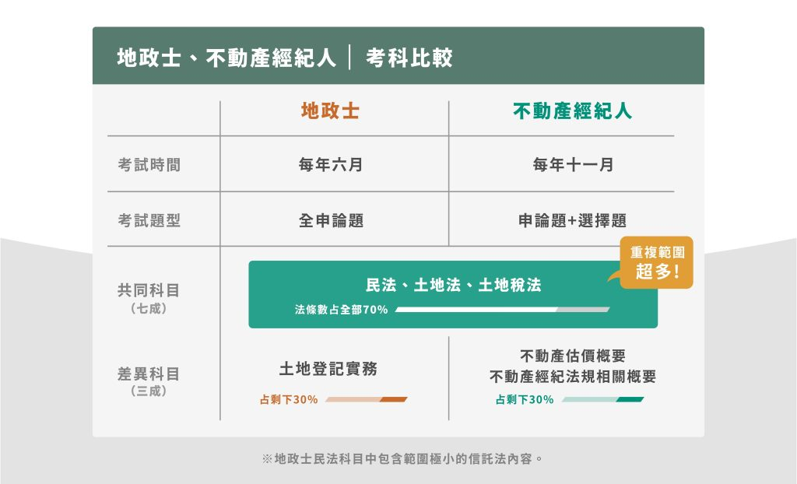
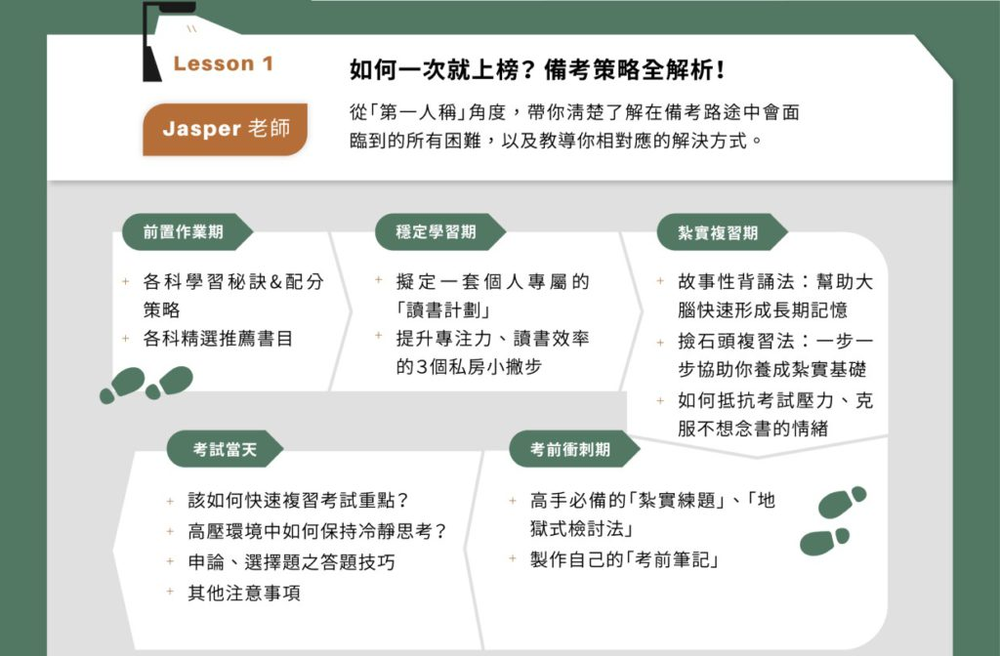
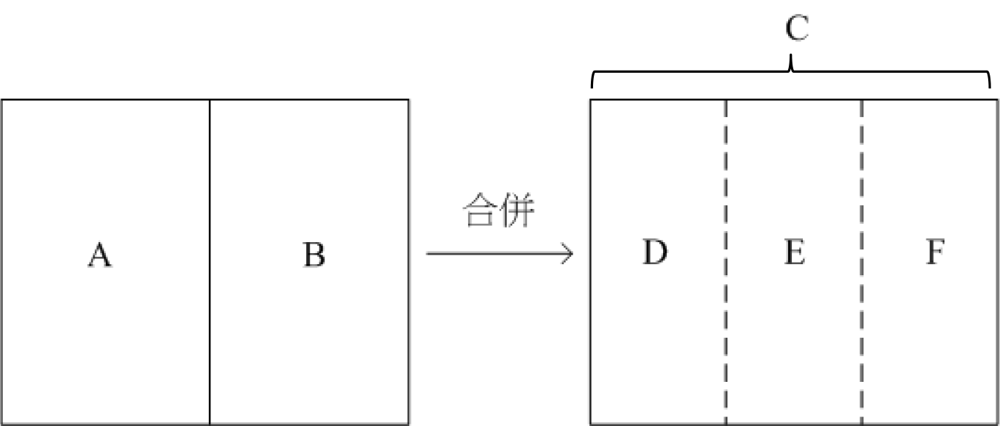
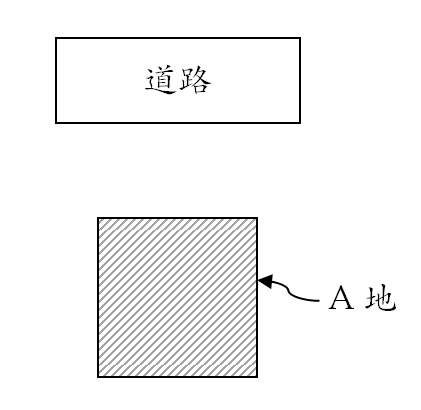
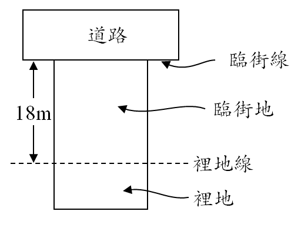
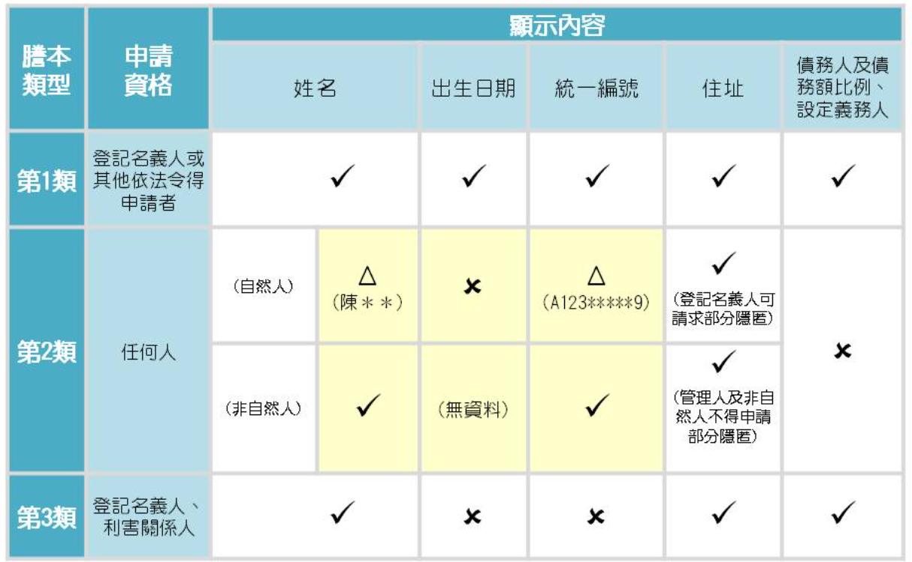

年度合輯：2022 年¶
共收錄 189 篇文章。
1. 大陸地區人民繼承臺灣地區人民之遺產規定¶
發布日期: 2022-01-04
有關大陸地區人民繼承臺灣地區人民之遺產，依據臺灣地區與大陸地區人民關係條例第66條與第67條規定如下：
• 一、限期表示繼承大陸地區人民繼承臺灣地區人民之遺產，應於繼承開始起三年內以書面向被繼承人住所地之法院為繼承之表示；逾期視為拋棄其繼承權。
立法目的：大陸地區人民固享有民法上之繼承權，惟如繼承狀態久懸不決，必將影響臺灣地區經濟秩序之穩定及共同繼承人權益，爰為本條之規定，俾使繼承之法律關係早日確定。
• 二、繼承額度與標的之限制(一)被繼承人在臺灣地區之遺產，由大陸地區人民依法繼承者，其所得財產總額，每人不得逾新臺幣二百萬元。超過部分，歸屬臺灣地區同為繼承之人；臺灣地區無同為繼承之人者，歸屬臺灣地區後順序之繼承人；臺灣地區無繼承人者，歸屬國庫。(二)遺產中，有以不動產為標的者，應將大陸地區繼承人之繼承權利折算為價額。但其為臺灣地區繼承人賴以居住之不動產者，大陸地區繼承人不得繼承之，於定大陸地區繼承人應得部分時，其價額不計入遺產總額。
立法目的：
-
為避免臺灣地區資金大量流入大陸地區，爰予限制繼承額度。
-
為保障臺灣地區繼承人居住權利，爰規定如遺產中為臺灣地區繼承人賴以居住之不動產者，大陸地區繼承人不得繼承之。
• 三、臺灣地區人民配偶之例外規定大陸地區人民為臺灣地區人民配偶，其繼承在臺灣地區之遺產或受遺贈者，依下列規定辦理：(一) 不適用第一項及第三項總額不得逾新臺幣二百萬元之限制規定。(二)其經許可長期居留者，得繼承以不動產為標的之遺產，不適用前項有關繼承權利應折算為價額之規定。但不動產為臺灣地區繼承人賴以居住者，不得繼承之，於定大陸地區繼承人應得部分時，其價額不計入遺產總額。(三)前款繼承之不動產，如為土地法第十七條第一項各款所列土地，準用同條第二項但書規定辦理。
立法目的：大陸配偶基於婚姻關係與臺灣配偶共營生活，與臺灣社會及家庭建立緊密連帶關係，有別於一般大陸地區人民。為維護大陸配偶本於婚姻關係之生活及財產權益，其繼承權應進一步予以保障。¶
注：本文圖片存放於 ./images/ 目錄下
2. 民法§179｜不當得利¶
發布日期: 2022-01-05
不當得利為民法重要觀念，在考試中常常搭配民法各種題型出現，以下為同學們舉例說明，帶同學更了解不當得利構成要件以及使用時機。
不當得利的意義
無法律上之原因而受利益，致他人受損害者，應返還其利益。
不當得利的種類
- 給付型的不當得利
- 侵權型的不當得利
不當得利的要件
- 一方受利益
- 他方受損害
- 損益之間有因果關係
- 無法律上原因
實例說明
以下介紹侵權型的不當得利：
Q｜若小明擁有一塊土地（A地），小明未使用該土地，將該土地放置不用，則乙未經過甲的同意，直接佔有該地，並作為旅館使用，賺取大筆利潤。十年後，甲想起自己擁有 A 地，想規劃成便利商店使用，則甲該如何保障自己的權益。
A｜甲雖將A地放置不用，但 A 地所有權人仍為甲所有，乙無權占有 A 地，並作成旅館使用，符合不當得利的 4 個要件（無法律原因{無權占有}、乙獲利、甲受損、且損益有因果關係），故甲可以行使民法第 179 條，依據不當得利，請求乙返回獲取的利益。
補充說明
不當得利的消滅時效無特別規定，故屬於一般消滅時效，故依民法第 125 條，消滅時效為 15 年。
Hank 老師提醒
不當得利通常不會自己獨立一個考題，常搭配各種題型，故一定要先知道其意義，熟背要件，再了解其會發生的法律效果。
．延伸閱讀
原文出處：Jasper 不動產
3. 回饋與補償（下）¶
發布日期: 2022-01-06
• (二) 補償：由高密度土地使用變更為低密度土地使用，政府有補償之義務。其理由如下：
-
財產權保障：土地使用分區管制透過土地使用種類及土地使用強度，授予私人財產權。因此，地主擁有土地既有發展權，至於未來發展權置於公共領域，屬於國家所有。土地使用由高密度變更為低密度，等同國家剝奪私人既有發展權，故政府應給予補償。
-
信賴保護：行政程序法第8條規定：「行政行為，應以誠實信用之方法為之，並應保護人民正當合理之信賴。」準此，政府施政應保障人民正當合理之信賴。今，透過分區管制，土地價值因而確定，買賣雙方據以交易土地。此皆由於人民信賴分區管制制度所形成，故政府變更分區管制內容，造成地主權益受損，應給予補償。
-
特別犠牲：國家機關依法行使公權力致人民之財產遭受損失，若逾其社會責任所應忍受之範圍，形成個人之特別犧牲者，國家應予合理補償（司法院釋字第440號解釋）。都市計畫變更，如由高密度土地使用變更為低密度土地使用，就土地遭受變更之地主而言，屬於特別犠牲，故國家應給予補償。
例如，國土計畫法第32條第2項規定：「直轄市、縣（市）主管機關對於既有合法可建築用地經依直轄市、縣（市）國土計畫變更為非可建築用地時，其所受之損失，應予適當補償。」即是一例。
• (三) 結論：
-
回饋與補償，於都市計畫土地（即都市土地）與都市計畫以外土地（即非都市土地）皆適用。換言之，回饋與補償，全國土地皆應比照辦理。
-
我國雖有計畫變更之回饋與補償規定，但其規定散布於各法律，未一致或未周延之處頗多，故宜整合在同一法典。
-
回饋額度與補償額度應確實、適當、合理，故宜委由不動產估價師評估。
4. 回饋收入用於補償支出，專款專用，以力求財務收支平衡。¶
注：本文圖片存放於 ./images/ 目錄下
4. 土地法§ 79-1｜預告登記¶
發布日期: 2022-01-07
社會上常見父母購置不動產登記在小孩名下，又怕不動產被小孩隨便賣掉，而求助於地政士的情形，其實，只要了解預告登記，就可以防止登記名義人隨意過戶不動產！
預告登記的意義
預告登記屬限制登記的一種，是預為保全對於他人土地建物權利變更、附條件或期限之請求權，而向地政事務所申請限制登記名義人處分其土地建物權利之登記。
實例說明
甲在乙之土地上辦理預告登記，此時土地登記謄本所有權簿上的其他登記事項欄上就會記載：「（節錄）⋯預告登記請求權人：甲，內容：未辦妥所有權移轉登記予請求權人前不得移轉予他人，義務人：乙⋯」，往後乙若要辦理不動產過戶或設定抵押權，都需先經過甲的同意。
Erin 老師提醒
預告登記，對於因徵收、法院判決或強制執行而為新登記，無排除之效力。所以即使辦理了預告登記，當不動產被法院強制執行時，拍定人還是可以順利取得所有權的喔！
．延伸閱讀
原文出處：Jasper 不動產
5. 民法§ 79｜限制行為能力人之契約行為¶
發布日期: 2022-01-07
新聞上常看到小孩子為了支持偶像，拿爸媽的信用卡狂買周邊商品，事後父母能否主張交易無效，並要求廠商還錢呢？這就跟限制行為能力人之契約行為有關喔！
限制行為能力人之契約行為的意義
民法規定滿七歲以上之未成年人（滿18歲成年），為限制行為能力人，在法律上考量其社會歷練和承擔責任能力的不足，故以保護為目的，對其意思表示之能力做出限制。
限制行為能力人之契約行為的要件
- 當事人為限制行為能力人
- 限制行為能力人的法律行為，原則上須經法定代理人同意，例外屬於「純獲法律上利益，或依其年齡及身份、日常生活所必需」的事項，則可以自己決定
實例說明
依據民法，父母可以在事後以法定代理人的身分，不承認小孩和賣家簽訂的買賣契約，使其契約無效並要求賣家返還獲得的價金，若賣家不返還價金，就會構成不當得利的侵權行為喔，當然父母也要把偶像周邊還給賣家。
Ding 老師提醒
看到題目只要注意當事者年齡和不同行為能力人的效力就可以拿分了。
．延伸閱讀
原文出處：Jasper 不動產
6. 五大打炒房之措施¶
發布日期: 2022-01-11
各位同學好
今日專欄彙整有關內政部110年12月9日針對房市多頭，決議再修《平均地權條例》及《不動產經紀業管理條例》，祭出五大打炒房之措施：
屬今年土地法規、土地政策之重要考題，一定要準備起來～
| 五大打炒房措施 | 規定內容 | 罰則 |
|---|---|---|
| 五大打炒房措施 | 規定內容 | 罰則 |
| 預售屋禁止換約轉售 | 預售屋、新建成屋買賣契約不得讓與或轉售(配偶、 直系或二親等內旁系血親除外)， 且銷售者不得同意或協助買賣契約讓與或轉售 |
按戶棟處罰50-300萬元 |
| 重罰炒作行為 | 有意圖影響交易價格、 製造熱銷假象及壟斷轉售牟利等不動產炒作行為 |
處罰100-500萬元 |
| 造成民眾恐慌及市場交易不安等損及公眾或他人情形 | 3年以下徒刑或併科罰金100-5,000萬元 | |
| 預售屋解約申報登錄 | 30日內辦理登錄申報 | 按戶棟處罰 3-15萬元 |
| 私法人購屋許可制 | 增訂私法人購屋(住宅)許可制 限制取得後於5年內不 得辦理移轉、讓與或預告登記 |
─ |
| 建立檢舉獎金制度 | 建立不動產炒作銷售、 買賣或成交資訊申報違規的檢舉及獎金制度 |
經查證屬實，以實收罰鍰總金額一定比例作為檢舉獎金 |
資料來源：內政部，https://www.moi.gov.tw/News_Content.aspx?n=4&s=255143
注：本文圖片存放於 ./images/ 目錄下
7. 土地悲劇（上）¶
發布日期: 2022-01-13
土地悲劇有二種，一為共用地悲劇（The Tragedy of the Commons）。另一為反共用地悲劇（The Tragedy of the Anticommons）。前者造成土地資源過度利用，甚至枯竭；後者造成土地資源低度利用，甚至荒廢。
• (一) 共用地悲劇有一片草原，附近居住一群牧羊人，牧羊人都會將自己的羊群趕到草原吃草。因為大家都可以免費使用草原，因此每一牧羊人基於本身利益，儘可能讓自己的羊隻愈多愈好，且吃得愈飽愈好。人同此心，心同此理。最後，草原因過度使用，終至枯竭。此即草原的悲劇（共用地悲劇，亦稱為草原的悲劇）。 另外，天空的產權未界定清楚，工廠任意排放廢氣，造成空氣污染。海洋的產權未界定清楚，漁民過度捕撈，造成漁場枯竭。地下水的產權未界定清楚，養殖業超抽地下水，造成地層下陷。以上皆是共用地悲劇的實例。 免費之共用土地（即財產權未界定清楚），如果自己不儘量使用，別人卻儘量使用，則自己反而吃虧。最後，大家都儘量使用。因此，個人之自利行為，造成集體不理性之悲劇。¶
注：本文圖片存放於 ./images/ 目錄下
8. 02 不動產經紀人｜考試資訊全介紹¶
發布日期: 2022-01-14
不動產經紀人考試約每年八月報名，十一月考試，不動產經紀人考試屬於國家考試「普考」階級，只要高中職畢業就能應考，想知道更多關於不動產經紀人的考試資訊嗎？讓Jasper一一來告訴你！
報名日期：
約每年八月，到考選部官網報名
考試日期：
約每年十一月
應考資格：
滿足下列兩項條件則一即可
1.公立或立案之私立高級中等或高級職業學校以上學校畢業，領有畢業證書者。
2.高等或普通檢定考試及格者。
考試科目：
1.共同科目（共一科）：國文
2.專業科目（共四科）：民法／土地法與土地相關稅法概要／不動產估價概要／ 不動產經紀相關法規概要
考試題型：
1.共同科目：國文考兩篇作文，一篇佔 50 分，滿分 100 分。但共同科目僅佔總成績 10 %，因此重心應放在專業科目。
2.專業科目：四科皆為 50 分申論題＋ 50 分選擇題。申論題考兩篇，一篇佔 25 分，選擇題考25題，一題2分。專業科目佔總成績 90 %，應專心準備。
及格標準：
1.總成績平均滿六十分及格。
2.共同科目成績 x 0.1 + 四個專業科目成績總和 ÷4 x 0.9 >= 60
3.有一科成績為零分或專業科目平均成績未滿五十分者，均不予及格。缺考之科目，以零分計算。
歷年錄取率：約在 10 %~ 20 %之間，屬於國家考試中較為簡單的考試
地政士與不動產經紀人併稱不動產黃金雙證照，不僅實務上配合密切、未來合作發展性高，兩張證照考試的考科當中最難的三科還都是重複的，考生只要多讀其他較簡單的小科目就可以一次考取兩張證照，因此非常多考生會選擇兩場考試一起準備，來讓效益最大化唷！
以上是不動產經紀人考試資訊全介紹，想知道如何準備考試嗎？
．延伸閱讀
下篇：02 地政士｜考試資訊全介紹
上篇：01 不動產經紀人｜證照介紹&優勢
原文出處：Jasper 不動產
9. 01 地政士｜證照介紹&優勢¶
發布日期: 2022-01-14
隨著房地產熱度越來越高，地政士（土地代書）身價也跟著水漲船高，究竟地政士的工作內容是什麼？自行開業年薪真的能破百萬嗎？考上證照有什麼好處呢？讓Jasper一一告訴你！
國家級證照背書，業界最專業的象徵
地政士，常被稱為土地代書，顧名思義就是在不動產買賣案件時，擔任買賣雙方的代理人，維護買賣雙方應有權益。而一般民眾申請土地登記、土地測量、撰擬不動產契約或協議等事項，也都會委託地政士辦理。
房地產狂熱，地政士需求增加
房市熱度不減，交易案件越來越多，不少事務所、房仲、代銷業都在招兵買賣，隨著近年法規修正加上房地產熱度的推波助瀾，地政士也成為最夯的工作選項之一，不僅出路廣，且案件計酬薪水高，報名考試人數也年年激增。
考取證照，晉升年薪百萬
地政士進入門檻並不高，只要考取證照，即便沒有相關背景也能成為地政士。只要考取證照，並且累積工作經驗，年薪百萬大有人在，後續也可自行開業，開業後因此月入 10 ~ 20 萬的地政士比比皆是。
再攻取不動產經紀人證照，效益最大化
一件不動產買賣案，通常由不動產經紀人媒合買賣雙方，再由地政士代辦後續交易程序，維護買賣雙方應有的權益。同時考取兩張證照的人，就可以賺取一個案件從頭到尾所有的服務費用。
不動產經紀人考試與地政士考試重複科目非常多，且經紀人考試相對簡單一些，有選擇題可以搶分，還能透過出租等方式獲取一年近十萬的被動收入，因此非常多考生會選擇兩場考試一起準備，來讓效益最大化唷！
．延伸閱讀
原文出處：Jasper 不動產
10. 01 不動產經紀人｜證照介紹 & 優勢¶
發布日期: 2022-01-14
房地產熱度創新高，房仲店面數量比超商還多，也造成不動產經紀人身價暴漲。報考人數年年激增！究竟不動產經紀人的工作內容是什麼？房仲、代銷業好賺嗎？證照能為我帶來多少好處呢？讓Jasper一一告訴你。
不動產買賣的協商專家
不動產經紀人是不動產買賣的協商專家，多從事仲介、代銷業，幫助顧客協商交易，從中賺取佣金。依內政部規定，傭金費用最多可收取至 6 %。比如一間總價 2500 萬元的不動產買賣案件，最高就可收取 150 萬元的傭金。
國家級證照背書，業界最專業的象徵
大多數房仲、代銷從業人員僅有「不動產營業員」執照。而「不動產經紀人」證照則可以想像成法律上不動產營業員的主管，根據不動產經紀業管理條例第 11 、 22 條之規定， 1 名經紀人可帶 20 名營業員，且有許多專業文件僅能由經紀人簽章。因此獲得經紀人證照，能大大的提升專業形象、讓客戶信賴感增加，來獲得更多獲利機會！
保障底薪5萬＋每月證照獎金
台灣不動產業長期仍穩定向上發展，信義、永慶等大型房仲公司，開出了保障底薪五萬的優渥薪水來招募新人，若取得不動產經紀人證照，則有機會獲得每月額外發放 4000 ~ 8000 元的獎金，考上不動產經紀人後等於擁有一年近 10 萬元的被動獎金收入，含金量非常高以外，也能大大提升專業形象。
可將牌照出租，創造被動收入
根據「不動產經紀業管理條例」第 11 條規定，經紀業設立之營業處所至少應置經紀人一人。由此可見，每間店面皆需要至少一張不動產經紀人證照，也因此許多公司會向外租取證照來拓展店面。
租牌行情依每縣市不一，大約落在每月 8000 ~ 12000 元左右，等於一年能有約 10 萬元的被動租金收入。
再攻取地政士證照，賺取先機
一件不動產買賣案，通常由不動產經紀人媒合買賣雙方，再由地政士代辦後續交易程序，維護買賣雙方應有的權益。同時考取兩張證照的人，就可以賺取一個案件從頭到尾所有的服務費用。
不動產經紀人及地政士這兩場證照考試不僅考試科目重複許多，且都屬於「普考」階級的考試，甚至連出題老師也時常重疊，因此許多人會一起準備，將不動產的黃金雙照一次考取。
．延伸閱讀
原文出處：Jasper 不動產
11. 02 地政士｜考試資訊全介紹¶
發布日期: 2022-01-14
地政士考試約每年三月報名，六月考試，地政士考試屬於國家考試「普考」階級，只要高中職畢業就能應考，想知道更多關於地政士的考試資訊嗎？讓Jasper一一來告訴你！
報名日期：
約每年三月，到考選部官網報名
考試日期：
約每年六月
應考資格：
滿下列兩項條件擇一即可
1.公立或立案之私立高級中等或高級職業學校以上學校畢業，領有畢業證書者。
2.高等或普通檢定考試及格者。
考試科目：
1.共同科目（共一科）：國文
2.專業科目（共四科）：民法概要與信託法概要／土地法規／土地稅法規／土地登記實務
考試題型：
1.共同科目：國文考兩篇作文，一篇佔 50 分，滿分 100 分。但共同科目僅佔總成績 10 %，因此重心應放在專業科目。
2.專業科目：四科皆為申論題。申論題考四篇，一篇佔 25 分。專業科目佔總成績 90 %，應專心準備。
及格標準：
1.總成績平均滿六十分及格。
2.共同科目成績 x 0 . 1 + 專業科目成績總和 ÷ 4 x 0 . 9 >= 60
3.有一科成績為零分或專業科目平均成績未滿五十分者，均不予及格。缺考之科目，以零分計算。
歷年錄取率：約在5%~10%之間

地政士與不動產經紀人併稱不動產黃金雙證照，不僅實務上配合密切、未來合作發展性高，兩張證照考試的考科當中最難的三科還都是重複的，考生只要多讀其他較簡單的小科目就可以一次考取兩張證照，因此非常多考生會選擇兩場考試一起準備，來讓效益最大化唷！
．延伸閱讀
原文出處：Jasper 不動產
12. 「大法官解釋」走入歷史，憲法法庭正式上路¶
發布日期: 2022-01-18
各位同學好，今日專欄說明有關以往我們高普考需要準備的大法官釋字，以後將改採「憲法法庭」審理案件，釋憲結果將變成「判決」（即「OOO年度憲O字第OOO號判決（裁定）」）而非以往的「解釋案」。
• 一、意義「憲法訴訟法」於2018年12月18日立法通過，於今年(111年)1月4日施行。新制由15位大法官組成「憲法法庭」，取代原有的「大法官會議」，審理程序將全面司法化、裁判化及法庭化，以嚴謹的訴訟程序與法院性質的運作模式，審理憲法訴訟案件，亦即現行司法院大法官以會議方式解釋憲法的制度，將走入歷史。憲法訴訟新制的目的，是要完善我國的憲法審查制度，大法官憲法審查客體從原本的法律、命令，藉由新制，擴及於法院確定終局裁判，期盼帶給人民更完整優質、無缺漏的基本權保障。
• 二、特色(一)大法官審理案件全面司法化、裁判化及法庭化(二)憲法審查案件表決門檻降低(三)建立裁判憲法審查制度(四)憲法法庭言詞辯論採強制代理(五)新舊法過渡時期妥適兼顧當事人權益之保護(六)憲法法庭書狀規格化(七)E化服務使聲請憲法法庭裁判更便捷(八)憲法法庭依法主動公開受理案件之聲請書及答辯書(九)建立閱卷制度(十)引進法庭之友制度促進案件之多元思辨(十一)主筆大法官顯名並公開大法官同意與不同意主文之立場
針對第三點裁判審查制度，依其立法說明如下：按憲法是國家的根本大法，具有保障人民基本權利功能的最高效力，所有國家權力的行使，皆不應違背憲法的規定，更應致力於保障人民在憲法上的基本權利。當國家權力的行使（例如法律、命令）有違反憲法的疑慮時，憲法審查相關制度就應該裁決這些國家權力行使是否合憲，守護人民的基本權利，免於國家權力的恣意侵害。而這些可能侵害人民憲法上權利的國家權力，不僅包括立法權與行政權，也包括司法權。
在原本的確定終局裁判適用之法規範審查制度下，大法官只進行抽象法規範審查，不具體裁判憲法爭議，僅能抽象闡述法律的內涵為何、是不是符合憲法的意旨，而不能將這些闡述直接應用在個案中的具體事實。亦即，以往大法官職司的憲法審查並無法處理各法院裁判在解釋法律及適用法律時，誤認或忽略了基本權利重要意義，或是違反了通常情況下所理解的憲法價值等等司法權行使有違憲疑慮的情形。因此，配合憲法訴訟法引進裁判憲法審查制度，將法規範及該確定終局裁判二者，納入人民得聲請憲法審查之客體，俱屬憲法法庭所得審理之案件類型。
其重要規定為憲法訴訟法第59條：「人民就其依法定程序用盡審級救濟之案件，對於受不利確定終局裁判所適用之法規範或該裁判，認有牴觸憲法者，得聲請憲法法庭為宣告違憲之判決。」亦即人民可個案聲請釋憲，而其效果依第62條，「憲法法庭認人民之聲請有理由者，應於判決主文宣告該確定終局裁判違憲，並廢棄之，發回管轄法院；如認該確定終局裁判所適用之法規範違憲，並為法規範違憲之宣告。」
參考資料：司法院新聞稿，110-12-21，憲法訴訟法111年1月4日正式施行 完善我國憲法審查制度新聞稿，https://www.judicial.gov.tw/tw/cp-1887-557673-64ed6-1.html。¶
注：本文圖片存放於 ./images/ 目錄下
13. 民法§ 184 ｜一般侵權行為¶
發布日期: 2022-01-19
侵權行為常是考試的重點所在，並且經常搭配不同的概念來出題，先打好有關一般侵權行為的基礎，對考試一定有幫助，特別幫大家來複習一下。
侵權行為的意義
一般侵權行為，簡單來說就是處於一般情況下，不法（違反法律）侵害到他人的權利時，須負擔的責任。
民法第 184 條的侵權行為共分為 3 種類別
1.第 184 條第 1 項前段： 因故意或過失，不法侵害他人之權利者，負損害賠償責任。
2.第 184 條第 1 項後段：故意以背於善良風俗之方法，加損害於他人者亦同。
一般侵權行為的構成要件：
3.第 184 條第 2 項:：違反保護他人之法律，致生損害於他人者，負賠償責任。但能證明其行為無過失者，不在此限。
侵權行為的要件
一般最常遇見的題型為第 1 種類別，所以接下來為大家介紹第 184 條第 1 項前段，
此種一般侵權行為的內容。首先講解其構成要件：
- 行為須不法
- 須有故意或過失
- 須侵害他人權利
- 須造成損害
- 須有加害行為
- 行為與損害間須有因果關係
- 侵害人須有識別能力
實例說明
Q｜甲為11歲的小學生，跟同學乙因遊戲而吵架，甲最後吵輸了，不甘心的情況下，推乙一把，撞到後面的水泥牆，乙因此頭部受傷，請問甲需要負什麼責任。
A｜首先判斷此題是否符合一般侵權行為第 1 種類別的構成要件，若都符合，則本題乙則可以侵權行為要求甲損害賠償其損失。這邊需要特別注意，一般侵權行為其中一個要件為侵害人須有責任能力，(何謂識別能力，識別能力:明白自己的行為將產生何種法律效果)，本題甲是 11 歲的小學生，只要能夠認知到，他推人的這個舉動，會讓乙受，即具有識別能力，故本題甲須負損害賠償責任。
Hank 老師提醒
先釐清意義，並熟記構成一般侵權行為的要件，最後瞭解會一般侵權行為將發生何種法律效果。
．延伸閱讀
原文出處：Jasper 不動產
14. 民法§87｜通謀虛偽的意思表示¶
發布日期: 2022-01-19
甲為了躲避債主的討債，和乙達成協議進行名下 A 屋的買賣交易並完成過戶，以此達到脫產的目的，日後乙是否可向甲以 A 屋所有權人身分，要求甲交付 A 屋呢？
通謀虛偽的意義
雙方對於將成立之法律行為，心中皆不欲發生其法律行為之效果，但仍為意思表示。
通謀虛偽的要件
（一）須有意思表示存在。
（二）表示與真意不符。
（三）其非真意表示與相對人通謀。
符合上述要件下，表意人與相對人間之法律行為構成通謀虛偽意思表示，效力為無效（不論債權行為或物權行為），且不得對抗善意第三人。
實例說明
上述情境中，甲是為了達到脫產目的才和乙進行A屋的買賣，而乙身為知情者並配合甲完成買賣行為，因此符合通謀虛偽的成立要件。若乙要求甲交付A屋時，甲可依民法第87條規定，主張當初的買賣意思表示為通謀虛偽，因此買賣和過戶行為的效果皆為無效，則甲仍為A屋實際上的所有權人，乙自然無法要求甲交付A屋。
Ding 老師提醒
通謀虛偽是一個很常考的觀念，只要熟記要件和效力，一碰到就是直接拿分喔。
．延伸閱讀
原文出處：Jasper 不動產
15. 土地悲劇（下）¶
發布日期: 2022-01-20
• (二) 反共用地悲劇有一塊祭祠公業土地，年代久遠，因不斷繼承，造成派下員眾多。如果想要使用或處分該土地，須全體派下員之同意。因此，任何一個派下員皆可以行使否決權。最後，該土地因人多口雜、意見分岐，難以使用或處分，終至荒廢。另外，共有土地，土地產權為分別共有，由於產權不完整，如果想要使用或處分該土地，須全體共有人或多數共有人同意（詳土地法第34條之1），造成共有地難以使用或處分，最後只能任其荒廢。一幢老舊公寓大厦，建物產權為區分所有，由於產權不完整（指一幢公寓大厦內存在很多棟區分所有建物），如果想要更新重建，須全體區分所有權人或多數區分所有權人同意（詳都市更新條例第37條），造成該公寓大厦難以更新重建，最後只能任其荒廢。以上皆是反共用地悲劇的實例。土地產權零碎複雜（即財產權不完整），想要使用或處分該土地，須經全體或多數持分所有權人同意，層層監管之結果，造成土地荒廢。因此，個人之自利行為，造成集體不理性之悲劇。對土地利用之不利影響，公同共有大於分別共有，分別共有大於單獨所有。另，共有人數愈多，對土地利用愈不利。
• (三) 結論
-
財產權未界定清楚，造成共用地悲劇；財產權不完整，造成反共用地悲劇。因此，財產權界定清楚及財產權完整，始能避免土地悲劇之發生，俾土地適當合理使用。
-
共用地悲劇導致土地過度利用，反共用地悲劇導致土地低度利用。兩者皆屬集體不理性所發生之悲劇。
3. 共用地悲劇與反共用地悲劇皆屬財產權問題，財產權與土地利用息息相關。舉其大項者，世界各國之地權制度有土地私有制與土地國有制之分。土地私有制容易發生市場失靈，造成土地投機壟斷之流弊。土地國有制容易發生政府失靈，造成土地無效率使用之流弊。¶
注：本文圖片存放於 ./images/ 目錄下
16. 合併分割¶
發布日期: 2022-01-25
各位同學好
今日專欄說明有關合併分割之情形。
案例：A、B為兩筆相鄰之土地，A地為甲、乙與丙三人分別共有，B地為甲、乙、丙與丁分別共有，今甲想要把A、B兩筆地進行分割，讓自己能夠單獨所有一筆面積較大之土地，請問有何方式？
依照下列方式採合併分割：一、協議合併分割最高行政法院八十八年度判字第四一二三號判決要旨略以：「共有人共有數共有物，不論各共有物共有人是否全部相同，如經全體共有人同意協議合併分割，依協議分割之法意觀之，亦非法所不許。」因此，可經甲、乙、丙與丁全體同意進行分割協議合併分割。
• 二、多數決訴請裁判合併分割如無法全體協議，則按民法§824第5項：「共有人相同之數不動產，除法令另有規定外，共有人得請求合併分割」。同條第6項：「共有人部分相同之相鄰數不動產，各該不動產均具應有部分之共有人，經各不動產應有部分過半數共有人之同意，得適用前項規定，請求合併分割。但法院認合併分割為不適當者，仍分別分割之。」因此，可經甲取得乙、丙同意，以應有部分過半，訴請法院進行合併分割。
又土地登記規則§106：數宗共有土地併同辦理共有物分割者，不以同一地段、同一登記機關為限。¶
注：本文圖片存放於 ./images/ 目錄下
17. 重購退稅之計算實例¶
發布日期: 2022-01-27
甲出售一棟自住房地，出售價格1,500萬元，公告土地現值1,000萬元，土地增值稅200萬元，房地合一所得稅100萬元。半年後，甲再購入一棟自住房地，購入價格1,200萬元，公告土地現值900萬元。申報土地移轉現值以公告土地現值為準。試計算甲重購退稅之額度？
【解答】
• (一) 重購退還土地增值稅：1,000－200＝800900－800＝100重購退還土地增值稅100萬元。
• (二) 重購退還房地合一所得稅：[圖片1]重購退還房地合一所得稅80萬元。
文章圖片¶

18. 土地登記規則§ 78｜建物所有權第一次登記¶
發布日期: 2022-01-29
目前我國對於建物登記是採任意登記制，法律並沒有強制規定建物一定要辦理登記，也就是說，未辦理第一次登記的建物不一定就是不合法的建物，然而，要辦理第一次登記取得所有權狀的話，建物一定要是合法建物喔！違章建物是不能登記的！本篇文章帶您認識什麼是建物所有權第一次登記！
建物所有權第一次登記的意義
指新建築或既有的合法建物，為確保其權屬而向登記機關申請辦理所有權之登記。
建物所有權第一次登記的要件
- 建物需合法：在實施建築管理後，所有新建的建物都必須循一定程序取得建造執照及使用執照後，才算是合法建物。而在尚未實施建築管理前就蓋好的建物，則必須提出土地登記規則第 79 條第 2 項的相關文件辦理。
- 基地需已完成登記：在光復初期政府曾全面清查土地並辦理土地總登記，所以絕大多數的土地皆已完成登記了。
- 需有基地使用權：建物起造人，需有基地之使用權才可以建造建物，使用權之來源如有所有權、地上權、典權、租賃權或使用同意書等等。
- 需先辦理建物第一次測量：申請建物所有權第一次登記前，應先向登記機關申請建物第一次測量。但在 102 年 10 月 1 日以後領有使用執照之建物，檢附依使用執照竣工平面圖繪製及簽證之建物標示圖辦理登記者，不在此限。
Erin 老師提醒
各地區實施建築管理的時間點並不相同，需詢問當地建築主管機關確定，以台北市為例，各區實施建築管理時間約在民國40-50年間。
．延伸閱讀
原文出處：Jasper 不動產
19. 民法§348｜債權行為不以有處分權為必要¶
發布日期: 2022-01-29
甲在未經乙同意下，擅自把乙的汽車賣給丙並交付，請問甲丙間的債權行為是否有效?
債權行為的意義
債權行為是不會直接引起買賣標的物權利的變動，所以出賣人對於出賣之標的物，是不以有處分權為必要的。
債權行為的要件
債權行為：包含買賣、贈與、雇傭等會在當事人間成立契約關係的法律行為。
物權行為：包含拋棄、交付、移轉登記物等，以物權之得失變更內容的行為。
處分權：財產所有人在法律規定內擁有對財產處理的權利。
實例說明
根據民法中「債權行為不以有處分權為必要」的規定，雖然甲並沒有汽車的處分權，但這並不影響甲丙成立買賣契約，因此甲丙間的債權行為是有效的。
簡單來說今天甲既然敢賣不是自己的東西，那法律就承認這個買賣契約是有效的，如果甲有本事履行和丙的買賣契約，法律何必干涉影響該買賣契約的效力呢？當甲不能履行這個出賣乙車的買賣契約時，丙就可以用債務不履行的規定，向甲請求損害賠償或解除契約囉。
Ding 老師提醒
「債權行為不以有處分權為必要」很常出現在無權處分的題目中喔，同學們一定要搞清楚債權、物權間的關係，以及後續衍生的相關法條喔。
．延伸閱讀
原文出處：Jasper 不動產
20. 民法§ 464 & 474 ｜消費借貸 VS 使用借貸¶
發布日期: 2022-01-30
「诶跟你借一張衛生紙」同學們知道這種生活中很常出現的對話，在民法中也有規範嗎?今天就來讓大家了解何謂借貸契約，以及它們的特點。
消費借貸的意義
借貸契約在民法規定中分成兩類：使用借貸以及消費借貸
- 使用借貸：當事人一方以物交付他方，而約定他方於無償使用後返還其物之契約。
- 消費借貸：當事人一方移轉金錢或其他代替物之所有權於他方，而約定他方以種類、品質、數量相同之物返還之契約；當事人之一方對他方負金錢或其他代替物之給付義務而約定以之作為消費借貸之標的者，亦成立消費借貸。
消費借貸的要件
．使用借貸
- 要物性
- 無償使用
- 返還原物 (未給予借貸物所有權)
．消費借貸
- 要物性
- 可以要求利息
- 返還相同之物或同等價值之物 （給予借貸物所有權）
實例說明
Q｜以下行為何者屬於使用借貸、何者屬於消費借貸?
- 去銀行申辦買房頭期款
- 考試時跟鄰座同學借用橡皮擦
A｜申辦頭期款是消費借貸、借橡皮擦是使用借貸
Ding 老師提醒
兩者最大的不同就是償還的借貸物是否仍為同一個!另外要注意兩個借貸契約都是要物契約，在移轉借貸物時才會發生效力喔。
．延伸閱讀
原文出處：Jasper 不動產
21. 民法 §838-1｜法定地上權¶
發布日期: 2022-01-30
為了保障土地上的房屋所有權人，避免房屋面臨拆除的命運，並促進社會的經濟效用，而發展出法定地上權的概念。
法定地上權的意義
因為土地或土地上建築物移轉，造成土地與土地上上建築物不同人所有，為了避免房屋被拆除，就該地視為已有法定地上權的存在，來保障房屋所有權人。
法定地上權的要件
- 土地及土地上建物，原本同屬同一人所有。
- 土地或土地上建物移轉過後，土地及土地上建築物不同人所有。
- 移轉原因為強制執行之拍賣，或是實行抵押權進行抵押物拍賣。
實例說明
Q｜甲擁有 A 地及 B 屋， A 地上有設定抵押權，抵押權人丙，因為債務未受清償，而行使抵押權， A 地被拍賣，由丁取得，而拍定人丁，是否可行使民法第 767 條，請求甲拆屋還地。
A｜否，丁不得行使拆屋還地，因為民法第 767 條，拍定後， A 地與 B 屋上視為已有法定地上權的存在，故甲有權在 A 地上建屋，丁不得請求拆屋還地。
Ding 老師提醒
法定地上權其中一個很重要的要件為”土地及土地上建物，原本同屬同一人所有”，故大家要先審題是否符合此要件，才得行使法定地上權。
．延伸閱讀
原文出處：Jasper 不動產
22. 民法§172｜無因管理¶
發布日期: 2022-01-30
無因管理是「債之發生」的重要原因之一，其類型可以分成適法、不適法以及不真正的無因管理，以下為同學做簡單的介紹。
無因管理的意義
在民法私法自治的原則下，平衡「鼓勵社會互助」及「禁止干預他人」兩者的法律制度
無因管理的要件
一、未受委任、無法律上的義務：
- 公法上義務：如消防員救火
- 私法上義務：如父母幫子女出醫藥費
二、管理他人事務
無因管理的類型
一、適法無因管理
- 主觀：為本人利益
- 客觀：不違反本人明知或可得知之意思
二、不適法無因管理
- 主觀：為本人利益
- 客觀：違反本人明知或可得知之意思
三、不真正無因管理（如：不法管理、誤信管理）
- 要件：為自己的利益管理他人事務
實例說明
Q｜甲在路邊看到乙走失的小狗，但甲誤以為小狗是朋友丙的，於是把小狗帶回家照顧。請問甲對乙或對丙是否有產生無因管理的法律關係？
A｜對乙有無因管理，對丙則無。
首先甲在無委任和義務的情況下照顧他人的小狗，即構成無因管理的條件，再者受益者為乙，故甲對乙產生無因管理的法律關係，而整件事與丙無關。
Ding 老師提醒
看到無因管理的考題首先要判斷是屬於哪一種類型，再依據題目給的條件就可以輕鬆拿分了喔。
．延伸閱讀
原文出處：Jasper 不動產
23. 民法§125&93｜消滅時效VS除斥期間¶
發布日期: 2022-01-30
民法中的「消滅時效」和「除斥時間」是很多初學者容易搞混的地方，這次來帶大家快速了解兩者的不同。
消滅時效除斥期間的意義
．消滅時效
指因一定期間不行使權利，致其請求權消滅（或障礙）的法律事實。
．除斥期間
權利預定行使之期間。
．消滅時效除斥期間的要件
- 適用客體不同：消滅時效—請求權；除斥期間—形成權。
- 效力不同：消滅時效完成後，請求權並未消失，被請求者獲得抗辯權；除斥時間完成後，形成權消失。
- 能否中斷：消滅時效有可以中斷、不完成、重新起算的效果；除斥時間：為固定周期，時間到就消滅。
實例說明
你能分辨出下列題目想考的是消滅時效，還是除斥期間嗎？
A｜小明拿著25年前的借據，要求小華還錢
B｜小美在小麗的代購群組購買名牌包，二年後發現被騙想要撤銷交易拿回付款
題目A是問消滅時效，題目B是問除斥期間，有更加了解兩者的差異了嗎
Ding 老師提醒
在讀民法時，消滅時效和除斥期間會一直出現，同學們務必要搞懂兩者的不同哦！
．延伸閱讀
原文出處：Jasper 不動產
24. 土地法 §46-1｜地籍圖重測¶
發布日期: 2022-01-30
「地籍圖重測」是近年來政府一直有在實行的重點項目之一，而本篇所介紹的重測程序及爭議處理也是考試常出現的主題！
地籍圖重測的意義
已辦地籍測量之地區，因地籍原圖破損、滅失、比例尺變更或其他重大原因，得重新實施地籍測量。
因為各地政事務所現使用之地籍圖仍有部分是日治時期依據地籍原圖描繪而成之副圖，此類地籍圖已使用逾百年，因圖紙伸縮、破損嚴重而模糊不清，且原地籍圖比例尺過小，不能符合時代之需求，惟有辦理「地籍圖重測」，才能保障人民合法產權。
地籍圖重測的要件
收到重測通知單時土地所有權人應配合事項：
- 自行設立界標。
- 按通知日期到場指界。
若所有權人未配合上述事項，則地政機關得依下列順序逕行施測：
- 鄰地界址。
- 現使用人之指界。
- 參照舊地籍圖。
- 地方習慣。
實例說明
Q｜若土地所有權人對於重測結果有異議時該如何救濟？
A｜土地所有權人因設立界標或到場指界發生界址爭議時，準用第59條第2項規定，由該管直轄市或縣（市）地政機關予以調處，不服調處者，應於接到調處通知後15日內，向司法機關訴請處理，逾期不起訴者，依原調處結果辦理之。
Erin 老師提醒
上述爭議可以進行調處的前提是「土地所有權人有設立界標或到場指界」，所以土地所有權人收到重測通知單時，一定要抽空設立界標或到場指界，才能保障自己的權益哦！
．延伸閱讀
原文出處：Jasper 不動產
25. 土地稅法 § 35｜土地增值稅重購退稅¶
發布日期: 2022-01-30
為了促進土地利用，而發展出重購退稅，減輕所有權人的稅捐負擔。
土地增值稅重購退稅的意義
土地所有權人於出售土地後，自完成移轉登記之日起，二年內重購土地符合要件者，其新購土地地價超過原出售土地地價，扣除繳納土地增值稅後之餘額者，得向主管稽徵機關申請就其已納土地增值稅額內，退還其不足支付新購土地地價之數額。
土地增值稅重購退稅的要件
- 性質條件: 出售用地與重購用地須同性質 （EX.自用住宅用地）
- 時間限制: 完成移轉登記之日， 2 年內重購；或先購買土地， 2 年內出售。
- 使用限制: 出售前一年，未出租營業使用。
- 移轉限制: 重購土地完成移轉登記之日，五年內不得移轉改作其他用途。
- 登記限制: 重購土地登記名義人要跟元出售土地登記名義人相同。
- 面積限制: 重購土地都市 3 公畝、非都市 7 公畝以內。
- 價格限制: 重購價格大於出售價格扣除土增稅之餘額者才可退。
實例說明
Q｜甲於 100 年賣自用住宅用地面積為 50 平方公尺，公告現值為 3000 元/平方公尺，前次移轉現值為 500 元/平方公尺，至 100 年的消費者物價指數為 500 %，後來又於 101 年買一面積為 1000 平方公尺，且現值為 10000 元/平方公尺的自用住宅用地，請問甲是否可請求重購退稅？
A｜由於土地增值稅的重購退稅，重購地價要高於賣的地價，故本題只要符合其他要件，甲即可行使重購退稅，退還依土稅第 35 條規定的土地增值稅。
（小提醒:房地合一所得稅的重購退稅，重購的價格可低於賣的價格，與土增稅的規定不同）
Jasper 老師提醒
房地合一所得稅也有重購退稅的規定，其要件及法律效果不同，切記不要搞混。
．延伸閱讀
原文出處：Jasper 不動產
26. 民法 § 144｜抗辯權的意義以及種類¶
發布日期: 2022-01-30
生活中會聽到有人說「欠錢時間久了，就不用還了」，這句話到底是不是真的呢?今天就來帶大家了解何謂抗辯權吧!
抗辯權的意義
因為土地或土地上建築物移轉，造成土地與土地上上建築物不同人所有，為了避免房屋被拆除，就該地視為已有法定地上權的存在，來保障常見的四種權利分別為請求權、支配權、形成權和抗辯權，抗辯權是能夠「對抗權利人行使權利的權利」，也就是向對方說不的權利。在法律上是屬於防守性質的權利，只有在對方向你提出請求權時，你才能以相對應的抗辯權進行對抗。
抗辯權的種類
按時效可以分成兩種：永久性抗辯權vs一時性抗辯權
- 永久性抗辯權：民法144條消滅時效抗辯權、民法第198條惡意抗辯權。
- 暫時性抗辯權：民法第264條同時履行抗辯權、民法第265條不安抗辯權。
實例說明
Q｜甲因為生意周轉不靈，向好友乙借了 30 萬，並承諾 2 年後還清，過了 20 年乙才忽然想起這筆借款，請問乙向甲要求還錢時，甲可以拒絕嗎?
A｜在民法第 125 條有規定，一般借款的請求權時效為 15 年，因此若乙在這 20 年間都沒有讓時效中斷（民法第129條）的話，甲在法庭上是可以依據民法第 144 條主張時效抗辯，來對抗乙的還錢請求權，以此拒絕還錢喔！
Ding 老師提醒
法律不會保障讓自己權利睡著的人，因此在日常生活中，一定要隨時注意不同契約的時間規範喔，不然最後權益受損時，只能自己哀嘆司法不公了。
．延伸閱讀
原文出處：Jasper 不動產
27. 徵收收回權時效問題¶
發布日期: 2022-02-08
各位同學新年快樂
今天來談談有關土地徵收收回權之時效問題，主要以土地法、釋字763號為範疇進行討論。
參考最高行政法院109 年度判字第652 號判決，假設一案例如下：
• A. 縣政府於77年7月22日公告徵收某甲之土地（系爭土地），以開闢國中校地，其都市計畫預定78年9月開工，99年9月完工。惟直至105年仍未開闢使用，甲遂依土地法219條規定，向A縣政府申請按徵收補償價額收回系爭土地。試問：（一）A縣政府認為已逾法定得聲請收回期限，不准甲收回，請問是否有理由？（二）甲主張以釋字763號其時效已停止進行，是否有理由？
擬答：
（一）A縣政府認為已逾法定得聲請收回期限，不准甲收回，具有理由依據土地法第219條第1項規定，私有土地經徵收後，有下列情形之一者，原土地所有權人得於徵收補償發給完竣屆滿一年之次日起五年內，向該管直轄市或縣（市）地政機關聲請照徵收價額收回其土地︰(1)徵收補償發給完竣屆滿一年，未依徵收計畫開始使用者。(2)未依核准徵收原定興辦事業使用者。其立法目的係徵收後如不使用或不依計畫使用，似已失卻徵收土地時之本意，與徵收之目的相背，易生濫予徵收之弊，違反地盡其利，損害原土地所有權人權益，故收回權得以作為需用土地人違反徵收目的之制裁手段，藉此防止徵收機關為不必要之徵收，或遷延興辦公共事業。另都市計畫法第83條規定，依本法規定徵收之土地，其使用期限，應依照其呈經核准之計畫期限辦理，不受土地法第二百十九條之限制。不依照核准計畫期限使用者，原土地所有權人得照原徵收價額收回其土地。換言之，依都市計晝法規定徵收之土地（主要為都市計畫公共設施保留地之徴收），有關其收回期限係不受土地法第219條第1項第1款所定「徵收補償發給完竣屆滿一年」起算之限制；須俟其呈經核准之計畫期限屆滿，需用土地人仍不依照核准計畫期限開始使用土地時，原土地所有權人始得行使其收回被徵收土地之權利。亦即，依都市計畫法規定徴收之土地，其原土地所有權人有權得申請收回被徵收土地之期限，係其經核准之計畫使用期限屆滿之次日起5年內；逾此收回權之行使期間，則權利將罹於時效而消滅。此徴收案之使用期限為99年9月，故原土地所有權人甲得收回被徵收土地之期限至104年9月止。而甲是在105年申請收回被徵收土地，其權利已罹於時效。
（二）本件不得按釋字763號適用時效停止進行司法院釋字第763號解釋指出：該條項規定逕以「徵收補償發給完竣屆滿1年之次日」為收回權之時效起算點，並未規定該管直轄市或縣（市）主管機關就被徴收土地之後續使用情形，應定期通知原土地所有權人或依法公告，致其無從及時獲知充分資訊，俾判斷是否行使收回權，不符憲法要求之正當行政程，應自本解釋公布之日起2年內檢討修正。於本解釋公布之日，原土地所有權人之收回權時效尚未完成者，時效停止進行；於該管直轄市或縣（市）主管機關主動依本解釋意旨通知或公告後，未完成之時效繼續進行；修法完成公布後，依新法規定。因此，需釋字763號公布之日（107年5月4日），原土地所有權人之收回權時效尚未完成者，時效方停止進行。而本件甲收回權時效既已完成（104年9月止），則認並無上開解釋效力之適用。因此，甲主張並無理由。¶
注：本文圖片存放於 ./images/ 目錄下
28. 區分所有建物之共有部分得否分割¶
發布日期: 2022-02-10
建物分割分為建物標示分割與建物權利分割二種。前者辦理標示變更登記，後者辦理所有權移轉登記。
• (一) 區分所有建物之共有部分不得為標示分割民法第823條第1項規定：「各共有人，除法令另有規定外，得隨時請求分割共有物。但因物之使用目的不能分割或契約訂有不分割之期限者，不在此限。」準此，各共有人得隨時請求分割共有物，固為民法第823條第1項前段所規定。惟同條項但書又規定，因物之使用目的不能分割者，不在此限。其立法意旨在於增進共有物之經濟效用，並避免不必要之紛爭。區分所有建築物之共同使用部分，為各區分所有人利用該建築物所不可或缺，其性質屬於因物之使用目的不能分割者（司法院釋字第358號）。由此可知，區分所有建物之共有部分不得分割；但此不得分割，僅指標示分割，不包括權利分割。
• (二) 區分所有建物之共有部分得為權利分割民法第799條第5項規定：「專有部分與其所屬之共有部分及其基地之權利，不得分離而為移轉或設定負擔。」又，公寓大廈管理條例第4條第2項規定：「專有部分不得與其所屬建築物共用部分之應有部分及其基地所有權或地上權之應有部分分離而為移轉或設定負擔。」準此，區分所有建物之共有部分，除法令另有規定外，應隨同各相關專有部分及其基地權利為移轉、設定或限制登記（登§94）。由此可知，以區分所有建物為標的辦理共有物分割，其所屬建物共有部分之應有部分及其基地所有權或地上權之應有部分，應併同為共有物之分割標的。但此區分所有建物共有部分之分割，僅指權利分割，不包括標示分割。
• (三) 綜上，區分所有建物之共有部分（俗稱公寓大廈之公共設施部分），不得為標示分割，但得為權利分割。¶
注：本文圖片存放於 ./images/ 目錄下
29. 對土地徵收補償價額異議查處不符之訴訟類型¶
發布日期: 2022-02-15
各位同學好
本周專欄整理有關「對土地徵收補償價額異議查處不符，應提何種訴訟類型？」
依據最高行政法院109年度大字第1號大法庭裁定，其重點摘要如下：
被徵收土地所有權人對徵收補償價額不服，依土地徵收條例第22條第2項規定以書面提出異議，經主管機關為維持原補償價額之查處，如有不服，循序提起行政訴訟，其訴訟種類應為行政訴訟法第5條第2項規定之「課予義務訴訟」。
課予義務訴訟與撤銷訴訟，雖均以行政處分為訴訟之程序標的，惟前者係在於請求作成授益處分，以貫徹人民對行政機關之請求權，並使人民取得強制執行之名義，後者則在於除去已作成之行政處分，以排除行政機關強制執行之可能性。於被徵收土地所有權人認補償價額不足而提起行政訴訟之情形，其自當提起課予義務訴訟請求主管機關另作成給付補償差額之授益處分，或變更原補償處分另為補償價額較高之授益處分，方可取得對主管機關強制執行之名義，以達成其提起訴訟之目的，而非提起撤銷訴訟，請求撤銷對其授益之補償處分。
此外，土地經公告徵收後，所有權人即不得自由使用、收益及處分該土地，致受有損失，因此被徵收土地所有權人應自公告時起即有補償請求權。徵收土地之同時，依法即應主動作成處分發給補償，不待被徵收土地所有權人提出申請。然國家既有補償義務，且被徵收土地所有權人有補償請求權，自不因主管機關主動作成補償處分，即謂被徵收土地所有權人就補償價額不服之情形，因欠缺「依法申請」之程序，而不得提起課予義務訴訟。
註：行政訴訟法第5條第2項：「人民因中央或地方機關對其依法申請之案件，予以駁回，認為其權利或法律上利益受違法損害者，經依訴願程序後，得向行政法院提起請求該機關應為行政處分或應為特定內容之行政處分之訴訟。」¶
注：本文圖片存放於 ./images/ 目錄下
30. 耕地分割之實例研習¶
發布日期: 2022-02-17
甲、乙二人共有一筆非都市土地，應有部分相等，編定為山坡地保育區農牧用地，土地面積3,000平方公尺。下列二種情形，登記機關得否准許其分割？(一) 甲、乙二人於民國89年1月20日買賣取得該地，擬於民國111年2月16日分割為二筆，一筆由甲單獨所有，另一筆由乙單獨所有。(二) 該地原為單獨所有，甲、乙二人於民國100年5月15日繼承取得該地而為共有，擬於民國111年2月16日分割為三筆，其中二筆分別由甲單獨所有，另一筆由乙單獨所有。
【解答】
• (一) 農業發展條例第16條規定：「每宗耕地分割後每人所有面積未達○‧二五公頃者，不得分割。但有下列情形之一者，不在此限：
-
因購置毗鄰耕地而與其耕地合併者，得為分割合併；同一所有權人之二宗以上毗鄰耕地，土地宗數未增加者，得為分割合併。
-
部分依法變更為非耕地使用者，其依法變更部分及共有分管之未變更部分，得為分割。
-
本條例中華民國八十九年一月四日修正施行後所繼承之耕地，得分割為單獨所有。
-
本條例中華民國八十九年一月四日修正施行前之共有耕地，得分割為單獨所有。
-
耕地三七五租約，租佃雙方協議以分割方式終止租約者，得分割為租佃雙方單獨所有。
-
非農地重劃地區，變更為農水路使用者。
-
其他因執行土地政策、農業政策或配合國家重大建設之需要，經中央目的事業主管機關專案核准者，得為分割。
前項第三款及第四款所定共有耕地，辦理分割為單獨所有者，應先取得共有人之協議或法院確定判決，其分割後之宗數，不得超過共有人人數。」應注意者：
-
耕地，指依區域計畫法劃定為特定農業區、一般農業區、山坡地保育區及森林區之農牧用地（農§3）。
-
0.25公頃 = 25公畝 = 2,500平方公尺。
-
民國89年1月4日，係立法院三讀通過之日。總統於民國89年1月26日修正公布。因此，本修正條文自民國89年1月28日施行（生效）。
• (二) 本題山坡地保育區農牧用地，屬於耕地，應受農業發展條例第16條之拘束。又，土地面積3,000平方公尺，如經分割，分割後面積必定有一筆未達0.25公頃。(三) 本題第(一)小題，符合農業發展條例第16條第1項第4款規定，因此登記機關應准其分割。(四) 本題第(二)小題，雖符合農業發展條例第16條第1項第3款規定，但不符合同法第2項規定，故登記機關應不准其分割。¶
注：本文圖片存放於 ./images/ 目錄下
31. 想穩穩通過考試？-你需要的3大學習能力¶
發布日期: 2022-02-17
一提到考試，大家想到的第一件事情幾乎都是先找老師來學習。但如果你想穩穩通過考試，那必須先明白，老師只是幫助你考上的因素之一，真正能在考試中讓你百戰百勝的，是你個人的學習能力與技巧。
100滿分的考試其實分成三個部分，且分別對應到下列3大學習能力，其三者相輔相成，缺一不可。
學習能力１：找到一位「適合」自己的老師
如何判斷老師適不適合自己呢？很簡單，如果老師說話的邏輯你都能聽懂，即便有不懂的地方，老師也都會耐心的用其他方式解說到你懂為止，這樣的老師就是適合你的！
比起自己買書土法煉鋼的讀，有老師的帶領，可以幫助你更快速的理解各考科的專業知識，也能針對考試重點學習，不浪費任何摸索、整理的時間。尤其法律的專業知識生硬複雜，學習過程中容易遇到許多問題，此時老師也是你最棒的詢問管道。當然，老師也能在最後階段針對考試制度協助你擬定適合自己的配分策略，藉此增加上榜機會。
如果你有找到一位適合自己的老師帶領你學習，恭喜你已經獲得了第一部分的分數，也就是33分。
學習能力２：正確的讀書方法、並制定專屬讀書計畫
學生A：老師… 法律概念真的好複雜，有時寫錯答案，連看解答都似懂非懂，而且還常常背了又忘，明明花很多時間讀條文卻總是背不起來，到底該怎麼念書呢？
學生B：老師… 我身兼工作又要讀書，壓力真的好大，我該怎麼樣安排自己的讀書計劃呢?
Jasper：在協助上千位考生備考的經驗中，許多考生都曾遭遇上述的狀況，其中也有許多人會認為是因為自己沒那麼聰明，但這其實不是聰不聰明的問題，而是因為使用的讀書方法不對。
以我就讀台大的經驗，雖然真的有少數光是聊天就能知道他的智商一定超高的同學，但大多人都還是靠著正確的讀書方法、讀書計劃，以及堅持到底的毅力而考上台大的。
那究竟正確的讀書方法分別有什麼？又可以幫助到我什麼呢？
以下的圖表，將從「第一人稱」角度，帶你清楚了解在備考路途中各階段會面臨到的所有困難，以及教導你相對應的解決方式。

以上是一位考生從0到上榜一步一步將會面臨的各種學習階段，以及相對應需要的讀書方法，如果你有運用正確的讀書方法學習並擁有一套專屬於自己的讀書計劃，恭喜你，你已經獲得了第二部分的分數，跟第一部分相加已經66分囉！
學習能力３：考題練習＆「地獄式」檢討
大家以前在考試的時候，一定很常遇到小考、段考、模擬考的接連轟炸。應該不少人會在看到題目的時候驚覺——哇！怎麼跟我讀的，還有老師教的都不一樣？
這其實是一種出題技巧，出題老師會把題目透過包裝，讓我們看到題目時不容易直接聯想到答案，這就是所謂的考題「防護罩」。
所以，在練考古題、檢討時，絕不是單純寫過去就有用。而是要能夠分辨並針對考試重點的熱門題目做練習，去習慣每一年出題老師的「防護罩」，並且透過課程中的「地獄式」檢討來攻破它。
所謂地獄式的檢討，不僅能夠透過題目地毯式的把自己所有的弱點蒐集完畢，還能幫助自己針對弱點去補足，在考試衝刺期如此精華的時間，若你能專注在訓練自己的弱點，得分效率將大大的提升。如此一來，在真正考試的時候，就能很有信心的面對題目，不容易感到心慌和害怕，是所有考生成為黑馬的關鍵！
考試很多時候是敗在「感性」，因為正式考試時難免有不少壓力，碰到不會的題目就很容易感到害怕跟緊張，導致原本會的題目都寫不出來。而上榜考生的共通點，就是能夠「理性」的根據題目線索找出答案，並在面對題目時保持信心與冷靜思考。
如果你以上都有做到，恭喜你，你已經獲得第三部分的分數，假設你前面也都有做到，相加起來就會是100分！
要如何才能擁有這三大學習能力呢？
找到一位好的老師、正確的讀書方法、擬定一套完善的讀書計畫、要找哪些考題練習、地獄式的檢討⋯⋯實際上又該如何操作呢？
在我們的課程中，會詳細教學每項能力實際上的訓練方法，也會依照各考生學習背景、程度，提供一對一客製化的讀書建議，所有授課老師皆會在Line群組中提供考生24小時無限次的問答服務，相信一定能讓你了解實際上榜需要努力的方向以及詳細操作的方式。
想準備國家考試？Jasper老師提供免費的一對一考前諮詢服務，點擊下方按鈕即可開始詢問Jasper老師唷！
．延伸閱讀
原文出處：Jasper 不動產
32. 出售不動產給外國人之土地登記應備文件¶
發布日期: 2022-02-22
各位同學好
今日專欄討論有關出售給外國人之土地登記應備文件。
舉例：本國人甲欲將某都市計畫住宅區之不動產一筆出售給日本人乙，請問辦理土地登記之申請文件為何？
（一）登記申請書，依公定格式填寫，且申請書備註欄記明「本案土地用途為土地法第19條第1項第○款；使用目的為□□。」
（二）登記原因證明文件：土地、建物買賣移轉契約書，依公定格式填寫。
（三）甲的土地、建物所有權狀。
（四）申請人身分證明
-
甲的中華民國國民身分證影本、戶口名簿影本、戶籍謄本。
-
乙的護照或中華民國居留證影本。
（五）其他由中央地政機關規定應提出之證明文件
-
甲如未能親自到場驗證身分，則應檢附登記原因發生日期前一年以後核發之甲印鑑證明或採線上聲明等方式。
-
土地增值稅或契稅繳稅或免稅證明文件。
-
土地使用分區證明（如屬非都市土地者免檢附）（主要是確認非土地法第17條規定之用地）。
-
委託書。（如登記申請書已載明委任關係者，得免檢附。）
-
登記規費收據。
6. 授權書（本人不能親自申請時檢附）。¶
注：本文圖片存放於 ./images/ 目錄下
33. 更正登記之實例研習¶
發布日期: 2022-02-24
甲、乙二人購買一筆土地，甲出資2,000萬元，乙出資1,000萬元。該地擬登記為甲、乙二人共有，甲之應有部分三分之二，乙之應有部分三分之一。倘發生下列二種情形，各應如何救濟？(一) 私契記載：甲之應有部分三分之二，乙之應有部分三分之一。惟公契記載：甲之應有部分三分之一，乙之應有部分三分之二。最後登記簿記載：甲之應有部分三分之一，乙之應有部分三分之二。(二) 私契記載：甲之應有部分三分之二，乙之應有部分三分之一。公契亦記載：甲之應有部分三分之二，乙之應有部分三分之一。惟最後登記簿卻記載：甲之應有部分三分之一，乙之應有部分三分之二。
【解答】
• (一) 第1小題：
-
申請買賣所有權登記僅檢附公契，未檢附私契。換言之，登記原因證明文件為公契，而非私契。
-
登記事項與登記原因證明文件所載之內容並無不符，因此，未發生登記錯誤（登§13），不得申請更正登記（登§69）。此時，應再申請交換所有權移轉登記，以為救濟。
• (二) 第2小題：
- 公契為登記原因證明文件。登記事項與登記原因證明文件所載之內容不符。
2. 土地登記規則第13條規定，所稱登記錯誤，係指登記事項與登記原因證明文件所載之內容不符。因此，依據土地法第69條規定，登記錯誤應申請更正登記，以為救濟。¶
注：本文圖片存放於 ./images/ 目錄下
34. 公有土地撥用程序¶
發布日期: 2022-03-01
各位同學好
今日專欄說明有關撥用地方公有不動產之作業程序：
-
調查撥用公有不動產資料。
-
洽辦用地分割或協議空間撥用。
-
徵詢管理機關同意。此種洽商原管機關同意撥用為「應經程序」，而非「必要條件」，如協議不成立時，並應將協商經過情形，於撥用不動產計畫書內載明，並報經其上級機關核明屬實，層報行政院核定之。
-
填製撥用不動產計畫書件。
-
審核層報核准撥用。申請撥用之不動產如為直轄市有、縣（市）有或鄉（鎮、市）有者，應依照土地法第26條規定辦理，由申請撥用機關，先商請該不動產所有權機關、管理機關同意，報經其上級機關核明屬實後，報由內政部代擬代判院稿逕行核定。
-
辦理管理機關變更或所有權移轉登記。(1) 無償撥用：直轄市、縣（市）地政機關接獲核准撥用函件後，囑託轄區地政事務所辦理管理機關變更登記。(2) 有償撥用：公地奉准有償撥用後，申請撥用機關於繳清價款，由該地政機關囑託轄區地政事務所辦理土地所有權移轉及管理機關變更登記。
-
土地及改良物之清除及補償。(1) 他項權利及一般租賃權：政府機關因公務或公共事業需用土地時，依照土地法第 26 條之規定申撥土地奉核准後，因係以公權力之運用，使需地機關取得使用土地之權利，該奉准撥用之公有土地上之原有他項權利或租賃權自應歸於消滅。該土地上之私有土地改良物並應予以清除。公有土地上如有租賃權，於奉准撥用時，縱其租期尚未屆滿，依最高法院52年台上字第4031號判例，其租賃權因與政府機關奉准撥用不能併存而應歸於消滅。(2) 公有出租耕地：訂有公有耕地租約之公有出租耕地，應於奉准撥用後，依平均地權條例第11條第3項及同條例施行細則第9條第2項規定，除補償承租人為改良土地所支付之費用及尚未收穫之農作改良物外，並應按撥用當期該土地公告土地現值之3分之1補償予承租人。注意：惟有老師認為此種直接消滅的處理方式並不妥適。
-
依撥用計畫使用土地。應在1年內依照核定撥用計畫使用，否則應廢止撥用。
資料來源：參公地撥用作業手冊，2016。¶
注：本文圖片存放於 ./images/ 目錄下
35. 處分之涵義¶
發布日期: 2022-03-03
法律條文常出現「處分」二字，其涵義有廣狹之分。
• (一) 最廣義之處分：包括法律上之處分與事實上之處分。法律上之處分包括債權行為性質之負擔行為（即發生債權債務關係請求給付之行為）及物權行為（即發生使標的物權利得喪變更之行為）。事實上之處分指就標的物為變形、改造或毀損之行為。如民法第765條規定：「所有人，於法令限制之範圍內，得自由使用、收益、處分其所有物，並排除他人之干涉。」所稱處分，指最廣義之處分。
• (二) 廣義之處分：指法律上之處分，不包括事實上之處分。法律上之處分包括債權行為性質之負擔行為及物權行為性質之處分行為。如民法第84條規定：「法定代理人允許限制行為能力人處分之財產，限制行為能力人，就該財產有處分之能力。」所稱處分，指廣義之處分。
• (三) 狹義之處分：僅指物權行為性質之處分行為。不包括事實上之處分及債權行為性質之負擔行為。如民法第759條規定：「因繼承、強制執行、徵收、法院之判決或其他非因法律行為，於登記前已取得不動產物權者，應經登記，始得處分其物權。」所稱處分，指狹義之處分。
綜上，土地法規相關條文之處分意涵，舉例如下：
-
土地法第25條規定：「直轄市或縣（市）政府對於其所管公有土地，非經該管區內民意機關同意，並經行政院核准，不得處分或設定負擔或為超過十年期間之租賃。」所稱處分，應指最廣義之處分。
-
土地法第34條之1第1項規定：「共有土地或建築改良物，其處分、變更及設定地上權、農育權、不動產役權或典權，應以共有人過半數及其應有部分合計過半數之同意行之。但其應有部分合計逾三分之二者，其人數不予計算。」所稱處分，有二說，一說認為應指廣義之處分，另一說認為應指狹義之處分。容於下一篇說明。
3. 土地登記規則第136條第1項規定：「土地法第七十八條第八款所稱限制登記，謂限制登記名義人處分其土地權利所為之登記。」所稱處分，應指狹義之處分。¶
注：本文圖片存放於 ./images/ 目錄下
36. 共有不動產使用管理登記¶
發布日期: 2022-03-08
各位同學好
今日專欄說明有關共有不動產使用管理登記之應備文件：
使用管理登記指已辦理土地總登記或建物所有權第一次登記之不動產，共有人間就該共有物之使用、管理、分割或禁止分割等約定、決定或法院裁定事項，或區分地上權人與設定之土地上下有使用、收益權利之人就相互間使用收益限制之約定事項，檢附相關文件，向該管登記機關申請之登記。藉此達成對外公示之效果。
案例：甲乙丙三人共有一A地，應有部分均等，今甲乙依據民法第820條規定，以其人數過半及其應有部分合計過半同意就A地進行位置分別使用管理，按民法第826-1條第1項規定，為使將來某人出售給第三人時，仍對其同樣具有拘束力，故甲乙欲將該分管決定辦理土地登記，請問應準備哪些文件？
其應備文件如下： （一）登記申請書：依公定格式填寫，且應於登記申請書適當欄記明確已通知他共有人並簽名。 （二）登記清冊。 （三）登記原因證明文件：甲乙分管決定書。 （四）甲乙的土地所有權狀。 （五）甲乙的身分證明文件。 甲乙的中華民國國民身分證影本、戶口名簿影本、戶籍謄本。 （六）其他由中央地政機關規定應提出之證明文件。 1.甲乙如未能親自到場驗證身分，則應檢附登記原因發生日期前一年以後核發之印鑑證明或採線上聲明等方式。 2.委託書。（如登記申請書已載明委任關係者，得免檢附）¶
注：本文圖片存放於 ./images/ 目錄下
37. 土地法第34條之1之處分¶
發布日期: 2022-03-10
土地法第34條之1所稱處分是否及於負擔行為？
• (一) 處分之涵義 處分之意涵有廣狹之分。
-
最廣義之處分：指法律上之處分與事實上之處分。法律上之處分包括債權行為性質之負擔行為及物質性質之處分行為。
-
廣義之處分：指法律上之處分，不包括事實上之處分。法律上之處分包括債權行為性質之負擔行為及物權行為性質之處分行為。
-
狹義之處分：僅指物權行為性質之處分行為，不包括事實上之處分及債權行為性質之負擔行為。
• (二) 土地法第34條之1所稱處分之見解
-
採廣義解釋：土地法第34條之1所稱處分，包括債權行為性質之負擔行為及物權行為性質之處分行為。例如，買賣屬於債權性質之負擔行為。部分共有人就共有不動產所訂立之買賣契約如未達土地法第34條之1第1項之同意門檻（即共有人過半數及其應有部分合計過半數之同意，但其應有部分合計逾三分之二者，其人數不計），則買賣契約無效。
-
採狹義解釋：土地法第34條之1所稱之處分，僅指物權行為性質之處分行為，不包括債權行為性質之負擔行為。例如，買賣屬於債權性質之負擔行為。部分共有人就共有不動產所訂立之買賣契約，如未達土地法第34條之1第1項之同意門檻，則買賣契約仍然有效。
3. 私見認為應採狹義解釋，其理由如下： (1)負擔行為之有效成立不以有處分權為必要。縱係無處分權之人所訂立之買賣契約，不因之無效。此為負擔行為之固有法理。因此，土地法第34條之1第1項不應違背上開法理。換言之，土地法第34條之1第1項多數決應僅及於物權行為性質之處分行為，不及於債權行為性質之負擔行為。 (2)一般咸認民法第819條第2項之處分，僅指物權行為性質之處分行為，不包括債權行為性質之負擔行為。土地法第34條之1第1項為民法第819條第2項之特別法，兩者之處分意涵理應相同。¶
注：本文圖片存放於 ./images/ 目錄下
38. 土地合併登記之應備文件¶
發布日期: 2022-03-15
各位同學好
今日專欄說明有關土地合併登記之應備文件：
案例：甲所有之A地與乙所有之B地相鄰，A地部分甲與丙設定有抵押權、與丁設定有典權。今甲乙兩人欲進行土地合併以共同興建大樓，試問辦理土地合併登記應檢附哪些文件？
-
申請書（兩種方式）： I.先複丈完再辦登記 土地複丈申請書→土地複丈結果通知書→土地登記申請書。 II.複丈與登記一併辦 土地複丈及標示變更登記申請書。
-
甲與乙之土地合併協議書。 土登§88 I：二宗以上所有權人不同之土地辦理合併時，各所有權人之權利範圍依其協議定之
-
甲、乙之土地所有權狀。
-
甲、乙之身分證明文件。 如身分證影本、戶口名簿影本或戶籍謄本。
5. 其他文件： (1) 甲與丙之抵押權利範圍協議書。 土登§88 IV：設定有抵押權之土地合併時，該抵押權之權利範圍依土地所有權人與抵押權人之協議定之。 (2) 丁之同意書。 地測§224 II：設定有典權或耕作權時，應檢附該他項權利人之同意書。 土登§88 II：設定有地上權、永佃權、不動產役權、典權、耕作權或農育權之土地合併時，應先由土地所有權人會同他項權利人申請他項權利位置圖勘測。但設定時已有勘測位置圖且不涉及權利位置變更者，不在此限。 土登88 III：前項他項權利於土地合併後仍存在於合併前原位置之上，不因合併而受影響。 (3) 都市計畫土地使用分區證明。（無法以電腦處理達成查詢時檢附） 土施§19-1：兩宗以上之土地如已設定不同種類之他項權利，或經法院查封、假扣押、假處分或破產之登記者，不得合併。 地測§224 I：土地因合併申請複丈者，應以同一地段、地界相連、使用性質相同之土地為限。 (4) 合併前後取得價值差額計算表。 (5) 土地移轉現值申報。 合併後應有持分部分之價值差額在1平方公尺之當期公告土地現值以上者。 (6) 甲、乙印鑑證明。 合併後應有持分部分之價值差額在1平方公尺之當期公告土地現值以上者。 (7) 丙、丁印鑑證明。 (8) 委託書。¶
注：本文圖片存放於 ./images/ 目錄下
39. 土地之分割合併與合併分割¶
發布日期: 2022-03-17
土地之分割合併與合併分割不同。前者先分割，再合併；後者先合併，再分割。
• (一) 土地之分割合併
-
意義：一宗土地先分割，分割為數宗後，其中一宗土地再與鄰地合併。例如：A與B為相鄰二宗土地，A地先分割出A-1，A-1再與B地合併。[圖片1]
-
登記：一宗土地之部分合併於他土地時，應先行申請辦理分割（登§86）。換言之，先辦理分割登記，再辦理合併登記。
-
耕地分割：每宗耕地分割後每人所有面積未達0.25公頃者，不得分割。但因購置毗鄰耕地而與其耕地合併者，得為分割合併；同一所有權人之二宗以上毗鄰耕地，土地宗數未增加者，得為分割合併（農§16Ⅰ）。
• (二) 土地之合併分割
-
意義：數宗土地先合併，合併後之宗地再作分割。例如：A與B為相鄰二宗土地，A地與B地先合併為C地，C地再分割為D地、E地及F地。[圖片2]
-
登記：先辦理合併登記，再辦理分割登記。
-
法院裁判： (1)共有人相同：共有人相同之數不動產，除法令另有規定外，共有人得請求合併分割（民§824Ⅴ）。詳言之，共有人全部相同（須注意者，應有部分不必相同）之數不動產，任何共有人得訴請法院作合併分割。 (2)共有人部分相同：共有人部分相同之相鄰數不動產，各該不動產均具應有部分之共有人，經各不動產應有部分過半數共有人之同意，得請求合併分割。但法院認合併分割為不適當者，仍分別分割之（民§824Ⅵ）。詳言之，共有人部分相同之數相鄰不動產，符合下列條件，任何共有人得訴請法院裁判作合併分割：起訴人於各該不動產均具應有部分。經各不動產應有部分過半數之同意。須注意者，僅計算「應有部分」，無須計算「共有人數」。法院認為合併分割無不適當。
文章圖片¶


40. 區分所有建物所有權第一次登記應備文件¶
發布日期: 2022-03-22
各位同學好
有關區分所有建物所有權第一次登記之申請應備文件，茲詳細整理如下：
• (一) 登記申請書依公定格式填寫。應於申請書適當欄記明基地權利種類及範圍（土地登記規則第83條第1項），且以所有權、地上權或典權為限（建物所有權第一次登記法令補充規定第20點）。依建物標示圖申請建物所有權第一次登記，申請人與委託繪製人不同時，應於登記申請書適當欄記明同意依該圖繪製成果辦理登記，並簽名或蓋章（土地登記規則第78條之1第3項）。
備註：查公寓大廈管理條例第4條第1項、第2項規定「區分所有權人除法律另有限制外，對其專有部分，得自由使用、收益、處分，並排除他人干涉。」、「專有部分不得與其所屬建築物共用部分之應有部分及其基地所有權或地上權之應有部分分離而為移轉或設定負擔。」揆其條文意旨，係維持建築物區分所有權與基地共有權之一體化，避免法律關係趨於複雜，爰規定專有部分權利內容及其不得與所屬建築物共用部分之應有部分及其基地所有權或地上權之應有部分分離而為移轉或設定負擔。次查土地登記規則第83條規定區分建物所有權人，於申請建物所有權第一次登記時，應於申請書適當欄記明基地權利種類及其範圍之意旨，係配合上開條例規定及避免辦理所有權移轉登記時滋生疑義所增訂，是有關當事人於申請建物所有權第一次登記時記明「基地權利種類及其範圍」，依前開條例規定，僅限於基地所有權或地上權，不宜擴張解釋適用於「使用借貸」、「典權」及「租賃權」。 (內政部92年5月13日內授中辦地字第0920082839號函)
• (二) 登記原因證明文件I.實施建築管理前建造之建物，無使用執照者，應提出主管建築機關或鄉(鎮、市、區)公所之證明文件或實施建築管理前有關該建物之下列文件之一（土地登記規則第79條第3項）：
-
曾於該建物設籍之戶籍證明文件。
-
門牌編釘證明。
-
繳納房屋稅憑證或稅籍證明。
-
繳納水費憑證。
-
繳納電費憑證。
-
未實施建築管理地區建物完工證明書。
-
地形圖、都市計畫現況圖、都市計畫禁建圖、航照圖或政府機關測繪地圖。
-
其他足資證明之文件。
前項文件內已記載面積者，依其所載認定。未記載面積者，由登記機關會同直轄市、縣(市)政府主管建築、農業、稅務及鄉(鎮、市、區)公所等單位，組成專案小組並參考航照圖等有關資料實地會勘作成紀錄以為合法建物面積之認定證明。（土地登記規則第79條第4項）
• I. I.實施建築管理後（土地登記規則第79條第1項）
-
使用執照或依法得免發使用執照之證件於實施建築管理後且在中華民國57年6月6日以前建築完成之建物，得憑建築執照申請建物所有權第一次登記。（建物所有權第一次登記法令補充規定第4點）
-
建物測量成果圖或建物標示圖申請建物所有權第一次登記前，應先向登記機關申請建物第一次測量。但在中華民國一百零二年十月一日以後領有使用執照之建物，檢附依使用執照竣工平面圖繪製及簽證之建物標示圖辦理登記者，不在此限。(1)建物測量成果圖建物第一次測量，應測繪建物位置圖及其平面圖。登記機關於測量完竣後，應發給建物測量成果圖。(2)建物標示圖A.應由開業之建築師、測量技師或其他依法規得為測量相關簽證之專門職業及技術人員辦理繪製及簽證。（土地登記規則第78條之1第1項）B.應記明本建物平面圖、位置圖及建物面積確依使用執照竣工平面圖繪製，如有遺漏或錯誤致他人受損害者，建物起造人及繪製人願負法律責任等字樣及開業證照字號，並簽名或蓋章。（土地登記規則第78條之1第2項）
-
全體起造人就專有部分所屬各共有部分及基地權利應有部分之分配文件
-
全體起造人之分配文件區分所有建物之專有部分，依使用執照無法認定申請人之權利範圍及位置者。
-
戶政機關核發之所在地址證明區分所有建物之地下層或屋頂突出物，依主管建築機關備查之圖說標示為專有部分且未編釘門牌者。
-
區分所有權人依法約定為專有部分之文件主管建築機關備查之圖說未標示專有部分者。（土地登記規則第79條第2項）
• (三) 身分證明文件：
-
自然人身分證影本、戶口名簿影本或戶籍謄本區分所有建物，區分所有權人得就其專有部分及所屬共有部分之權利，單獨申請登記。（土地登記規則第80條）
-
法人(1) 法人登記機關核發之設立、變更登記表或其抄錄本、影本申請人為公司法人者。（土地登記規則第42條第2項）(2) 法人登記證明文件及其代表人之資格證明申請人為公司法人以外之法人（如公法人；財團法人；非公司之社團法人；工會、農會等明定為法人之人民團體；經辦理法人登記之政黨）者。（土地登記規則第42條第1項）
• (四) 其他相關文件：
-
移轉契約書或其他證明文件申請人非起造人時。（土地登記規則第79條第1項）
-
使用基地之證明文件建物與基地非屬同一人所有者。（土地登記規則第79條第5項）申請實施建築管理前建築完成之建物所有權第一次登記，申請人與基地所有權人非同一人時，有下列情形之一者，免附基地所有權人同意使用之證明文件（建物所有權第一次登記法令補充規定第13點）：（一）申請人為地上權人或典權人。（二）因法院拍賣移轉取得建物者。（三）日據時期已登記之建物。（四）占用基地經法院判決確定有使用權利者。（五）租用他人土地建築房屋且提出土地使用證明者。
3. 委託書（土地法第37條之1、土地登記規則第37條）¶
注：本文圖片存放於 ./images/ 目錄下
41. 民法第824條第7項之優先購買權與土地法第34條之1第4項之優先購買權之競合¶
發布日期: 2022-03-24
• (一) 民法第824條第7項規定：「變賣共有物時，除買受人為共有人外，共有人有依相同條件優先承買之權，有二人以上願優先承買者，以抽籤定之。」準此，法院裁判共有物分割採變賣共有物時，共有人有優先購買權。
• (二) 土地法第34條之1第4項規定：「共有人出賣其應有部分時，他共有人得以同一價格共同或單獨優先承購。」須注意者，共有人出賣共有不動產全部時，不同意出售之共有人仍有優先購買權。
• (三) 兩者差異：
-
民法第824條第7項適用於共有物，共有物包括共有動產及共有不動產。土地法第34條之1第4項僅適用於共有不動產。
-
民法第824條第7項僅限於法院變賣共有物。土地法第34條之1第4項適用於一般買賣及法院拍賣。
-
民法第824條第7項，法院變賣共有物時，無論同意分割或不同意分割之共有人，均有優先購買權。土地法第34條之1第4項，共有人依土地法第34條之1第1項多數決出賣共有不動產，僅不同意出售之共有人有優先購買權，同意出售之共有人無優先購買權。
-
民法第824條第7項，共有人如有二人以上願優先承買者，依抽籤定之。土地法第34條之1第4項，共有人如有二人以上願優先購買者，應按各主張優先購買人之應有部分比例定之（土執§11）。
• (四) 兩者競合：
- 民法第824條第7項之優先購買權具有債權效力，土地法第34條之1第4項之優先購買權亦具有債權效力。兩者競合時，前者優於後者。因此，優先適用民法第824條第7項。
2. 兩者均規定共有人有優先購買權。惟共有物裁判分割，法院變賣共有物時，共有人多人主張優先購買，兩者規定不同。此時，應優先適用民法第824條第7項規定，以抽籤定之。¶
注：本文圖片存放於 ./images/ 目錄下
42. 質權人代位申請登記之應備文件¶
發布日期: 2022-03-29
民906-1規定：
-
為質權標的物之債權，以不動產物權之設定或移轉為給付內容者，於其清償期屆至時，質權人得請求債務人將該不動產物權設定或移轉於出質人，並對該不動產物權有抵押權。
-
前項抵押權應於不動產物權設定或移轉於出質人時，一併登記。
其概念為權利質權轉換為抵押權設定登記。因此，根據上述民法規定，土地登記規則配合於第117條之2規定相關申請應注意事項：
-
質權人依民法第九百零六條之一第一項規定代位申請土地權利設定或移轉登記於出質人時，應提出第三十四條、第四十條規定之文件及質權契約書，會同債務人申請之。
-
前項登記申請時，質權人應於登記申請書適當欄記明確已通知出質人並簽名，同時對出質人取得之該土地權利一併申請抵押權登記。
-
前二項登記，登記機關於登記完畢後，應將登記結果通知出質人。
茲整理應備文件如下
• (一) 土地登記申請書
-
依公定格式填寫。
-
登記原因（不動產物權移轉或設定登記、連件辦理抵押權設定登記）：(1)案件一：不動產物權移轉或設定（視出質人與其債務人之契約為何，如所有權移轉登記買賣或贈與或地上權設定等）。(2)案件二：抵押權登記法定。
-
另登記申請書適當欄記明「確已通知出質人」並簽名(土登§117-2 II)。
• (二) 登記原因證明文件：
-
不動產物權移轉或設定契約書：依公定格式填寫。
-
質權契約書 (土登§117-2 I)
• (三) 質權人、債務人身分證明文件
-
自然人身分證影本、戶口名簿影本或戶籍謄本
-
法人(1) 法人登記機關核發之設立、變更登記表或其抄錄本、影本 申請人為公司法人者。（土登§42 II） (2) 法人登記證明文件及其代表人之資格證明 申請人為公司法人以外之法人（如公法人；財團法人；非公司之社團法人；工會、農會等明定為法人之人民團體；經辦理法人登記之政黨）者。（土登§42 I）
• (四) 債務人之所有權狀或他項權利證明書
• (五) 其他文件
-
委託書 (土§37-1、土登§37)
-
土地增值稅繳（免）稅證明
-
契稅繳（免）稅證明
4. 債務人印鑑證明 (土登§41)¶
注：本文圖片存放於 ./images/ 目錄下
43. 市地重劃與都市計畫之關係¶
發布日期: 2022-03-31
都市計畫分為主要計畫與細部計畫二種。前者就大項公共設施（如主要道路、大型公園、批發市場等）予以規劃配置，以作為都市發展之架構。後者就小項公共設施（如次要道路、里鄰公園、零售市場等）予以規劃配置，以作為實施都市計畫之依據。
市地重劃為一定地區之土地整體開發。土地開發過程須依據細部計畫配置公共設施。因此，先有細部計畫，始有市地重劃。
市地重劃與都市計畫之關係，現行規定如下：
• (一) 選定之重劃地區尚未發布細部計畫或其細部計畫需變更者，應於完成細部計畫之擬定或變更程序後，再行辦理重劃。但選定重劃之地區，其主要計畫具有細部計畫之內容者，得先依主要計畫辦理重劃，以配合擬定細部計畫（市重§9）。
• (二) 重劃區內都市計畫規劃之街廓無法符合重劃分配需要者，得於不妨礙原都市計畫整體規劃及道路系統之前提下，增設或加寬為八公尺以下巷道。前項增設或加寬之巷道，主管機關應於重劃分配結果公告確定後，通知有關機關依法辦理都市計畫細部計畫變更（市重§28ⅠⅡ）。
• (三) 重劃前供公共通行之既成巷道或私設巷道應予保留者，視為增設巷道，並依上開規定辦理。但該巷道如兼具法定空地性質者，應按重劃前原位置﹑面積分配予原土地所有權人，不計算其重劃負擔，並得配合重劃工程同時施工（市重§28Ⅲ）。
〈註〉市地重劃實施辦法，簡稱「市重」。¶
注：本文圖片存放於 ./images/ 目錄下
44. 區段徵收與都市計畫之關係¶
發布日期: 2022-04-07
都市計畫分為主要計畫與細部計畫二種。前者就大項公共設施（如主要道路、大型公園、批發市場等）予以規劃配置，以作為都市發展之架構。後者就小項公共設施（如次要道路、里鄰公園、零售市場等）予以規劃配置，以作為實施都市計畫之依據。
區段徵收為一定地區之土地整體開發。土地開發過程須依據細部計畫配置公共設施。因此，先有細部計畫，始有區段徵收。然亦有例外，先有區段徵收，再配合擬定都市計畫（以下簡稱先行區段徵收）。
• (一) 原則：
-
區段徵收範圍勘定後，應配合辦理變更都市計畫者，直轄市或縣（市）政府應依都市計畫法第26條規定辦理通盤檢討變更。但符合同法第27條規定者，得辦理迅行變更（區徵§7）。
-
區段徵收範圍勘定後，應配合辦理新訂或擴大都市計畫者，直轄市或縣（市）政府應先依規定層報核可後，再依都市計畫法定程序辦理之（區徵§8）。
-
區段徵收範圍勘定後，應配合辦理變更、新訂或擴大都市計畫者，主要計畫得與細部計畫併同規劃。但計畫書圖仍應依主要計畫及細部計畫內容分別製作，並分循都市計畫法定程序辦理（區徵§10）。
-
區段徵收範圍勘定後，應配合辦理迅行變更、新訂或擴大都市計畫者，應於一年六個月內發布實施主要計畫，並於主要計畫發布實施後六個月內發布實施細部計畫。前項迅行變更、新訂或擴大都市計畫地區，屬鄉街計畫或特定區計畫者，其主要計畫得與細部計畫合併辦理，並於一年六個月內發布實施（區徵§11ⅠⅡ）。
-
區段徵收區內都市計畫規劃之街廓或道路無法符合抵價地分配需要者，得在不妨礙原都市計畫或土地使用計畫規劃及道路系統之原則下，增設或加寬為十公尺以下道路。前項增設或加寬之道路，直轄市或縣（市）主管機關應於抵價地分配結果公告確定後，依法辦理都市計畫細部計畫變更（區徵§15）。
• (二) 例外（先行區段徵收）：
-
土地徵收條例第4條第1項第1款至第3款之開發範圍經中央主管機關核定者，得先行區段徵收，並於區段徵收公告期滿後一年內發布實施都市計畫，不受都市計畫法第52條規定之限制（徵§4Ⅱ）。
-
土地徵收條例第4條第1項第4款或第6款之開發，涉及都市計畫之新訂、擴大或變更者，得依上開之規定辦理（徵§4Ⅳ）。
-
先行區段徵收地區，應配合辦理迅行變更都市計畫者，需用土地人應於報請中央主管機關核定開發範圍前，先徵得中央都市計畫主管機關同意依都市計畫法第27條規定辦理；應辦理新訂或擴大都市計畫者，依規定層報核可（區徵§9）。
-
先行區段徵收地區，應於區段徵收公告期滿一年內發布實施都市計畫（區徵§11Ⅲ）。
〈註〉
- 土地徵收條例，簡稱「徵」。
2. 區段徵收實施辦法，簡稱「區徵」。¶
注：本文圖片存放於 ./images/ 目錄下
45. 民法§ 820 & 826-1 ｜分管協議契約¶
發布日期: 2022-04-10
在生活中，動產和不動產除了單獨所有外，共有也是一種很普遍的現象，對於共有物的使用、收益上如果有紛爭該怎麼辦呢? 今天帶同學們了解何謂分管協議契約。
分管協議契約的意義
在維持共有關係的前提下，共有人間彼此訂定的契約。
因此分管協議契約是屬於債權契約。
分管協議契約的效力
分管協議契約既然屬於債權契約，亦即僅對契約當事人有拘束力，原則上不能對抗契約以外的第三人。換句話說若共有人發生變更（EX買賣），新共有人便不受到分管協議契約之約束，則容易導致社會秩序的動盪。
因此在最高法院 48 年台上字第 1065 號判例、大法官會議釋字第 349 號、民法第 826-1 條規定下，以客觀上是否登記來認定分管協議契約對第三人的效力，也就是所謂的債權（契約）物權化（登記）。
動產：受讓或取得時知悉其情事或可得而知者為限，效力有效
不動產：於登記後，對於應有部分之受讓人或取得物權之人，具有效力。
實例說明
Q｜甲、乙、丙三人共有一塊 A 地，應有部分各1/3。經三人協議後，甲給予乙丙兩人各 100 萬，甲取得 A 地的專用權，可以獨自利用、收益、保存、改良 A 地，並得排除其他共有人之使用。試問丁購買丙之應有部分後，能否向甲主張使用 A 地呢?
A｜若甲乙丙三人的協議有經過登記，則丁無權主張；反之則有。
Ding 老師提醒
民法的分管協議契約和公寓大廈的約定專用是不一樣的，要特別注意兩者的成立條件、記載方式等差異，避免搞混哦。
．延伸閱讀
原文出處：Jasper 不動產
46. 時效取得地上權登記之應備文件¶
發布日期: 2022-04-12
各位同學好
今日專欄說明有關時效取得地上權登記之應備文件
土地總登記後，占有人依民法第772條規定之相關規定，主張時效完成，經檢附相關申請文件，向該管登記機關申辦時效取得地上權之登記。其應備文件如下：
• (一) 土地登記申請書依公定格式填寫。
• (二) 登記清冊申請書之附件，填寫占有土地之標示資料。
• (三) 登記原因證明文件： 土地總登記後，因主張時效完成申請地上權登記時，應提出以行使地上權意思而占有之證明文件及占有土地四鄰證明或其他足資證明開始占有至申請登記時繼續占有事實之文件。(土登§118 I)
-
主觀意思之證明文件 以行使地上權意思而占有之證明文件，如： (1)當事人間已有設定地上權之約定，本於該約定先將土地交付占有而未完成登記 (2)已為申請地上權設定登記而未完成登記 (3)已為設定登記但該設定行為具有無效情形 (4)占有人於占有他人土地之始，即將以行使地上權之意思表示於外部並取得第三人之證明等之相關證明文件
-
客觀占有事實之證明文件（擇一） (1) 占有土地四鄰證明 占有土地四鄰之證明人，於占有人開始占有時及申請登記時，需繼續為該占有地附近土地之使用人、所有權人或房屋居住者，且於占有人占有之始應有行為能力。(時地§6 I) (2) 其他足資證明開始占有至申請登記時繼續占有事實之文件，如： A.曾於該建物設籍之戶籍證明文件。 以戶籍證明文件為占有事實證明申請登記者，如戶籍有他遷記載時，占有人應另提占有土地四鄰之證明書或公證書等文件。(時地§5) B.門牌編釘證明。 C.繳納房屋稅憑證或稅籍證明。 D.繳納水費或電費憑證。
• (四) 占有人身分證明文件 身分證影本或戶口名簿影本或戶籍謄本(土登§34)
• (五) 其他文件
-
占有範圍位置圖 因主張時效完成，申請地上權、不動產役權或農育權登記時，應提出占有範圍位置圖。(土登§108、時地§2)
-
四鄰之印鑑證明(土登§41) 該證明人除符合土地登記規則第41條第2款、第6款及第10款規定之情形者外，應親自到場，並依同規則第40條規定程序辦理。(時地§6 III)
3. 委託書(土§37-1、土登§37) 代理申請者檢附。¶
注：本文圖片存放於 ./images/ 目錄下
47. 民法§ 796、796-1、796-2｜越界建築¶
發布日期: 2022-04-12
越界建築是不管考試或者實務上都常碰見的議題，到底蓋好的房子佔用到別人的土地，是不是一定只能整棟拆除？還是可以有其他辦法解決呢？
越界建築的意義
依民法第 796 條規定，土地所有人建築房屋非因故意或重大過失逾越地界者，鄰地所有人如知其越界而不即提出異議，不得請求移去或變更其房屋。但土地所有人對於鄰地因此所受之損害，應支付償金。
前項情形，鄰地所有人得請求土地所有人，以相當之價額購買越界部分之土地及因此形成之畸零地，其價額由當事人協議定之；不能協議者，得請求法院以判決定之。
越界建築的要件
1、越界建築者為土地所有人（其餘合法土地使用權人則為準用或類推適用）。
2、越界建築者須非為故意或重大過失之情形。
3、房屋僅「部分」越界，如果是房子的「全部」建築在他人土地，則非屬越界建築。
4、越界者需為房屋本體或具有與房屋價值相當之其他建築物。
5、鄰地所有人「知」其越界，而不「即」提出異議。
實例說明
土地所有權人甲在自己的土地上蓋房子時，不小心將房屋的一部分蓋在鄰地上，而鄰地所有權人乙發現的當下，可以直接請求甲移去房屋（但法院有權依公共利益或當事人利益審酌之）；而如果乙發現甲越界後卻不及時提出異議，等甲蓋好房子後，乙就不能請求甲把房子拆掉了。這時候乙可以主張的權利是可以請求甲把越界的土地或因為甲越界建築而產生的畸零地買下來，土地的價格則由甲乙雙方協議，協議不成的話可以請法院判決之。
Erin 老師提醒
上述越界建築的要件缺一不可，要特別注意的是必須是房屋「本體」的一部分佔用鄰地才有越界建築的適用哦，如果越界是房屋的圍牆、陽台、雨遮等等，是沒有民法第 796 條適用的，應該直接回歸第 767 條規定，逕行請求越界建築者拆屋還地！
．延伸閱讀
原文出處：Jasper 不動產
48. 民法§ 225、226｜債務不履行給付不能¶
發布日期: 2022-04-12
債務不履行給付不能—今天幫同學整理債務不履行中最重要的類型給付不能，條文比較多，請同學一定要努力搞懂。
債務不履行給付不能的意義
契約成立後，雙方就會產生給付義務(或者是單方)，像是買東西要付錢並交付標的物，當違反給付義務時，就會構成債務不履行，債務不履行的類型又可以分成：給付不能、給付遲延、不完全給付。
債務不履行—給付不能的要件
．給付不能
根據契約成立的時間，分成：自始不能和嗣後不能。
根據歸責對象，分成：不能歸責雙方、可歸責債權人、可歸責債務人
實例說明
今天甲和乙購買了一間房屋，簽好契約並約定三個月後交付房屋，但在交付前房屋因故毀壞了，甲乙的買賣契約該如何處理呢?
契約成立前 — 自始不能
| 類型 | 意義 | 舉例 | 契約效力 | 採取措施 |
| 自始客觀不能§246 | 任何人都無法完成契約 | 房屋一開始就不存在 | 無效 | 甲請求損害賠償§247 |
| 自始主觀不能§226 | 債務人無法給付但其他人可以 | 乙賣的是丙的房子 | 有效 | 甲請求損害賠償 §226或解除契約 §256 |
契約成立後 — 嗣後不能
| 類型 | 意義 | 舉例 | 契約效力 | 採取措施 |
| 不可歸責於雙方§225+§266 | 雙方都沒錯 | ※房屋因地震損壞 | 有效 | 甲免交付價金 §266乙免交付房屋 §225 |
| 可歸責於雙方§217+§226+§267 | 雙方都有錯 | 房屋因雙方的錯而燒毀 | 有效 | 甲請求損害賠償 §226乙可主張甲與有過失請求損害賠償 §217+§267 |
| 可歸責於債權人§225+§267 | 債權人有錯 | 甲燒毀房屋 | 有效 | 乙免給付房屋 §225且可向甲請求損害賠償 |
| 可歸責於債務人§226+§256 | 債務人有錯 | 乙燒毀房屋 | 有效 | 甲可要求損害賠償 §226和解約 §256 |
※補充：若燒毀房屋的是第三人丙，乙可對丙要求損害賠償，則甲可以按 §225第二項對丙行使代位請求權，請求乙讓與對丙的賠償請求權或賠償物。
Ding 老師提醒
給付不能的條文和分類比較多，在思考時可以把表格中的關係圖給畫出來，方便同學們去記憶和背誦。
．延伸閱讀
原文出處：Jasper 不動產
49. 地價動態穩定¶
發布日期: 2022-04-14
自2020年迄今，地價不斷上漲，政府亦採取各種金融、租稅及行政等手段予以抑制。換言之，地價高漲是土地市場失靈之現象，因此政府介入並干預市場，矯正市場失靈，以免積重難返。
抑制地價高漲之目標是達成「地價動態穩定」。地價動態穩定，係指就短期而言，避免地價暴漲與暴跌；就長期而言，地價隨經濟表現、所得提高、社會進步等而緩漲。¶
注：本文圖片存放於 ./images/ 目錄下
50. 土地稅法§ 34｜土地增值稅-自用稅率¶
發布日期: 2022-04-14
土地增值稅-自用稅率—個人出售土地，必須依照前一次取得與出售的土地公告現值的漲價總數額，依漲價倍數與持有時間採累進稅率課徵土地增值稅。不過，每人出售自用住宅若符合相關要件則可適用優惠稅率，有效達到節稅目標！
土地增值稅-自用稅率的意義
已規定地價之土地，於土地所有權移轉時，應按其土地漲價總數額徵收土地增值稅。但因繼承而移轉之土地，各級政府出售或依法贈與之公有土地，及受贈之私有土地，免徵土地增值稅。而土地增值稅一般稅率可分為三級 ，分別為 20 %、 30 %、 40 %，若符合自用住宅的條件，則可以申請以自用稅率課徵，稅率為 10 %。
土地增值稅-自用稅率的要件
．【一生一次】
一、地上房屋為土地所有權人或其配偶、直系親屬所有。
二、出售前1年內無出租且無營業之情形。
三、出售時土地所有權人或其配偶、直系親屬應於該房屋辦竣戶籍登記。
四、都市土地面積未超過 300 平方公尺，非都市土地面積未超過 700 平方公尺。
五、未曾依上述條件申請過土地增值稅自用住宅用地稅率。
．【一生一屋】
曾適用自用住宅一生一次後，得再申請適用一生一屋自用住宅用地稅率，其適用要件：
一、曾使用過土地增值稅一生一次自用住宅用地稅率。
二、出售都市土地面積未超過 150 平方公尺或非都市土地面積未超過 350 平方公尺。
三、出售時土地所有權人與其配偶及未成年子女，無該自用住宅以外之房屋。
四、出售前持有該土地 6 年以上。
五、土地所有權人或其配偶、未成年子女於土地出售前，在該地設有戶籍且持有該自用住宅連續滿6年。
六、出售前 5 年內，無供營業使用或出租。
實例說明
甲名下有一筆供自住使用、未供出租或營業之不動產，若符合上述面積、戶籍限制，且未曾申請過自用稅率課徵土地增值稅，於出售時應繳納之土地增值稅即可申請以自用住宅稅率10%課徵。若曾申請過一生一次自用稅率，但有符合上述一生一屋的要件時，也可以再行申請依自用稅率課徵土地增值稅。
Erin老師提醒
如地上房屋部分供出租或營業使用，可申請依比例分別按自用及一般稅率課徵；另外贈與非出售，不適用自用住宅用地稅率喔！
．延伸閱讀
原文出處：Jasper 不動產
51. 土地法§ 104｜優先購買權¶
發布日期: 2022-04-14
優先購買權—基地出賣時，地上權人、典權人或承租人有依同樣條件優先購買之權。房屋出賣時，基地所有權人有依同樣條件優先購買之權。
優先購買權的意義
立法目的在於使建物與基地所有權合一
優先購買權的要件
1.須對於基地有設定地上權、典權或租賃關係之存在。
2.須有房屋建築。
3.須基地或房屋出賣。
4.義務人須與第三人締結買賣契約，並依出賣於第三人之同一條件，來行使優先購買權。
5.出賣通知到達 10 日內表示是否行使優先購買權。
6.地上權人、典權人或承租人有依同樣條件優先購買之權，其順序以登記之先後定之。
實例說明
Q：土地法第 104 條之優先購買權，請說明其意義、性質、要件及效力。
A：
(一)意義：
1.基地出賣時，地上權人、典權人或承租人有依同樣條件優先購買之權。房屋出賣時，基地所有權人有依同樣條件優先購買之權。其順序以登記之先後定之。
2.優先購買權人，於接到出賣通知後十日內不表示者，其優先權視為放棄。出賣人未通知優先購買權人而與第三人訂立買賣契約者，其契約不得對抗優先購買權人。
(二)性質:
優先購買權屬於形成權。
(三)要件:
上述規定。
(四)效力:
土地法第 104 條優先購買權具有物權效力，出賣人若未通知優先購買權人，而與第三人訂立買賣契約，優先購買權人得主張該買賣契約無效。
Erin 老師提醒
先釐清意義，並熟記構成一般侵權優先購買權有相當多種，共分為債權效力與物權效力的優先購買權，大家要釐清各自的概念。
．延伸閱讀
原文出處：Jasper 不動產
52. 民法§ 229｜債務不履行給付遲延¶
發布日期: 2022-04-14
債務不履行給付遲延—甲為了慶祝小孩生日，向乙約定五日後到店取蛋糕，但乙因為人手不足導致無法交付蛋糕，甲乙間的法律關係為何? 上述案例是債務不履行的第二種類型—給付遲延，同學在讀的同時可以多和生活案例作聯想哦。
債務不履行給付遲延的意義
在清償期到來時，債務人因自己原因，導致無法如期交付債務給予債權人，此時若債務仍屬於「可能履行」的情形，則構成給付遲延；若債務已滅失，則應歸於給付不能。
債務不履行給付遲延的後續法律關係
債權人可要求
1.遲延損害（§ 231）
2下列三擇一
(a) 繼續履行債務
(b) 證明債務已無意義，請求賠償因不履行債務而造成的損害（§ 232）
(c) 解除契約（§ 254）；債務性質須和特定日期有關才能解除，否則須先催告（§ 255）
實例說明
回到案例，甲因為有和乙約定蛋糕是要慶祝小孩生日的，因此在五日後乙拿不出蛋糕，過幾天再交付也已經沒有意義，因此甲除了可向乙請求給付遲延的損害賠償外，也可依法立刻向乙解除契約。
Ding 老師提醒
如果是金錢債務的話，因為「金錢本身」不會從世界上消失，所以在民法上認為給付金錢不會有「不可能給付」的情形，因此無法償還金錢債務，都算是給付遲延的範圍喔。
．延伸閱讀
原文出處：Jasper 不動產
53. 民法§ 870-1｜抵押權次序之讓與相對拋棄絕對拋棄¶
發布日期: 2022-04-14
抵押權次序之讓與相對拋棄絕對拋棄—抵押權一直是考試很愛出的重點，今天帶同學們了解何謂抵押權次序的調整，其中包含了讓與、相對拋棄以及絕對拋棄。
抵押權次序之讓與相對拋棄絕對拋棄的意義
先次序的抵押權讓與或拋棄時，後次序的抵押權向前升進。
抵押權次序之讓與相對拋棄絕對拋棄的要件
一、抵押權之讓與或拋棄，非經登記，不生效力。並應於登記前，通知債務人、抵押人及共同抵押人。
二、抵押權次序調整後，其他抵押權人之利益不受影響
抵押權次序之讓與相對拋棄絕對拋棄的類型
Ⅰ讓與：讓後次序抵押權與先次序抵押權變成同次序，並在先次序債權額度裡優先受償。
Ⅱ相對拋棄：讓後次序抵押權與先次序抵押權變成同次序，並依債權比例在先次序債權額度裡受償。
Ⅲ絕對拋棄：先次序抵押權移至最後次序。
實例說明
Q｜債務人甲抵押 A 地給乙、丙、丁作為債權擔保之用，其中第一次序抵押權為乙的200萬債權，第二次序為丙的 120 萬債權，第三次序為丁的 50 萬債權。假設 A 地拍賣價格為 300 萬，乙為了丁想調整次序，請問三種調整方式結果為何？
A｜在沒有調整之前，按照次序分配：乙 200萬 ， 丙 100 萬， 丁 0 萬
Ⅰ讓與：丁和乙成為第一次序，丁在乙的債權額度裡優先受償，而丙不受影響
→丁 50 萬, 乙 150 萬, 丙 100 萬
Ⅱ相對拋棄：丁和乙成為第一次序，丁乙按債權比例在乙的債權額度裡受償，丙不受影響。
→乙:丁= 200 ： 50 =4：1。乙 200*4/5=160 萬， 丁 200*1/5=40 萬,，丙 100 萬
Ⅲ絕對拋棄：乙從第一次序降為第三次序
→丙 120 萬,，丁 50 萬， 乙 130 萬
Ding 老師提醒
次序調整並沒有想像中那麼複雜，看清楚題目問的是哪一種調整方式，就可以輕鬆拿分了哦。
．延伸閱讀
原文出處：Jasper 不動產
54. 民法§ 425｜買賣不破租賃¶
發布日期: 2022-04-14
買賣不破租賃—出租人於租賃物交付後，承租人占有中，縱將其所有權讓與第三人，其租賃契約，對於受讓人仍繼續存在。
買賣不破租賃的意義
立法目的在於保障承租人的權益。
買賣不破租賃的要件
1.須出租人將租賃物之所有權讓與第三人。
2.須其讓與在租賃物交付於承租人之後，而承租人繼續占有中。
3.租賃契約有效
4..未經公證之不動產租賃契約，其期限逾 5 年或未定期限者，不適用。
實例說明
Q： 何謂買賣不租賃，其立法目的為合？
A：
(一)出租人於租賃物交付後，承租人占有中，縱將其所有權讓與第三人，其租賃契約，對於受讓人仍繼續存在。故承租人與受讓人間無須另外訂立契約，受讓時當然發生租賃關係。
(二)立法目的為保障承租人的權益。
Jasper老師提醒
法律買賣不破租賃的要件第 4 點尤其重要，不是任何租賃契約均適用買賣不破租賃!
．延伸閱讀
原文出處：Jasper 不動產
55. 典權不回贖是原始取得或繼受取得？¶
發布日期: 2022-04-19
• (一) 原始取得(又稱固有取得、最初取得)
指非基於他人既有權利之讓與，而是創設取得所有權（權利的絕對發生），且不繼受前手權利瑕疵。
• (二) 繼受取得(又稱傳來取得、轉手取得)
指依據他人既有權利之讓與而取得所有權（權利的相對發生），而繼受前手權利瑕疵。
典權謂支付典價在他人之不動產為使用、收益，於他人不回贖時，取得該不動產所有權之權。該取得所有權係上述原始取得或繼受取得？
學說上有所爭議：
• (一) 認為屬原始取得者，理由：
-
依法律規定而取得所有權
-
典權變為所有權，本質已有所不同
• (二) 認為屬繼受取得者，理由：
-
典權人取得所有權是來自典權之設定
-
依法律規定而取得物權之情形未必屬於原始取得。例如：繼承人自繼承開始時，除本法另有規定外，承受被繼承人財產上之一切權利、義務。但權利、義務專屬於被繼承人本身者，不在此限。(民§1148)
3. 原典物上既有之其他權利人，原則上不因典權人取得所有權而受影響¶
注：本文圖片存放於 ./images/ 目錄下
56. 遺產分割¶
發布日期: 2022-04-21
民法第1151條規定：「繼承人有數人時，在分割遺產前，各繼承人對於遺產全部為公同共有。」又，民法第829條規定：「公同關係存續中，各公同共有人，不得請求分割其公同共有物。」另，民法第1164條規定：「繼承人得隨時請求分割遺產。但法律另有規定或契約另有訂定者，不在此限。」準此，這三則法條有無矛盾之處？
【解答】
• (一) 民法第829條係指公同關係存續中，不得請求分割「公同共有物」。民法第1164條係指繼承人得隨時請求分割「遺產」。二者所分割之標的未盡相同。
• (二) 公同關係存續中，不可請求分割公同共有物，但可以請求分割遺產。
• (三) 遺產經分割後，公同關係消滅，進而可以分割公同共有物。因此，這三則法條並無矛盾。¶
注：本文圖片存放於 ./images/ 目錄下
57. 土地權利契約信託登記之應備文件¶
發布日期: 2022-04-26
各位同學好
土地權利契約信託登記之應備文件，茲整理如下：
• (一) 登記申請書（土登§34）
• (二) 登記原因證明文件（土登§34）
公定之信託契約書正、副本。
信託財產歸屬權利人非委託人時應貼印花稅票。
• (三) 已登記者，其所有權狀或他項權利證明書（土登§34）
• (四) 申請人身分證明（土登§34）
-
自然人 身分證影本、戶口名簿影本或戶籍謄本。
-
法人 (1)法人登記機關核發之設立、變更登記表或其抄錄本、影本 申請人為公司法人者。（土登§42 II） (2) 法人登記證明文件及其代表人之資格證明 申請人為公司法人以外之法人（如公法人；財團法人；非公司之社團法人；工會、農會等明定為法人之人民團體；經辦理法人登記之政黨）者。（土登§42 I）
另申請人身分證明能以電腦處理達成查詢者，得免提出。（土登§34）
• (五) 其他文件
-
委託書（土§37-1、土登§37）
-
委託人印鑑證明（委託人未能親自到場核對身分時，且所檢附之印鑑證明以登記原因發生日期前一年以後核發者為限）（土登§41）
-
贈與稅繳清或免稅證明書或不計入贈與總額證明書或同意移轉證明書（他益信託時） 信託契約明定信託利益之全部或一部之受益人為非委託人者，視為委託人將享有信託利益之權利贈與該受益人，依本法規定，課徵贈與稅。（遺產及贈與稅法§5-1 I、42）
-
主管機關許可之證明文件 公益信託之設立及其受託人，應經目的事業主管機關之許可。許可之申請，由受託人為之。（信託法§70）
5. 主管機關核准或同意備查之證明文件（委託人為財團法人、祭祀公業法人時）（土登§42 III）¶
注：本文圖片存放於 ./images/ 目錄下
58. 信託行為¶
發布日期: 2022-04-28
債權行為屬於負擔行為，即發生債的關係請求給付之行為。物權行為屬於處分行為，即發生標的物得喪變更之行為。如買賣或買賣契約屬於債權行為，買賣所有權移轉登記屬於物權行為。同理，信託或信託契約屬於債權行為，信託登記屬於物權行為。
債權行為與物權行為之效力分開。亦即，縱債權行為有效，物權行為未必有效。茲舉一例說明：
甲、乙具有原住民身分，丙、丁不具有原住民身分。甲將一筆原住民保留地A地信託予丙，並以乙為受益人，則甲、丙間就A地所為之信託契約效力如何？又，甲將一筆原住民保留地B地信託予乙，並以丁為受益人，則甲、乙間就B地所為之信託契約效力如何？
【解答】
• (一) 甲、丙間之信託契約效力：山坡地保育利用條例第37條第2項規定：「原住民取得原住民保留地所有權，如有移轉，以原住民為限。」所稱移轉，指物權行為，不包括債權行為。因此，甲、丙間就A地所為之債權行為有效，物權行為無效。本題甲、丙間就A地所為之信託契約屬於債權行為，故信託契約仍然有效，只不過無法辦理信託登記於丙名下。
• (二) 甲、乙間之信託契約效力：信託法第5條規定：「信託行為，有左列各款情形之一者，無效：……四、以依法不得受讓特定財產權之人為該財產權之受益人者。」所稱信託行為，包括債權行為及物權行為。本題甲、乙間就B地所為之信託契約屬於債權行為，故信託契約無效。¶
注：本文圖片存放於 ./images/ 目錄下
59. 耕地租用(佃)到農業用地租賃¶
發布日期: 2022-05-03
各位同學好
今日專欄說明有關耕地租用（耕地租佃）到農業用地租賃之概念：
（一）耕地租用：依據土地法第106條規定，為「以自任耕作為目的，約定支付地租，使用他人之農地者，為耕地租用。所稱耕作，包括漁牧」。
（二）耕地租佃：按44最高法院台上字第611號判例，耕地三七五減租條例所謂耕地之租佃即土地法所稱耕地租用。 依耕地三七五減租條例第1條，耕地之租佃，依本條例之規定；本條例未規定者，依土地法及其他法律之規定。因此，原則上耕地租佃部分優先適用耕地三七五減租條例之規定。 包含租、押金限制、耕地租約應登記、租約至少6年、期滿收回規定等。
（三）農業用地租賃：於社會變遷、產業結構的改變下，原地主與佃農關係已不如往前，農業生產與經營方式也有所不同，以往嚴格保護佃農之耕地三七五減租條例已較不符時代所需，故於民國89年1月28日當日農業發展條例修正施行生效後，改變為「農業用地租賃」，指土地所有權人將其自有農業用地之部分或全部出租與他人經營農業使用者。並且規定「本條例中華民國89年1月4日修正施行後所訂立之農業用地租賃契約，應依本條例之規定，不適用耕地三七五減租條例之規定。本條例未規定者，適用土地法、民法及其他有關法律之規定。」
此外，包含農業用地租賃契約之租期、租金及支付方式；租賃關係之消滅；收回農業用地之補償，全都排除以往三七五減租、土地法或平均地權條例等規定，回歸到一般私法自治、契約自由的情境，以促使地主願意多出租，而有助於推動小地主大專業農、吸引青農企業化經營等政策，增加農業生產力與競爭力。¶
注：本文圖片存放於 ./images/ 目錄下
60. 土地增值稅之免徵及不課徵¶
發布日期: 2022-05-05
［土地稅法第39條第2項及第3項具有免徵土地增值稅與不課徵土地增值稅之雙重性質］
• (一) 公共設施保留地：
-
免徵性質：公共設施保留地尚未被徵收前之移轉，且日後未變更為非公共設施保留地，屬於免徵性質。依都市計畫法指定之公共設施保留地尚未被徵收前之移轉，免徵土地增值稅（土稅§39Ⅱ前段）。
-
不課徵性質：尚未被徵收前之移轉，且日後變更為非公共設施保留地，屬於不課徵性質。依都市計畫法指定之公共設施保留地尚未被徵收前之移轉，免徵土地增值稅。但經變更為非公共設施保留地後再移轉時，以該土地第一次免徵土地增值稅前之原規定地價或最近一次課徵土地增值稅時核定之申報移轉現值為原地價，計算漲價總數額，課徵土地增值稅（土稅§39Ⅱ）。
• (二) 非都市土地供公共設施使用：
- 免徵性質：非都市土地供公共設施使用，尚未被徵收前之移轉，且日後未變更為非公共設施使用，屬於免徵性質。非都市土地經需用土地人開闢完成或依計畫核定供公共設施使用，並依法完成使用地編定，其尚未被徵收前之移轉，經需用土地人證明者，免徵土地增值稅（土稅§39Ⅲ前段）。
2. 不課徵性質：非都市土地供公共設施使用，尚未被徵收前之移轉，且日後變更為非公共設施使用，屬於不課徵性質。非都市土地經需用土地人開闢完成或依計畫核定供公共設施使用，並依法完成使用地編定，其尚未被徵收前之移轉，經需用土地人證明者，免徵土地增值稅。但經變更為非公共設施使用後再移轉時，以該土地第一次免徵土地增值稅前之原規定地價或最近一次課徵土地增值稅時核定之申報移轉現值為原地價，計算漲價總數額，課徵土地增值稅（土稅§39Ⅲ）。¶
注：本文圖片存放於 ./images/ 目錄下
61. 申請地上權、不動產役權、農育權之設定登記¶
發布日期: 2022-05-10
• 一、申請期限
• (一) 土地權利變更登記聲請，應於土地權利變更後一個月內為之。(土§73II)
• (二) 申請土地權利變更登記，應於權利變更之日起一個月內為之。前項權利變更之日，係指下列各款之一者(土登§33)：
-
契約成立之日。
-
法院判決確定之日。
-
訴訟上和解或調解成立之日。
-
依鄉鎮市調解條例規定成立之調解，經法院核定之日。
-
依仲裁法作成之判斷，判斷書交付或送達之日。
-
產權移轉證明文件核發之日。
-
法律事實發生之日。
• 二、申請方式
土地權利變更登記，應由權利人(地上權、不動產役權、農育權人)及義務人(土地或建物所有權人) 會同聲請之。(土§73I)
• 三、申請規費
• (一) 費率
聲請為土地權利變更登記，應由權利人按申報地價或權利價值千分之一繳納登記費(土§76I)。
• (二) 權利價值計算標準
-
申請他項權利登記，其權利價值為實物或非現行通用貨幣者，應由申請人按照申請時之價值折算為新臺幣，填入申請書適當欄內，再依法計收登記費。
-
申請地上權、永佃權、不動產役權、耕作權或農育權之設定或移轉登記，其權利價值不明者，應由申請人於申請書適當欄內自行加註，再依法計收登記費。
-
前二項權利價值低於各該權利標的物之土地申報地價或當地稅捐稽徵機關核定之房屋現值百分之四時，以各該權利標的物之土地申報地價或當地稅捐稽徵機關核定之房屋現值百分之四為其一年之權利價值，按存續之年期計算；未定期限者，以七年計算之價值標準計收登記費。
• 四、申請文件
• (一) 登記申請書（土登§34）：依公定格式填寫。
• (二) 登記原因證明文件（土登§34）：如地上權、不動產役權、農育權設定契約書
• (三) 土地或建物所有權狀（土登§34）
• (四) 申請人身分證明（土登§34）
-
自然人身分證影本、戶口名簿影本或戶籍謄本。
-
法人(1) 法人登記機關核發之設立、變更登記表或其抄錄本、影本申請人為公司法人者。（土登§42 II） (2) 法人登記證明文件及其代表人之資格證明 申請人為公司法人以外之法人（如公法人；財團法人；非公司之社團法人；工會、農會等明定為法人之人民團體；經辦理法人登記之政黨）者。（土登§42 I）
另申請人身分證明能以電腦處理達成查詢者，得免提出。（土登§34）
• (五) 其他由中央地政機關規定應提出之證明文件（土登§34）
-
委託書（土§37-1、土登§37）
-
義務人(土地或建物所有權人)印鑑證明土地所有權人未能親自到場核對身分時，且所檢附之印鑑證明以登記原因發生日期前一年以後核發者為限（土登§41）
-
第三人同意書及其印鑑證明（土登§44、41） (1) 申請登記須第三人同意者，應檢附第三人之同意書或由第三人在登記申請書內註明同意事由。 (2) 前項第三人除符合土地登記規則第41條第2款、第5款至第8款及第10款規定之情形者外，應親自到場。
4. 位置圖（土登§108） (1)於一宗土地內就其特定部分申請設定地上權、不動產役權、典權或農育權登記時，應提出位置圖。(2)位置圖應先向該管登記機關申請土地複丈。¶
注：本文圖片存放於 ./images/ 目錄下
62. 不課徵土地增值稅之效果分析¶
發布日期: 2022-05-12
配偶相互贈與之土地，得申請不課徵土地增值稅。因此，納稅義務人得選擇「課徵土地增值稅」或「不課徵土地增值稅」。換言之，納稅義務人得選擇「早繳土地增值稅」或「晚繳土地增值稅」。
• (一) 選擇課徵土地增值稅之利與弊：
-
利：相當於輾轉買賣，原地價不斷提高。日後移轉時，將適用較低累進稅率。
-
弊：如向銀行借錢繳納土地增值稅，將損失利息。如以自己的錢繳納土地增值稅，仍應以機會成本設算利息。
• (二) 選擇不課徵土地增值稅之利與弊：
- 利：節省利息支出。
2. 弊：長期持有，原地價固定不變。日後移轉時，恐適用較高累進稅率。¶
注：本文圖片存放於 ./images/ 目錄下
63. 測量錯誤是否適用土地登記錯誤之損害賠償－參臺灣高等法院108年度上國易字第17號民事判決¶
發布日期: 2022-05-17
各位同學好
今日專欄主要整理地籍測量有誤，是否得依土地法第68條有關土地登記錯誤之規定請求地政機關損害賠償之概念，引臺灣高等法院108年度上國易字第17號民事判決之相關案情與要旨說明如下：
案例摘要
甲以870萬元，向乙購買系爭房地，嗣後將系爭房地出售予丙時，發現系爭房地之房屋坪數有短少之情形，經申請重新測量後，A地政事務所即將系爭房屋主建物、陽台登記面積，由107平方公尺、20平方公尺更正為92平方公尺、18平方公尺，總面積更正為110平方公尺，系爭房屋面積合計短少約17平方公尺；而系爭房屋面積更正係因「原案建物測量成果圖上標示之尺寸及面積計算結果有誤，因有原始資料可稽，故依地籍測量實施規則規定更正」。
重點說明
因登記錯誤、遺漏或虛偽致受損害者，由該地政機關負損害賠償責任，土地法第68條第1項定有明文。次按土地法第68條第1項規定之立法意旨，係在貫徹土地登記之公示性及公信力，使土地權利人不因地政機關就土地登記之錯誤、遺漏或虛偽而受損害，以兼顧交易安全及權利人之權利保障。至土地登記規則第 13 條雖謂土地法第68條第1項所稱登記錯誤，係指登記事項與登記原因證明文件所載內容不符者，所稱遺漏，係指應登記事項而漏未登記者，惟上開規則所定應屬例示性之規定，除此之外，包括測量有誤或面積計算錯誤等情形，仍屬上開規定之保護範圍。
爰此，有關登記之損害賠償要件，土地法第68條第1項前段規定包括因登記錯誤、遺漏或虛偽，且有損害之發生，該損害之發生不可歸責於受害人，並有因果關係，即得依該規定請求賠償。而房屋主建物及陽台登記面積更正，係因建物測量成果圖與竣工圖之尺寸不符，致測繪產生錯誤，核屬登記錯誤之情形，若當事人因登記錯誤受有損害，地政機關自應負賠償責任。¶
注：本文圖片存放於 ./images/ 目錄下
64. 地價評議委員會與不動產評價委員會之比較¶
發布日期: 2022-05-19
法規可能已修正
本文發布（2022-05-19）後，文中引用的 平均地權條例第4條（2023-02-08 修正）、房屋稅條例第9條（2024-01-03 修正）有修正，內容可能與現行規定不同，請以全國法規資料庫的現行條文為準。
• (一) 地價評議委員會：平均地權條例所定地價評議委員會，由直轄市或縣（市）政府組織之，並應由地方民意代表及其他公正人士參加；其組織規程，由內政部定之（平§4）。
• (二) 不動產評價委員會：各直轄市、縣（市）（局）應選派有關主管人員及建築技術專門人員組織不動產評價委員會。不動產評價委員會應由當地民意機關及有關人民團體推派代表參加，人數不得少於總額五分之二。其組織規程由財政部定之（房§9）。
• (三) 地價評議委員會與不動產評價委員會之比較：
| 項目
組織 | 成立依據 | 組織規程 | 主導運作 | 議事範圍 | 應用課稅 |
| --- | --- | --- | --- | --- | --- |
| 項目 組織 | 成立依據 | 組織規程 | 主導運作 | 議事範圍 | 應用課稅 |
| 地價評議委員會 | 平均地權條例第4條 | 由內政部訂定「地價及標準地價評議委員會組織規程」 | 地政機關 | 1.地價區段之劃分及各區段之地價 2.
土地改良物價額 3.
市地重劃前後及區段徵收後之地價 4.
土地徵收補償市價及市價變動幅度 5.
依法復議之徵收補償額 | 1.地價稅 2.土地增值稅 |
| 不動產評價委員會 | 房屋稅條例第9條及契稅條例第13條 | 由財政部訂定「不動產評價委員會組織規程」 | 財稅機關 | 1.房屋標準單價 2.房屋位置所在之段落等級 3.
各類房屋之耐用年數及折舊標準 | 1.房屋稅 2.契稅 |
注：本文圖片存放於 ./images/ 目錄下
65. 土地法 § 68、70 ｜ 土地登記之損害賠償¶
發布日期: 2022-05-19
土地登記之損害賠償：登記發生漏誤的狀況時，應由地政機關負損害賠償責任。
土地登記之損害賠償的意義
因登記錯誤遺漏或虛偽致受損害者，由該地政機關負損害賠償責任。但該地政機關證明其原因應歸責於受害人時，不在此限。
土地登記之損害賠償的要件
1.因登記錯誤、遺漏或虛偽
2.有損害之發生
3.損害不可歸責於受害人
4.登記錯誤、遺漏或虛偽與損害間有因果關係
實例說明
Q：甲因自己的疏失，把 A 地的種類搞錯，使得登記機關在登記程序中發生錯誤，登記完畢後也無人發現，某天甲需要出賣 A 地時，才發現錯誤，使得甲少賣很多錢，甲一氣之下，向請求地政機關請求損害賠償，請問地政機關是否需負損害賠償責任。
A：土地登記之損害賠償，須符合上述4個要件，因登記錯誤是因為甲本人的疏失所導致，並不是登記機關的問題，故地政機關無須負損害賠償責任。
Ding 老師提醒
土地法第 70 條規定，地政機關所負之損害賠償，如因登記人員之重大過失所致者，由該人員償還，撥歸登記儲金。所以在符合該條情況下，地政機關無須負損害賠償責任，而是由登記人員負責。
．延伸閱讀
原文出處：Jasper 不動產
66. 民法§ 227｜債務不履行-不完全給付¶
發布日期: 2022-05-19
債務不履行-不完全給付：甲向乙購買了一隻公豬打算回去育種，殊不知乙販售的公豬患有口蹄疫，導致甲的豬群大量死亡，請問甲乙間的法律關係為何? 終於講到債務不履行中的不完全給付了，同學們一定要搞懂其中的要件和類型喔。
債務不履行-不完全給付的意義
先次序的抵押權讓與或拋棄時，後次序的抵押債務人提供之債務不符合契約規定，或者債務有瑕疵、數量不對、運送時間和方式不合。
債務不履行-不完全給付的要件
1.債務已給付
2.債務內容不完全和契約規定相同
3.導致債權人有損害
4.可歸責於債務人
債務不履行-不完全給付的類型
A.瑕疵給付：給付的債務有瑕疵應立即補正，按給付遲延處理；無法補正者，按給付不能處理。
B.加害給付：給付的債務造成額外的損害，理當負損害賠償責任。
實例說明
案例中甲因為乙提供的病公豬，導致自己的豬群死亡，也就是所謂的加害給付，因此甲可以依法向乙請求賠償死去的豬群（甲的固有利益），以及解除契約。
Ding 老師提醒
不完全給付要特別注意形成要件，一定要「可歸責於債務人」，債權人在法庭上要負舉證之責任，如果不能歸責於債務人的話，是會判敗訴的哦。
．延伸閱讀
原文出處：Jasper 不動產
67. 國土計畫特定區域之性質與內容¶
發布日期: 2022-05-24
法規可能已修正
本文發布（2022-05-24）後，文中引用的 國土計畫法第8條（2025-01-20 修正）有修正，內容可能與現行規定不同，請以全國法規資料庫的現行條文為準。
國土計畫法第八條規定，針對原住民族土地、河川流域或是都會等特定地區，得另擬定特定區域之計畫內容。請詳述理由分析此處所謂特定區域之計畫內容係指全國國土計畫、直轄市、縣市國土計畫還是獨立之國土計畫類型？此外，此種特定區域之計畫內容得否針對計畫空間範圍內土地為國土4大分區、分類與使用地類別之編定？（110年政大研究所土地法與土地政策第一題）
擬答
首先，特定區域指具有特殊自然、經濟、文化或其他性質，經中央主管機關指定之範圍（國土法§3⑤）。特定區域應考量重要自然地形、地貌、地物、文化特色及其他法令所定之條件，實施整體規劃（國土法§6⑧），以整合相關目的事業計畫及其資源，於生態永續、資源共享、尊重多元文化活動需求、提升公共設施服務水準等原則，研擬治理及經營管理規劃，確保城鄉發展機會公平（全國國土計畫p.19）。
• (一) 特定區域計畫為全國國土計畫之一部分，非獨立之國土計畫類型
按國土計畫法第8條規定，國土計畫之種類僅全國國土計畫與直轄市、縣（市）國土計畫兩類，以及依據下列規定，從而特定區域計畫屬全國國土計畫之一部分，並非獨立之國土計畫類型：
-
中央主管機關擬訂全國國土計畫時，得會商有關機關就都會區域或特定區域範圍研擬相關計畫內容；直轄市、縣（市）政府亦得就都會區域或特定區域範圍，共同研擬相關計畫內容，報中央主管機關審議後，納入全國國土計畫。（國土法§8 II）
-
全國國土計畫中涉有依規定擬訂之都會區域或特定區域範圍相關計畫內容，得另以附冊方式定之。（國土法§9 II）
-
全國國土計畫中特定區域之內容，如涉及原住民族土地及海域者，應依原住民族基本法第二十一條規定辦理，並由中央主管機關會同中央原住民族主管機關擬訂。（國土法§11 II）
• (二) 特定區域計畫不得針對計畫空間範圍內土地為國土4大分區、分類與使用地類別之編定
-
依據國土計畫法第9條，全國國土計畫之內容，應載明事項包含：「國土功能分區及其分類之劃設條件、劃設順序」。而「國土功能分區及其分類之劃設、調整」則屬直轄市、縣（市）國土計畫之內容（國土法§10）。因此，特定區域計畫屬全國國土計畫之一部，得就特定區域範圍，研擬國土功能分區與分類劃設條件、劃設順序，指導縣（市）政府辦理劃設國土功能分區及分類、使用地編定作業，而非直接予以劃設或編定。
-
特定區域計畫內容，應載明下列事項（國土施§5）： (1)特定區域範圍。 (2)現況分析及課題。 (3)發展目標及規劃構想。 (4)治理及經營管理規劃。 (5)土地利用管理原則。 (6)執行計畫。 (7)其他相關事項。
按其應載明事項中並未有分區及分類劃設內容，惟可針對特殊需求訂定「土地利用管理原則」，再配合研訂土地使用管制規定，納入國土計畫土地使用管制規則當中。¶
注：本文圖片存放於 ./images/ 目錄下
68. 退稅之請求權時效¶
發布日期: 2022-05-26
• (一) 稅捐稽徵法之退稅：
因適用法令、認定事實、計算或其他原因之錯誤，致溢繳稅款者，納稅義務人得自繳納之日起十年內提出具體證明，申請退還；屆期未申請者，不得再行申請。但因可歸責於政府機關之錯誤，致溢繳稅款者，其退稅請求權自繳納之日起十五年間不行使而消滅（稽§28Ⅰ）。析言之：
-
可歸責於納稅義務人之錯誤：自繳納之日起十年間不行使而消滅。
-
可歸責於政府機關之錯誤：自繳納之日起十五年間不行使而消滅。
• (二) 土地增值稅之重購退稅：
土地所有權人出售其自用住宅用地、自營工廠用地或自耕之農業用地，另行購買使用性質相同之土地者，依法退還其出售土地所繳之土地增值稅（平§44Ⅰ）。
土地增值稅之重購退稅非屬適用法令、認定事實、計算或其他原因之錯誤，因此不適用稅捐稽徵法第28條有關退稅之規定。
土地增值稅之重購退稅，法無明定退稅請求權之時效，因此適用行政程序法第131條規定，即公法上請求權因十年間不行使而消滅。
• (三) 房地合一所得稅之重購退稅：
個人出售自住房屋、土地依規定繳納之稅額，自完成移轉登記之日或房屋使用權交易之日起算二年內，重購自住房屋、土地者，得於重購自住房屋、土地完成移轉登記或房屋使用權交易之次日起算五年內，申請按重購價額占出售價額之比率，自前開繳納稅額計算退還（所§14-8Ⅰ）。
房地合一所得稅之重購退稅非屬適用法令、認定事實、計算或其他原因之錯誤，因此不適用稅捐稽徵法第28條有關退稅之規定。
房地合一所得稅，法有明文規定退稅請求權之時效，即自重購房地完成移轉登記之次日起五年間不行而消滅。¶
注：本文圖片存放於 ./images/ 目錄下
69. 概念比一比 1｜都市土地vs非都市土地¶
發布日期: 2022-05-26
都市土地vs非都市土地：都市土地？非都市土地？我的土地到底是依據什麼法律管制？什麼是土地使用分區？本篇文章一次告訴你！
．都市土地vs非都市土地的意義
1都市土地：指已「發布都市計畫」之地區內土地，其使用依「都市計畫法」管制之。
2非都市土地：指都市土地以外之土地，其使用依「非都市土地使用管制規則」管制之。
3前項範圍內依國家公園法劃定之國家公園土地，依國家公園計畫管制之。
以上土地並各自依據其土地計畫目的之使用強度及使用類別而劃定土地使用分區，並做為管制之依據。
．實例說明
都市土地分為許多不同的使用分區，如常見的住宅區、商業區、農業區…等等，而這些分區在土地登記謄本並無記載，需向各直轄市、縣（市）政府的主管機關（如台北市的主管機關為台北市政府都市發展局）申請「土地使用分區證明」，才能得知該地的使用分區。
而非都市土地的管制則有「使用分區」及「使用地類別」兩種，依區域計畫法施行細則第 11 及 13 條規定，非都市土地共有 11 種使用分區及 19 種使用地類別，各筆非都市土地的使用分區及使用地類別均記載於土地登記謄本上。
所以如果擁有一塊土地，最簡單分辨其為都市與非都市土地之方法，就是調閱土地登記謄本，若是都市土地，土地登記謄本上之使用分區及使用地類別為會顯示為空白，反之，若有使用分區及使用地類別之記載，則為非都市土地。而該土地可以做甚麼樣的使用，則依不同的使用分區，而有不一樣的限制。
Erin 老師提醒
土地的管制除了依據不同分區有不同種類的使用項目限制外，使用強度的部分也是管制重點，一塊土地上能蓋出多少坪的房子，也與該使用分區所規定的容積率及建蔽率有關喔！
．延伸閱讀
原文出處：Jasper 不動產
70. 概念比一比 2｜抵價地vs抵費地¶
發布日期: 2022-05-29
抵價地vs抵費地：法科中有許多相似的專有名詞，一字之差就是完全不同的概念，今天就帶同學們了解抵價地和抵費地之間的差別。
抵價地vs抵費地的意義
．抵費地
當「市地重劃」時，以未建築之土地，折價抵付工程費用、重劃費用及貸款利息。
．抵價地：
被「區段徵收」時，用被徵收土地之補償地價，申請領回被徵收後之土地。
抵價地vs抵費地的要件
| 抵費地 | 抵價地 | |
| 時機 | 市地重劃 | 區段徵收 |
| 對象 | 當事人給政府 | 政府給當事人 |
| 範圍 | 原則 45 %多數同意時可例外 | 原則50%可例外但不得少於 40 % |
| 性質 | 強制性 | 任意性 |
| 稅賦（減徵、免徵） | 可 | 可 |
實例說明
在下列情境中，同學能分辨抵價地和抵費地的敘述嗎？
Q：在參與都市建設時：
甲要求除了補償金外，還要領取土地。
乙的部分土地被拿去償還建設費用。
A：1 是抵價地、2 是抵費地
Ding 老師提醒
題目出現專有名詞時，只要看清楚敘述，就可以根據不同的特點拿分了喔。
．延伸閱讀
原文出處：Jasper 不動產
71. 稅捐核課期間¶
發布日期: 2022-05-31
各位同學好
今日專欄說明有關稅捐核課期間之意義，今年考試感覺很有機會出題
案例
小曾有一筆A地，原有申請地價稅自用住宅優惠稅率，惟於104年時遷出戶籍卻未主動申報回復一般用地課稅，今（111）年收到稅捐稽徵機關的補稅通知，要求補繳106年至110年的地價稅差額，試問繳稅期限都過這麼久了，稅捐機關憑什麼？
此為稅捐稽徵法之「核課期間」概念：
-
意義 指課稅事實發生後，政府應予發單徵收之一定期間，逾此期間將喪失核課權。即稅捐稽徵機關行使核課權之期間。
-
期間 稅捐之核課期間，依下列規定(稅稽§21)： (1)申報稅（如土地增值稅、契稅、遺產稅、贈與稅及房地合一稅） 依法應由納稅義務人申報繳納之稅捐，已在規定期間內申報，且無故意以詐欺或其他不正當方法逃漏稅捐者，其核課期間為五年。 (2) 印花稅、底冊稅（地價稅、房屋稅） 依法應由納稅義務人實貼之印花稅，及應由稅捐稽徵機關依稅籍底冊或查得資料核定課徵之稅捐，其核課期間為五年。 (3) 申報稅（如土地增值稅、契稅、遺產稅、贈與稅及房地合一稅） 未於規定期間內申報，或故意以詐欺或其他不正當方法逃漏稅捐者，其核課期間為七年。
在前項核課期間內，經另發現應徵之稅捐者，仍應依法補徵或並予處罰；在核課期間內未經發現者，以後不得再補稅處罰。
因此，地價稅屬於前述(2)的底冊稅（按地價稅、總歸戶冊課徵），核課期間為5年。105已超過核課期間，故稅捐機關依法不能再補徵，但106至110年還在核課期間當中，稅捐稽徵機關得向小曾再發單補徵。
- 起算日 核課期間之起算(稅稽§22)： (1)依法應由納稅義務人申報繳納之稅捐，已在規定期間內申報者，自申報日起算。 (2)依法應由納稅義務人申報繳納之稅捐，未在規定期間內申報繳納者，自規定申報期間屆滿之翌日起算。 (3)印花稅自依法應貼用印花稅票日起算。 (4)由稅捐稽徵機關按稅籍底冊或查得資料核定徵收之稅捐，自該稅捐所屬徵期屆滿之翌日起算。 (5)土地增值稅自稅捐稽徵機關收件日起算。但經法院、行政執行分署執行拍賣或交債權人承受之土地、房屋及貨物，自稅捐稽徵機關受法院或行政執行分署通知之日起算。 (6)稅捐減免所依據處分、事實事後發生變更、不存在或所負擔義務事後未履行，致應補徵或追繳稅款，或其他無法依前五款規定起算核課期間者，自核課權可行使之日起算。
4. 期間不完成稅捐之核課期間屆滿時，有下列情形之一者，其時效不完成： (1)納稅義務人對核定稅捐處分提起行政救濟尚未終結者，自核定稅捐處分經訴願或行政訴訟撤銷須另為處分確定之日起算一年內。 (2)因天災、事變或不可抗力之事由致未能作成核定稅捐處分者，自妨礙事由消滅之日起算六個月內。¶
注：本文圖片存放於 ./images/ 目錄下
72. 重複課稅之處理¶
發布日期: 2022-06-02
公共工程建設造成地價增漲，地價增漲造成所得提高。因此，工程受益費、土地增值稅、房地合一所得稅三者之課稅基礎密切相關。
工程受益費於工程開工後徵收，土地增值稅於辦理土地移轉登記前徵收，房地合一所得稅於辦竣房地移轉登記後徵收。換言之，先課徵工程受益費，再課徵土地增值稅，最後課徵房地合一所得稅。
現行採取下列處理方法，以避免重複課稅：
• (一) 工程受益費於土地漲價總數額減除。亦即：
土地漲價總數額＝申報土地移轉現值－原規定地價或前次移轉時所申報之土地移轉現值×（臺灣地區消費者物價總指數÷100）－（改良土地費用＋工程受益費＋土地重劃負擔總費用＋因土地使用變更而無償捐贈作為公共設施用地其捐贈土地之公告現值總額）
值得探討的是，工程受益費相當於準土地增值稅，卻在土地增值稅之稅基減除。換言之，工程受益費宜改為在土地增值稅之稅額減除才是。
• (二) 土地漲價總數額於房地交易所得減除。詳言之：
-
依公告土地現值計算之土地漲價總數額於房地交易所得減除。
-
超過公告土地現值部分所計算之土地增值稅於房地交易所得減除。
總之，土地增值稅之稅基（即土地漲價總數額）於房地合一所得稅之稅基（即房地交易所得）減除。惟為避免納稅義務人高報移轉現值，以適用較低土地增值稅率，逃避適用較高所得稅率。因此，就超過公告土地現值之申報移轉現值部分，不採土地增值稅之稅基，而採土地增值稅之稅額，於房地合一所得稅之稅基減除。如下圖所示。
[圖片1]
文章圖片¶

73. 遺贈法 § 30 ｜ 遺產及贈與稅-實物抵繳¶
發布日期: 2022-06-02
遺產及贈與稅-實物抵繳：遺產及贈與稅，繳稅困難時，可採取實物抵繳的方式，來繳納稅賦。
遺產及贈與稅-實物抵繳的意義
遺產稅或贈與稅應納稅額在三十萬元以上，納稅義務人確有困難，不能一次繳納現金時，得於納稅期限內，就現金不足繳納部分申請以在中華民國境內之課徵標的物或納稅義務人所有易於變價及保管之實物一次抵繳。中華民國境內之課徵標的物屬不易變價或保管，或申請抵繳日之時價較死亡或贈與日之時價為低者，其得抵繳之稅額，以該項財產價值占全部課徵標的物價值比例計算之應納稅額為限。
遺產及贈與稅-實物抵繳的要件
1.限於遺產與贈與稅
2.應納稅額在 30 萬元以上
3.納稅義務人有困難，不能一次以現金繳納
實例說明
Q：甲死亡後留有大筆財產，甲的法定繼承人乙總共需要繳納超過 100 萬元以上的遺產稅，乙為大公司老闆，身價超過好幾億，但是乙卻想用甲的遺產來實物抵繳，請問乙的行為是否可行？
A：遺產稅價值超過 30 萬，原則上可實物抵繳，但乙為大公司老闆，對於現金一次繳清並無困難，不符合上述第 3 個要件，所以乙不得使用甲的遺產來實物抵繳，只能用現金繳納該遺產稅。
Hank 老師提醒
可抵繳之實物
- 課徵標的物，無論是否易於變價或保管，均可抵繳。
- 非課徵標的物，納稅義務人所有易於變價或保管之實物。
．延伸閱讀
原文出處：Jasper 不動產
74. 民法§ 129｜消滅時效之中斷與不完成¶
發布日期: 2022-06-03
消滅時效之中斷與不完成： 110 年 1 月 31 日甲發現家裡馬桶堵塞，故請好友乙到府維修，修好後甲表示最近手頭緊張，承諾幾天後會付清款項，乙身為多年好友不忍拒絕，事後乙為了情誼未主動提醒甲還錢，甲也故意拖延。請問甲何時可以主張時效消滅? 若乙在 111 年 12 月 1 號對甲請求還錢，時效該怎麼算?
消滅時效之中斷與不完成的意義
時效中斷：在時效進行時，債權人有行使權利的事實，即可讓時效中斷。
時效不完成：在時效將要終止時，因特定原因使債權人無法行使請求權，故法律保障債權人在特定原因消滅後，仍有一段時間可以行使其權利。
消滅時效之中斷與不完成的要件
．時效中斷
原因：請求、承認、起訴 + § 129 第二項
效力：中斷後，若中斷之事由消滅，時效重新起算
．時效不完成
原因：不可避之事由（災害）、繼承等（§ 139 ~§ 143 ）
效力：已發生之時效時間仍有效，在障礙事由消滅後，時效繼續進行
實例說明
在上述情境中
- 因為甲乙間債權的時效為二年，故時效起算點為 110 年 2 月 1 日，至 112 年 1 月 31 日屆滿，因此甲在 112 年 2 月 1 日即可拒絕還錢了。
- 乙在 111 年 12 月 1 號對甲請求還錢，此時時效中斷，根據§ 130 規定，乙只要在六個月內對甲起訴（112 年 5 月 31 日前），其請求權都有效哦。
Ding 老師提醒
時效問題雖然看起來數字很多，但把握好觀念後就可以輕鬆破解了。
．延伸閱讀
原文出處：Jasper 不動產
75. 稅捐稽徵法修法後滯納金的適用依據¶
發布日期: 2022-06-07
各位同學好
因最近有幾位同學問到，稅捐稽徵法修法後把滯納金改成3天1%，但土地稅法等相關法都還是寫2天1%，應以何者為主？
茲說明如下：
稅捐稽徵法之立法目的，係因各項稅捐之稽徵，屬個別立法，稽徵程序互有出入，關係人民權益之規定，亦不盡劃一，為便於徵繳，以利遵行，爰於本法內擇其重要者，分別為統一規定。亦即稅捐稽徵法主要針對稅捐稽徵的程序、救濟與罰則進行統一規範，於此範圍對於其他個別租稅法規，係屬特別法性質。
換言之，雖各稅目的稅基、稅率等相關課徵規定土地稅法、房屋稅條例等為特別法，但針對「罰緩」部分的話，稅捐稽徵法卻為各稅法的特別法，應予優先適用。
因此，在滯納金計算上，雖目前地價稅、房屋稅等相關規定，仍為逾期未繳應課2天1％滯納金，但實際適用上應以稅捐稽徵法新修法的規定優先，亦即「依稅法規定逾期繳納稅捐應加徵滯納金者，每逾三日按滯納數額加徵百分之一滯納金；逾三十日仍未繳納者，移送強制執行。」
而此次修法的理由：主要酌司法院釋字第七四六號解釋意旨，每逾二日按滯納數額加徵百分之一滯納金，是否間隔日數過短、比率過高，致個案適用結果過苛應予調整，並為兼顧滯納金係為督促人民如期繳納稅捐，確保國家財政稅收如期實現，爰參考其他公法上金錢給付義務加徵滯納金規定，例如工程受益費徵收條例第十五條規定，將本文規定滯納金加徵方式，由「每逾二日」加徵百分之一，修正為「每逾三日」加徵百分之一，總加徵率由百分之十五降為百分之十，以確保國家財政稅收如期實現並兼顧納稅義務人權益。
考試時，記得滯納金依照稅捐稽徵法規定寫才是正確的哦！¶
注：本文圖片存放於 ./images/ 目錄下
76. 平民住宅之意涵¶
發布日期: 2022-06-09
法規可能已修正
本文發布（2022-06-09）後，文中引用的 房屋稅條例第15條（2024-01-03 修正）有修正，內容可能與現行規定不同，請以全國法規資料庫的現行條文為準。
房屋稅條例第15條第2項第1款規定，政府平價配售之平民住宅房屋稅減半徵收，旨在對於低收入人民（貧民）之住宅，給予租稅優惠，以減輕其負擔，此觀立法院審查報告之有關說明即可瞭然。此所謂平民住宅，既以政府平價配售予低收入人民（貧民）者為限，自不包括雖由政府出售而非平價配售之住宅在內。財政部為免適用此項減稅法律，發生疑義，乃依據上述立法原意，參酌當時社會經濟狀況，於中華民國64年10月27日，以台財稅字第37639號函示：「平價配售之平民住宅必須符合下列要件：一、配售住宅每戶建坪不得超過十二坪。二、合乎政府訂定配住人身分標準配售予平民而非標售者。三、平價住宅之售價不大於興建成本，其貸款興建之利息部分，由政府負擔者。」以說明此種平民住宅之涵義，作為認定事實之準則，既未逾越上開法律規定，與憲法尚無牴觸。至此種平民住宅之認定標準，因社會經濟狀況之演變，自應隨時為合理之調整。事實上財政部其後對於特定情形之住宅（如為配合拆除違章建築，而配售與拆除戶之整建住宅等），亦已先後另訂認定標準，併予敍明（司法院釋字第267號解釋理由書）。
附帶說明，平民住宅有別於國民住宅、合宜住宅及社會住宅等。換言之，國民住宅、合宜住宅及社會住宅之房屋稅不得減半徵收。¶
注：本文圖片存放於 ./images/ 目錄下
77. 土地法§ 17~20 | 外國人取得我國不動產之限制¶
發布日期: 2022-06-09
法規可能已修正
本文發布（2022-06-09）後，文中引用的 土地法第14條（2024-08-07 修正）有修正，內容可能與現行規定不同，請以全國法規資料庫的現行條文為準。
外國人取得我國不動產之限制:外國人想買我的房子，可以嗎？近年來外籍人士購買我國不動產的需求日益提高，而他們在台置產，又有哪些限制呢？
外國人取得我國不動產之限制的要件
外國人取得我國土地，須符合下列幾項原則：
．1. 該外國人之國籍需與我國為平等互惠國家
內政部公布之「外國人在我國取得或設定土地權利互惠國家一覽表」即有詳細列出各國與我國的平等互惠關係。
．2. 取得土地之種類限制
下列土地不得移轉、設定負擔或租賃於外國人：一、林地。二、漁地。三、狩獵地。四、鹽地。五、礦地。六、水源地。七、要塞軍備區域及領域邊境之土地。
．3. 取得土地用途之限制
外國人為供自用、投資或公益之目的使用，得取得下列各款用途之土地︰一、住宅。二、營業處所、辦公場所、商店及工廠。三、教堂。四、醫院。五、外僑子弟學校。六、使領館及公益團體之會所。七、墳場。八、有助於國內重大建設、整體經濟或農牧經營之投資，並經中央目的事業主管機關核准者。
實例說明
Q：某甲為西班牙人，有在台長居之打算，最近想購入位於台中市住宅區之 A 土地一筆，並在土地上興建自用房屋一棟，請問是否可行？
A：西班牙與我國為完全平等互惠國家，而住宅區土地亦不屬於土地法第 17 條所限制外國人不得持有之土地種類，某甲自住使用之目的也符合取得土地用途之限制，故只要依相關流程申請，是可以取得 A 地的。
Erin老師提醒
外國人取得我國土地除了應符合土地法第 17~20 條規定外，土地法第 14 條規定不得私有之土地，外國人當然也不能取得哦！
．延伸閱讀
原文出處：Jasper 不動產
78. 概念比一比 3｜假扣押 vs 假處分 vs 假執行¶
發布日期: 2022-06-12
假扣押vs假處分vs假執行:在債務糾紛的新聞中，常會看到假扣押、假處分、假執行等字眼，今天就來帶同學們了解三者之間的差異吧
假扣押 vs 假處分 vs 假執行的意義
假扣押
在還沒起訴或起訴後判決確定前，為了確保金錢債權可獲清償，針對債務人的「金錢」或「得易為金錢的物品」進行暫時性的扣押。
假處分
在還沒起訴或起訴後判決確定前，針對金錢以外的財產進行假扣押。
（包含房屋、土地，或是權利及其他法律關係）
假執行
起訴後判決確定前，先賦予其執行力，以避免敗訴之債務人濫行上訴致損及債權人權利之執行程序。
假扣押 vs 假處分 vs 假執行的特點
1. 聲請假扣押、假處分之目的：
A：具保密性，債務人事前無法得知，避免債務人進行脫產。
B：向法院聲請過程簡單，無須和債務人進行言語辯論。
2. 性質不同：
A：假扣押、假處分：未經判決，只須說明理由並提出擔保即可聲請，未處
分債務人之財產。
B：假執行；根據已完成之判決聲請強制執行程序，再提存擔保金後，聲請
查封拍賣債務人的財產或返還房屋。
實例說明
下次看到某某人的帳戶遭到假扣押聲請時，不要想說已經判決確定了，因為假扣押是可以預先聲請的，也還沒處分他的財產哦。
Ding老師提醒
以上就是假扣押、假處分、假執行的簡單介紹，相信同學們對這三者都有了更多的了解。
．延伸閱讀
原文出處：Jasper 不動產
79. 釋字813 歷史建築登錄應給予補償¶
發布日期: 2022-06-14
最後1號釋憲案：釋字813有關歷史建築定著土地之特別犧牲補償
此釋憲案與我們地政考科有關部分為特別犧牲概念，同學應予注意，記得配合釋字400、440、709、732號等特別犧牲概念！
至於「歷史建築」在一些土地相關法規都有出現，例如都市計畫法之容積移轉、土地徵收條例、都市更新條例、都市更新建築容積獎勵辦法等，故有相關考點。
• (一) 解釋文：
文化資產保存法第9條第1項及第18條第1項關於歷史建築登錄部分規定，於歷史建築所定著之土地為第三人所有之情形，未以取得土地所有人同意為要件，尚難即認與憲法第15條保障人民財產權之意旨有違。
惟上開情形之土地所有人，如因定著於其土地上之建造物及附屬設施，被登錄為歷史建築，致其就該土地原得行使之使用、收益、處分等權能受到限制，究其性質，屬國家依法行使公權力，致人民財產權遭受逾越其社會責任所應忍受範圍之損失，而形成個人之特別犧牲，國家應予相當補償。文化資產保存法第9條第1項及第18條第1項規定，構成對上開情形之土地所有人之特別犧牲者，同法第99條第2項及第100條第1項規定，未以金錢或其他適當方式給予上開土地所有人相當之補償，於此範圍內，不符憲法第15條保障人民財產權之意旨。有關機關應自本解釋公布之日起2年內，依本解釋意旨，修正文化資產保存法妥為規定。
• (二) 理由書摘錄重點：
-
保障財產權意旨：憲法第15條規定人民財產權應予保障，旨在確保個人依財產之存續狀態，行使其自由使用、收益及處分之權能，並免於遭受公權力或第三人之侵害，俾能實現個人自由、發展人格及維護尊嚴（本院釋字第400號、第709號及第732號解釋參照）。
-
財產權保障範圍及特別犧牲應予補償概念：憲法上財產權保障之範圍，不限於人民對財產之所有權遭國家剝奪之情形。國家雖未剝奪人民之土地所有權，但限制其使用、收益或處分已逾其社會責任所應忍受之範圍，形成個人之特別犧牲者，國家亦應予土地所有人相當之補償，始符合憲法保障人民財產權之意旨。
3. 減稅並不當然屬於補償：文資法第99條第2項規定，僅就歷史建築所定著之土地得在百分之五十範圍內減徵地價稅；另同法第100條第1項則規定就因繼承而移轉者有免徵遺產稅之優惠。然此等規定，或屬量能課稅原則之具體呈現，或縱具稅捐優惠之性質，均難謂係相當之補償。¶
注：本文圖片存放於 ./images/ 目錄下
80. 農地保護¶
發布日期: 2022-06-16
試述最近全球性糧荒形成之原因？據此，保護農地之理由為何？
【解答】
• (一) 最近全球性糧荒之形成原因：
-
疫情：新冠疫情肆虐，封城、封港不斷發生，勞動力短缺，糧食生產減少。
-
戰爭：烏俄戰爭開打，造成烏克蘭糧食供給減少（烏克蘭為歐洲之穀倉）；加上全球供應鏈中斷及航運成本上升，糧食價格漲幅驚人。
-
氣候：全球溫室效應，極端氣候頻仍，旱災水災交替發生，造成農業產量減少。
-
恐慌：烏俄戰爭開打以來，部分國家為確保國內糧食供應，陸續採取限制糧食出口，糧食保護主義盛行。
• (二) 保護農地之理由：
-
糧食安全之重要性：一般咸認石油為戰略性物質，然糧食比石油更重要。一個國家可以沒有石油，但不能沒有糧食。尤其發生戰爭、疫情，糧食更顯重要性。為確保糧食，故必須保護農地。
-
農地之多功能性：農地不但可以生產糧食，也可以涵養水源、調節氣候、保護生態等功能。由此可知，農地可以產生有形與無形之利益。
-
農地之外部利益性：農地生產，除農民本身之內部利益外，亦對社會產生外部利益。基於外部利益內部化，應補貼農民，並保護農地。
4. 農地變更之不可逆性：農地變更為建地，非常容易，變更成本低。然，農地一旦變更為建地，就不容易再變回農地，農地變更具有不可逆性。¶
注：本文圖片存放於 ./images/ 目錄下
81. 概念比一比 4｜公同共有 vs 分別共有¶
發布日期: 2022-06-16
概念比一比4｜公同共有vs分別共有：共有是很常見的一種物權關係，今天來帶大家瞭解公同共有和分別共有的差別。
同共有 vs 分別共有的意義
．分別共有
數人按其應有部分，直接對於一物有所有權
．公同共有
數人基於法律規定或契約，成立公同關係，間接對於一物有所有權
公同共有 vs 分別共有的要件
．發生原因
分別共有：隨意
公同共有：依法律或契約形成：繼承、合夥、夫妻財產
．請求分割
分別共有：可隨時請求（§823Ⅰ）
公同共有：須待公同關係目的消滅（§829、§830）
．應有部分
分別共有：有（持分）
公同共有：無（合夥的股份或繼承的應繼分，也可稱潛在應有部分，是一種對公同關係的權利比例）
實例說明
你能區分下列情形是屬於哪一種共有嗎？
Q1：甲和乙合資買了一塊A地
Q2：甲和乙從遺產中繼承一塊A地
A：答案應該很簡單吧！Q1 是分別共有，Q2 是公同共有
Ding 老師提醒
共有是考試中很重要的觀念，破題的第一步就是區分其共有的類型，再來才能判斷該以哪些法條來解答。
．延伸閱讀
原文出處：Jasper 不動產
82. 大法官釋字第 400 號 | 既成道路所有權人的權利與義務¶
發布日期: 2022-06-19
既成道路所有權人的權利與義務：如果名下擁有一筆既成道路土地，所有權人可以擅自將土地圍起來不給通行嗎？土地所有權人應受些限制？又該如何主張權益呢？
既成道路所有權人的權利與義務的意義
所謂「既成道路」，係指私人所有，但存有公用地役關係之土地。
既成道路所有權人的權利與義務的要件
符合下述三種要件，即為所謂的「既成道路」：
- 土地須為不特定之公眾通行所必要，而非僅為通行之便利或省時
- 土地成為道路供公眾通行之初，所有權人並無阻止之情事
- 需歷經之年代久遠而未曾中斷
實例說明
Q：如果名下擁有一筆既成道路土地，所有權人可以擅自將土地圍起來不給通行嗎？土地所有權人應受些限制？又該如何主張權益呢？
A：若該土地為既成道路，雖然私人仍保有該地之所有權，惟對於該地之權利行使應受相當限制，不得違反供公眾通行之目的而作他用，換句話說，所有權人是不得擅自將既成道路圍起來不給通行的！
而大法官釋字第 400 號也提到了，因為既成道路的關係使財產之利用有所限制，而形成個人利益之特別犧牲，社會公眾並因而受益者，應享有相當補償之權利。
Erin老師提醒
無償供公眾通行之道路土地，經查明屬實者，在使用期間內，可免徵地價稅，如屬建造房屋應保留之法定空地，則無免徵之適用喔！
．延伸閱讀
原文出處：Jasper 不動產
83. 重測面積短少之損害賠償¶
發布日期: 2022-06-21
各位同學好
今日專欄針對重測結果發現面積短少，是否得請求損害賠償之議題進行討論。以下參考地政研究所之相關考題來進行說明。
某地區發生洪災，因泛濫嚴重，災後重新辦理地籍測量。A地在實施測量時，其界點經土地所有權人甲及鄰地所有權人指界，確定界址無誤，測量人員乙即據此界址實施測量。該管地政事務所依照乙之測量成果重製地籍原圖並辦理A地之標示變更登記，惟甲發現重測後A地面積比起重測前短少5平方公尺。問： (一)經甲主張異議並中請複丈，其結果與重測相符。請先說明何謂登記之公信力及公信力保護之標的，並分析甲得否主張登記之公信力，故地政事務所不得訂正該面積值？ (二)因A地面積變小，導致其市價降低，甲得否向地政事務所請求損害賠償還是損失補償？又其所依法理依據為何？
（110年政大地政研究所考題）
擬答：
• (一) 甲不得就面積主張受登記公信力保護，地政事務所得訂正該面積值
-
登記公信力之意義按土地法第43條規定，依本法所為之登記，有絕對效力。因此，為確保交易安全，依民法第759條之1第2項，因信賴不動產登記之善意第三人，已依法律行為為物權變動之登記者，其變動之效力，不因原登記物權之不實而受影響。
-
公信力保護之標的 首先，土地登記具公信力之要件如下： (1)須原登記有不真實之情事。 (2)需登記名義人與第三人間具有效之法律行為。（直接當事人間無公信力適用）（繼承無適用、贈與有爭議） (3)第三人取得權利須為善意。 (4)限於權利相關之登記事項：如所有權、限制物權、擔保物權。而純粹事實相關之登記事項則非公信力保護對象。如土地面積、地價、使用編定等。 (5)效力發生時期，已完成法定登記程序，計入登記簿為準，即善意第三人登記完畢時。 因此，土地登記公信力保護之標的為權利相關之登記事項，本題有關標示部之土地面積，並非公信力保護標的。
-
綜合上述，土地登記公信力係為保護善意第三人取得登記不實之不動產權利，以維護交易安全，但針對非權利相關事項，則與權利變動之交易安全無關而不受保護，故甲不得就面積主張受登記公信力保護，地政事務所得訂正該面積。
• (二) 甲得否向地政事務所請求損害賠償需視是否有測量錯誤、遺漏或虛偽
-
損失補償與損害賠償之界定 (1)行政法上的「損失補償」：指行政機關基於公益目的，合法實施公權力，致人民之生命、身體或財產遭受損失，而由國家予以適當補償之制度。 (2) 國家責任之「損害賠償」：則係公務員於執行職務行使公權力時，因故意或過失不法侵害人民自由或權利者，國家應負損害賠償責任。 根據上述概念，損失補償之給予通常為國家合法行為，至於違法行為（故意或過失所致）則以國家損害賠償處理。爰此，測量因故意或過失導致結果有誤，造成民眾之侵害，應屬請求「損害賠償」之範疇。
-
請求損害賠償之法理依據 根據土地法第68條第1項，「因登記錯誤遺漏或虛偽致受損害者，由該地政機關負損害賠償責任。但該地政機關證明其原因應歸責於受害人時，不在此限。」其中，所謂「登記錯誤」雖依土地登記規則第13條定義為登記事項與登記原因證明文件所載之內容不符，但該規定應屬例示規定，尚包括其他原因而發生登記錯誤者，亦即包含測量錯誤。 再者，地籍測量與土地登記具連結關係，須先辦理地籍測量方得辦理土地登記，故地籍測量屬土地登記之必要前置行為，以致不論哪個環節出錯，對於最後所造成損害結果並無不同。尤其，土地登記損害賠償之目的，在於保障民眾權益，確保土地登記之公信力，進而維護交易安全，故土地法第68條及土地登記規則第13條應作廣義解釋，亦即包含測量錯誤所延伸導致的登記面積錯誤。
-
甲向地政事務所請求損害賠償仍需視是否有測量錯誤、遺漏或虛偽 根據上述土地法第68條請求地政事務所損害賠償之規定，A地面積短少，需視測量是否有錯誤遺漏或虛偽，或測量人員是否有故意、過失之不法行為所致，以及確認是否有損害發生。 根據土地法第46條之1、地籍測量實施規則第184條，「已辦地籍測量之地區，因地籍原圖破損、滅失、比例尺變更或其他重大原因，得重新實施地籍測量」。本題所述土地重測係依據甲及鄰地所有權人指界施測，並經異議複丈後，其結果與重測相符，如該程序皆合於土地法、及地籍測量實施規則等規定，即難謂乙及地政事務所就A地執行重測及登記，於執行職務行使公權力有何故意或過失之不法行為，或因故意或過失致登記錯誤、遺漏、虛偽之情事。 倘若經證實測量人員乙於重測時有故意或過失致地政事務所之登記錯誤、遺漏、虛偽之情事，例如原圖整理疏失、面積計算錯誤等導致土地面積短少，則甲得依據前述說明主張土地法第68條請求地政事務所損害賠償。惟尚需證實因重測錯誤而「受有損害」，例如當時取得所溢付之價款等，據此請求損害賠償。
參考文獻
-
李建良，1999，「行政法上損失補償制度之基本體系」，『東吳法律學報』，第11卷，第2期，第33-101頁。
-
陳立夫，2009年，「土地登記之損害賠償」，『月旦法學教室』，第75期，第26-27頁。
-
范文清，2016，「地籍重測後土地面積縮減之國家賠償責任」，『月旦法學雜誌』，第255期，第118-132頁。
4. 臺灣高等法院，臺中分院，109年度，上國字第6號判決。¶
注：本文圖片存放於 ./images/ 目錄下
84. 土地法第73條之1修正前後對照¶
發布日期: 2022-06-23
土地法第73條之1修正案於民國111年5月31日立法院三讀通過，等待總統公布。
• (一) 修正前條文：
-
土地或建築改良物，自繼承開始之日起逾一年未辦理繼承登記者，經該管直轄市或縣市地政機關查明後，應即公告繼承人於三個月內聲請登記；逾期仍未聲請者，得由地政機關予以列冊管理。但有不可歸責於聲請人之事由，其期間應予扣除。
-
前項列冊管理期間為十五年，逾期仍未聲請登記者，由地政機關將該土地或建築改良物清冊移請國有財產局公開標售。繼承人占有或第三人占有無合法使用權者，於標售後喪失其占有之權利；土地或建築改良物租賃期間超過五年者，於標售後以五年為限。
-
依第二項規定標售土地或建築改良物前應公告三十日，繼承人、合法使用人或其他共有人就其使用範圍依序有優先購買權。但優先購買權人未於決標後十日內表示優先購買者，其優先購買權視為放棄。
-
標售所得之價款應於國庫設立專戶儲存，繼承人得依其法定應繼分領取。逾十年無繼承人申請提領該價款者，歸屬國庫。
-
第二項標售之土地或建築改良物無人應買或應買人所出最高價未達標售之最低價額者，由國有財產局定期再標售，於再行標售時，國有財產局應酌減拍賣最低價額，酌減數額不得逾百分之二十。經五次標售而未標出者，登記為國有並準用第二項後段喪失占有權及租賃期限之規定。自登記完畢之日起十年內，原權利人得檢附證明文件按其法定應繼分，向國有財產局申請就第四項專戶提撥發給價金；經審查無誤，公告九十日期滿無人異議時，按該土地或建築改良物第五次標售底價分算發給之。
• (二) 修正後條文：
-
土地或建築改良物，自繼承開始之日起逾一年未辦理繼承登記者，經該管直轄市或縣市地政機關查明後，應即公告繼承人於三個月內聲請登記，並以書面通知繼承人；逾期仍未聲請者，得由地政機關予以列冊管理。但有不可歸責於聲請人之事由，其期間應予扣除。
-
前項列冊管理期間為十五年，逾期仍未聲請登記者，由地政機關書面通知繼承人及將該土地或建築改良物清冊移請財政部國有財產署公開標售。繼承人占有或第三人占有無合法使用權者，於標售後喪失其占有之權利；土地或建築改良物租賃期間超過五年者，於標售後以五年為限。
-
依第二項規定標售土地或建築改良物前應公告三個月，繼承人、合法使用人或其他共有人就其使用範圍依序有優先購買權。但優先購買權人未於決標後三十日內表示優先購買者，其優先購買權視為放棄。
-
標售所得之價款應於國庫設立專戶儲存，繼承人得依其法定應繼分領取。逾十年無繼承人申請提領該價款者，歸屬國庫。
-
第二項標售之土地或建築改良物無人應買或應買人所出最高價未達標售之最低價額者，由財政部國有財產署定期再標售，於再行標售時，財政部國有財產署應酌減拍賣最低價額，酌減數額不得逾百分之二十。經五次標售而未標出者，登記為國有並準用第二項後段喪失占有權及租賃期限之規定。自登記完畢之日起十年內，原權利人得檢附證明文件按其法定應繼分，向財政部國有財產署申請就第四項專戶提撥發給價金；經審查無誤，公告九十日期滿無人異議時，按該土地或建築改良物第五次標售底價分算發給之。
• (三) 比較：
| 編號 | 修正前 | 修正後 |
|---|---|---|
| 1 | 應即公告繼承人於三個月內聲請登記。 | 應即公告繼承人於三個月內聲請登記， 並以書面通知繼承人。 |
| 2 | 由地政機關將該土地或建築改良物清冊移請國有財產局公 開標售。 |
由地政機關書面通知繼承人及將該土地或建築改良物清冊 移請財政部國有財產署公開標售。 |
| 3 | 標售土地或建築改良物前應公告三十日。 | 標售土地或建築改良物前應公告三個月。 |
| 4 | 優先購買權人未於決標後十日內表示優先購買者。 | 優先購買權人未於決標後三十日內表示優先購買者。 |
| 5 | 國有財產局 | 財政部國有財產署 |
注：本文圖片存放於 ./images/ 目錄下
85. 民法§ 761｜動產交付和善意受讓¶
發布日期: 2022-06-23
動產交付和善意受讓：民法規定動產的物權讓與，以交付為必要條件，但同學們知道交付可以分成哪四種嗎? 以及哪幾種交付是可以主張善意受讓的?
動產交付和善意受讓的意義
．現實交付：民法 §761Ⅰ 本文
甲當面將 A 車交付給乙
．觀念交付–簡易交付：民法§ 761Ⅰ 但書
甲先把 A 車借給乙，之後乙覺得不錯向甲提出購買意願，此時乙不需要把 A 車先還給甲，在甲乙合意時，就完成交付了
．觀念交付–佔有改定：民法§ 761Ⅱ
甲把 A 車賣給乙，但甲還想再開幾天，因此和乙約定三日後交付，此時 A 車雖然還在甲手上，但所有權已經歸乙了
．觀念交付–指示交付：民法§ 761Ⅲ
甲把 A 車賣給乙，但此時 A 車在丙手上，甲可以要丙直接將 A 車交付給乙，免去彼此交付的麻煩
實例說明
雖然交付的種類有四種，不過按民法§948第二項的規定，只有§ 761 第一項(現實交付+簡易交付)並在善意的情況下，始受到善意受讓的保護哦
Ding 老師提醒
現實中動產交付的情形十分常見，同學們可以將生活與法條相結合，有利於法條的背誦與理解哦
．延伸閱讀
原文出處：Jasper 不動產
86. 地籍測量實施規則 § 288 ｜ 建物複丈-建物分割¶
發布日期: 2022-06-26
建物複丈-建物分割：已登記之建物辦理分割時，需先辦理建物複丈。
建物複丈-建物分割的意義
建物分割為建物複丈之其中一種，在辦理建物分割時，應先符合一定的要件，才得以辦理建物分割。
建物複丈-建物分割的要件
1.建物已辦理登記。
2.法令並無禁止分割。
3.已編列門牌號或所在地址證明。
4.分割處已有定著可為分隔之樓地板或牆壁。
實例說明
Q：甲、乙共有一棟建物，因為各自都想要使用該建物，商量好後，決定分割該建物，請問分割前應該先符合何種條件才可辦理。
A：依照地籍測量實施規則第 288 條規定，該建物應已辦理所有權登記，其分割處已有定著可為分隔之樓地板或牆壁，且法令並無禁止分割。並且甲、乙應提出申請書檢附分割位置圖說以及編列門牌號證明文件來辦理建物分割。
Hank老師提醒
考試常常考建物複丈中的建物分割與建物合併的要件，要把該兩種要件搞清楚，並背熟來，才能在考試時拿高分。
．延伸閱讀
原文出處：Jasper 不動產
87. 土地登記線上聲明之作業¶
發布日期: 2022-06-28
• 一、意義
聲明人藉由線上聲明登錄以表明不動產處分真意，可作為免當事人親自到場措施。因此，採用線上聲明措施，當事人只要透過自然人憑證上網登錄資訊，由地政士或律師核對身分後驗證聲明，即可不必再親自到地政事務所核對身分或至戶政事務所申請印鑑證明，節省民眾時間與金錢。
• 二、作業步驟
• (一) 聲明登錄
所有權人若為自然人，可使用「自然人憑證」登入系統辦理；若為公司法人，可使用「工商憑證」登入系統辦理。
聲明事項：
-
不動產標的
-
辦理事項（登記原因）
-
取得權利人
-
委託代理人
-
聲明期限
• (二) 聲明驗證
提供專業代理人(地政士或律師)輸入聲明人提供的聲明序號，以電子簽章方式完成聲明驗證，系統並可產製經代理人驗證完成之線上聲明登錄表，以利登記案件附案或留存。
• (三) 申請登記
完成線上聲明登錄及驗證後，登記案件送件請於申請書載明聲明序號或將登錄表附案，併同其他應附文件由代理人向登記機關送件申請登記。
搭配全程網路申請方式，甚至可不用至地政事務所送件。
[圖片1]
圖1：聲明人與登記義務人資料參考圖示（自然人）
[圖片2]
圖2：聲明事項參考圖示
[圖片3]
文章圖片¶


88. 袋地與裡地¶
發布日期: 2022-06-30
• (一) 袋地之意義：
袋地，指不直接臨路之土地。如圖1所示，A地為袋地。民法第787條至789條有關袋地通行權之規定，是為著例。
[圖片1]
圖1 袋地
• (二) 裡地之意義：
裡地，指我國繁榮街道路線價區段，以裡袋（距離臨街線18公尺）劃分為臨街地與裡地，如圖2所示。臨街地採路線價估價法，裡地採區段價法。
[圖片2]
圖2 裡地
• (三) 兩者比較：
-
袋地，係地界實際狀況。裡地，係因估價而設。
-
袋地，乃實際地界不直接臨路。裡地，乃實際地界直接臨路，但為了估價，人為劃出裡地線，在裡地線以外之土地皆為裡地。
-
袋地，凡不直接臨路皆屬之，而不問距離道路多遠。裡地，須距離道路18公尺以上之土地始屬之；但18公尺以下之土地，非屬裡地。
-
袋地，適用民法有關袋地通行權之規定。裡地，不適用民法有關袋地通行權之規定。
文章圖片¶


89. 概念比一比5｜一般徵收vs區段徵收¶
發布日期: 2022-06-30
一般徵收vs區段徵收：一般徵收和區段徵收兩者名字這麼像，到底有什麼差異呢?今天就來帶同學們快速了解吧
一般徵收vs區段徵收的意義
．一般徵收
乃政府依公權力之運作，為興辦公益事業需要或實施國家經濟建設，對特定私有土地，給予相當補償，強制取得土地之一種處分行為。
．區段徵收
政府基於新都市開發建設、舊都市更新、農村社區更新或其他開發目的需要，對於一定區域內之土地全部予以徵收，並重新規劃整理。
一般徵收vs區段徵收的要件
．相同處
A.兩者都只限政府施行
B.兩者都適用在都市及非都市土地
．相異處
A.補償方案
一般徵收：僅給予原地主地價補償。
區段徵收：除地價補償外，原地主可選擇領回抵價地。
B.土地權利變化
一般徵收：土地所有權人於領取補償費後對其土地之權利義務即終止。
區段徵收：原土地所有權人可選擇領取抵價地代替地價補償，藉此參與土地整體開發，於開發完成後可領回規劃完整、公共設施齊備之可建築用地，並享有稅賦減免及土地價值增漲等效益。
C.政府負擔不同
一般徵收：政府負擔徵收補償費
區段徵收：除徵收補償費和開發費用外，政府可以出售可標讓售之土地，以獲取開費經費
Ding 老師提醒
一般徵收和區段徵收兩者從施行目的、權利變化、行政程序都有所不同，但要注意的是：兩者都需要符合1.法律依據 2必要性 3公益性 4合理補償，以此避免造成人民太大的損害。
．延伸閱讀
原文出處：Jasper 不動產
90. 土地法§ 25 | 公有土地處分限制¶
發布日期: 2022-07-03
公有土地處分限制：直轄市或縣（市）政府所管公有土地，可以自由買賣嗎？需要哪些程序限制呢？本篇涉及的土地法第25條，是非常重要的條文之一哦！
公有土地處分限制的意義
依土地法第 25 條規定：「直轄市或縣（市）政府對於其所管公有土地，非經該管區內民意機關同意，並經行政院核准，不得處分或設定負擔或為超過十年期間之租賃。」
公有土地處分限制的要件
- 直轄市或縣（市）政府所管公有土地之處分或為超過十年期間之租賃
- 經該管區內民意機關同意
- 經行政院核准
實例説明
Q：如果台北市政府要把市有地賣掉，需要經過甚麼程序？
A：需要先經過台北市議會同意，再報請行政院核准，才能處分。
Erin老師提醒
直轄市、縣（市）政府與其他土地共有人簽訂共有土地分管契約，因不是以發生共有物之物權變動為目的，也不是共有物上之物權負擔，所以原則上無土地法第 25 條之適用喔！
．延伸閱讀
原文出處：Jasper 不動產
91. 成長管理之意義、原則與內容¶
發布日期: 2022-07-05
各位同學好
今日專欄為各位整理有關成長管理之意義、原則、內容：
• 一、意義
為確保國家永續發展、提升環境品質、促進經濟發展及維護社會公義之目標，考量自然環境容受力，公共設施服務水準與財務成本、使用權利義務及損益公平性之均衡，規範城鄉發展之總量及型態，並訂定未來發展地區之適當區位及時程，以促進國土有效利用之使用管理政策及作法。（國土計畫法第3條）
因此，成長管理不是反對成長，而是在適當的時機引導土地開發至適當的區位，進行適量的開發，以便最後能提昇生活品質，促進經濟發展，並保護重要環境資源。
• 二、規劃原則
• (一) 規劃執行一致性：為使成長管理之執行在各級政府相關單位及各層級計畫間能協調配合，以追求更高的執行成效，並減少衝突及避免規劃與管制間之脫節，故有一致性之要求。
• (二) 公共設施同時性：為確保新開發地區能於開發完成後，提供必需充足之公共設施，以應居民日常生活之需，並避免不當之土地開發影響生活品質與地方財政，故有同時性之要求。
• (三) 都市發展緊密性：為避免都市之蛙躍式發展，破壞都市景觀，以確保土地使用與開發行為之連續性、緊密性，提昇土地使用之效率，並減少公共設施投資之浪費，故有緊密性之要求。
• (四) 環境資源永續性：為尊重自然，關懷生態，避免開發行為破壞環境資源，以確保重要農業、林地、溼地、海岸、開放空間、人文、歷史資源之永續利用，進而提昇生活環境品質，故有永續性之要求。
• (五) 區域發展均衡性：為確定各行政地區成長機會之均衡與合理分布，考量各地區之特性與資源條件，提供適當公共設施，規劃充足之工商發展區位，以創造工作機會與經濟前景，故有均衡性之要求。
• (六) 經濟環保平衡性：為避免強調環境保護而減損經濟發展機會，在考量環境生態系統之特性與區位下，確定經濟發展所需之土地面積與區位，以滿足經濟活動之需求，故有平衡性之要求。
• (七) 住宅價格穩定性：為避免成長管理之實施影響土地供給，造成房價上漲，產生排他效果，以增加平價住宅之數量，提供開發誘因與租金補貼方式，增加低收入戶購屋機會，故有穩定性之要求。
• (八) 民眾參與公開性：為增進民眾對政策的認同感，免除政策執行之抗拒，提高執行成效，透過民眾對政策內容的瞭解與意見表達，使得計畫內容更具正當性與客觀性，故有公開性之要求。
• 三、成長管理策略或計畫之內容
• (一) 全國國土計畫成長管理策略
-
城鄉發展總量及型態。
-
未來發展地區。
-
發展優先順序。
• (二) 直轄市、縣（市）成長管理計畫內容，應視其需要包含下列事項：
-
直轄市、縣（市）城鄉發展總量及型態。
-
未來發展地區。
-
發展優先順序。
-
其他相關事項。
參考資料：賴宗裕，都市土地使用計畫課程講義。¶
注：本文圖片存放於 ./images/ 目錄下
92. 停滯性通貨膨脹¶
發布日期: 2022-07-07
• (一) 停滯性通貨膨脹之意義：
停滯性通膨，指高失業率與高物價上漲率同時發生。一般而言，經濟繁榮會發生高物價上漲率（即通貨膨脹），經濟蕭條會發生高失業率（即成長停滯），二者不會同時發生。實際卻不然，日本近十年來深陷停滯性通膨之困境，即是著例。
• (二) 停滯性通貨膨脹之成因：
最近，世界經濟可能發生停滯性通膨。其成因如下：
-
疫情：新冠疫情肆虐，一方面染疫而居家隔離，生產力下降，產品供給減少，物價上漲。另一方面，眾多店家生意大受影響，大量裁員及資遣員工，失業率上升。
-
斷鏈：美中貿易戰，全球生產鏈斷鏈，保護主義抬頭，生產成本增加，物價上漲。
-
戰爭：烏俄戰爭爆發，烏國糧食輸出減少，物價上漲。更甚者，俄國以能源、糧食為手段，迫使能源及糧食價格大漲，造成通貨膨脹。
-
清零：最近，中國對疫情實施「動態清零」政策，上海、北京等受封城影響，生意如跳水式衰退，造成全球經濟衰退。
-
升息：各國為了抑制通貨膨脹，紛紛採取升息措施。在通貨膨脹無法壓抑下，升息又過猛，將使經濟硬著陸，而呈現通貨膨脹與經濟衰退共存現象。
我國以貿易立國，世界經濟必將衝擊我國經濟，因此我國應慎防輸入性通膨及經濟衰退。¶
注：本文圖片存放於 ./images/ 目錄下
93. 概念比一比 6｜注意義務與過失責任¶
發布日期: 2022-07-07
注意義務與過失責任：民法上對於是否要負損害賠償的責任，有一套注意&過失的判定標準，今天就來跟同學們介紹其中的差異。
注意義務與過失責任的意義
民法上對於過失的定義為：行為人應注意能注意但不注意，而使其損害發生；因此當欠缺不同程度的”不注意”，就對應到不同的過失責任。
注意義務與過失責任的要件
重大過失責任：指行為人顯然欠缺一般人之注意
具體輕過失責任：指行為人欠缺與處理自己事務之注意
抽象輕過失責任：指行為人欠缺善良管理人之注意
注意義務由高到低：
抽象輕過失>具體輕過失>重大過失
（可以把注意義務想像成是三個同心圓，重大過失在最裡面，抽象輕過失在最外面）
實例說明
Q：房客對於房子失火是否該負責呢？
A：按民法第 434 條規定，承租人僅負重大過失責任，意思就是說，當房客因為欠缺一般人之注意而導致失火，此時房客就需要負責；相反若房客是欠缺善良管理人之注意（抽象輕過失），則不用對失火負責哦。
Ding 老師提醒
第一次讀注意&過失可能會覺得有一點繞口，建議可以配合法條一起讀，以此加深記憶哦。
．延伸閱讀
原文出處：Jasper 不動產
94. 土地法 § 28、29條｜限制私有土地面積最高額¶
發布日期: 2022-07-10
限制私有土地面積最高額：政府訂定法規，來限制土地所有權人，其所有的私有土地面積最高額。
限制私有土地面積最高額的意義
為了避免土地所有權人壟斷土地，影響土地利用，妨礙經濟發展，政府訂定法規，限制私有土地面積最高額。
限制私有土地面積最高額的標準
1.宅地 10 畝。
2.農地以其純收益足供一家十口為限。
3.興辦事業視其事業規模定其限制。
實例説明
Q：甲擁有一塊土地，是供住宅使用，其面積為 20 畝，請問政府應該如何限制所有甲的土地面積。
A：依照土地法施行法第 7 條規定，所有權人所有之宅地以 10 畝為限，甲之土地已超過該限制。其超過的土地依照土地法第 29 條規定，應於一定期限內將額外土地分劃出賣，若甲不分劃出賣，則政府可以土地法徵收之。
Hank 老師提醒
平權條例以及土地法皆有限制私有土地面積最高額之規定，常常考比較題，要搞清楚其中差異，並背熟來，並依照特別法優先適用原則，平權條例將優先適用。
．延伸閱讀
原文出處：Jasper 不動產
95. 盜賣東區名人巷之地政事務所損害賠償案¶
發布日期: 2022-07-12
今日說明有關登記錯誤之地政機關損害賠償，以「盜賣東區名人巷」案為例 首先，請先參考以下新聞，可看出判決有重大轉變，從2019年不賠至2022年又改為要賠。本案從95年提起訴訟至今已16年…
※2022年最新：賠4千多萬（時效未消滅）
東區名人巷土地遭盜賣！前大法官伯父後代獲國賠近5千萬
東區名人巷4.5億土地被盜賣 驚人手法曝光！前大法官家族獲國賠4970萬
※2019年：不用賠（時效消滅）
東區名人巷遭盜賣！地主子女逾時求償 6.5億國賠飛了
一、案情介紹¶
• (一) 繼承事實發生 甲於民國80年2月22日歿，共有乙、丙、丁、戊、己、庚六位繼承人，甲所遺A地（系爭土地）已於81年3月15日申報遺產稅並繳清，惟尚未辦理繼承登記。
• (二) 偽造資料 直到92年10月3日某自稱乙之不知名第三人K持偽造之乙身分證，向某市戶政事務所請領乙戶口名簿、甲之全戶及除戶戶籍謄本後，將領得之戶籍謄本予以變造，並辦理印鑑登記及申領印鑑證明。
• (三) 登記不實（虛偽） 92年10月14日，該第三人K再冒乙之名義，持上述偽造之乙身分證、變造之戶籍謄本、乙新戶籍謄本、印鑑證明、系爭同意移轉證明書、（乙為唯一繼承人）不實繼承系統表、（謊稱所有權狀遺失）切結書等件，向疏於審查之地政事務所申請辦妥由乙單獨繼承系爭土地之繼承登記。
• (四) 移轉給第三人（損害發生） 獲發給A系爭土地之新所有權狀後，該第三人K即於92年10月間，將該地移轉登記與第三人，後再輾轉移轉登記給其他人，致難以回復原狀。
• (五) 取得該繼承資料 乙、丙於92年11月、93年3月曾取得系爭繼承登記相關資料，知悉系爭土地遭盜賣而受有損害。（但並不全然瞭解錯誤登記之過程及相關權益）
• (六) 知悉錯誤之繼承登記及賠償請求權 94年9月間乙、丙等六人始全部知悉被上訴人錯誤為系爭繼承登記，並被告知可以向地政事務所等機關請求賠償。
• (七) 向地政事務所提起損害賠償之訴 乙、丙等人於95年4月25日共同向地政事務所提起損害賠償之訴。
二、爭點¶
• (一) 系爭繼承登記錯誤，是否可歸責於地政事務所之事由所致？
• (二) 乙、丙等六人之損害賠償請求權是否已罹於2年時效？
• (三) 倘地政事務所應負賠償責任，乙、丙、丁得請求之金額？
三、地政事務所主張¶
乙、丙等繼承人於92年11月至93年3月9日均已知悉系爭土地遭移轉，即已知悉損害。乙、丙等人以土地法第68條第1項規定為請求權基礎，於知悉受有損害同時即知悉賠償機關，其等損害賠償請求權消滅時效應自93年3月9日起算，乙、丙等人於95年4月25日起訴時，其請求權均已罹於時效。
縱認請求權未罹於時效，地政事務所受理系爭土地之繼承登記時，正值戶政資料電子化之際，戶籍謄本上總頁數空白乃正常現象，地政事務所准予辦理系爭繼承登記，無故意或過失。乙於92年11月知悉系爭繼承登記有冒名情形，即可向當時登記名義人或轉得人請求回復原狀，就損害之發生，與有過失，應免除全部賠償金額。
四、判決重點摘錄¶
臺灣高等法院109年度 重上國更五字第2號判決
日期：民國111年06月07日
- 法源依據
按土地法第68條第1項規定「因登記錯誤遺漏或虛偽致受損害者，由該地政機關負損害賠償責任。但該地政機關證明其原因應歸責於受害人時，不在此限」，係就職司不動產登記事務之公務員不法侵害人民權利，由該機關負損害賠償責任之規定，屬國家賠償法之特別規定，故人民因不動產登記錯誤、遺漏或虛偽致受損害，而請求地政機關賠償時，該地政機關應否負賠償責任及其賠償範圍，即應依該條規定定之，不適用國家賠償法第2條之規定。
- 無過失責任（應舉證可歸責於受害人）
按地政主管機關為加強防範偽造變造權利書狀、身分證明、印鑑證明及其他有關文件不法申請土地登記，以確保土地登記之安全，特訂定加強防範偽造土地登記證明文件注意事項（下稱注意事項）及臺灣省各地政機關加強地籍資料及權狀管理防範措施（下稱防範措施）規定「登記機關應注意審查其原因證明文件，必要時應調閱原案或登記簿或向權利利害關係人、原文件核發機關查證。於公告原權利書狀作廢時，應以登記名義人之申請案載住所、登記簿登記住所併同通知」、「登記機關辦理公告時應同時以雙掛號通知登記名義人，如同時辦理住址變更登記者，應按新舊地址寄送，所寄之通知不克送達時，應進一步加以研判」。是地政機關於辦理登記案件時，對於未能繳付原權利書狀申請繼承登記或同時辦理住址變更之案件，不得僅因申請人提出土地登記規則第67條第1款之切結書，即認地政機關無須依上開注意事項或防範措施為審查。查第三人K偽以乙名義辦理系爭繼承登記時，同時申請住址逕為變更及切結所有權狀遺失，核屬未能繳付原權利書狀且同時辦理住址變更之登記案件，依上說明，地政事務所應按新舊地址寄送通知，以為調查確認，卻疏未為之，即為錯誤之系爭繼承登記，執行職務自有過失。況土地法第68條乃國家賠償法之特別規定，不以國家賠償法第2條所定公務員有故意或過失為必要。
其中，第三人K以偽造之乙相關資料辦理繼承登記，自難認上訴人就上開錯誤之系爭繼承登記，有何過失行為可言，以及難認就損害之發生有可歸責於乙。此外，地政事務所亦未就有何可歸責受害人之事由，致為錯誤之系爭繼承登記，舉證以實其說。
- 消滅時效之認定
• (1) 適用時效期間規定 按土地法第68條第1項前段之損害賠償責任，核係國家賠償法之特別規定，惟土地法就該損害賠償請求權，既未規定其消滅時效期間，應適用國家賠償法第8條第1項規定，即其損害賠償請求權，自請求權人知有損害時起，因2年間不行使而消滅。
• (2) 起算日認定 上開規定之2年時效，所謂知有損害時起，參酌同法施行細則第3條之1之規定，係指知有損害之事實及國家賠償責任之原因事實，乃以主觀判斷為基準，故因土地登記錯誤、遺漏或虛偽而請求國家賠償時，人民不僅必須知悉其受有損害，更須知悉其所受損害係肇因於公務員違法行使公權力，方得開始起算其損害賠償請求權之2年消滅時效（最高法院106年度台上字第1740號判決意旨參照）。
又公同共有之債權之行使須全體公同共有人共同為之，必公同共有人全體均知悉受有損害之事實及損害肇因於地政機關所為土地登記錯誤遺漏或虛偽，始得起算消滅時效期間。
乙、丙於92年11月、93年3月曾取得系爭繼承登記相關資料，僅足認其等知悉系爭土地遭盜賣而受有損害乙節，難謂其等同時知悉地政事務所有前揭過失執行職務致為錯誤之系爭繼承登記，遑論丁、戊、己、庚均未直接取得系爭繼承登記相關資料。
此處就是原本說消滅時效不賠，而這次判決說要賠的關鍵，也就是法官認為時效起算除了知悉錯誤以外，還須知悉受有損害且由公務員違法造成的，因為這樣才能算真正知悉有損害賠償請求權，以起算時效。
- 損害賠償之範圍
因登記錯誤、遺漏或虛偽致受損害，由該地政機關負損害賠償之範圍，以不得超過受損害時之價值為限，不包括受害人依通常情形，或依已定之計畫、設備或其他特別情事，原可得預期之利益之喪失（消極損害）在內。
系爭土地於92年10月間遭到盜賣時，有土地買賣契約在卷可稽，堪認系爭土地於上訴人受損害時之價值為4,970萬3,548元。以及自起訴狀繕本送達翌日即95年5月4日起至清償日止，按年息5%計算之利息。¶
注：本文圖片存放於 ./images/ 目錄下
96. 土地法第34條之1之修法方向¶
發布日期: 2022-07-14
◎試擬土地法第34條之1之修法方向，以保障不同意共有人之權益？
【解答】
土地法第34條之1共有土地或建築改良物之處分、變更及設定地上權、農育權、不動產役權或典權，採多數決行之，然對於少數不同意共有人之保障仍嫌不足。因此，如何保障不同意共有人之權益，乃土地法第34條之1之未來修法重點。茲擬訂修法方向如下：
• (一) 處分僅限於買賣：土地法第34條之1所稱處分，限縮在買賣（包括標售、拍賣等）。因為買賣，不同意共有人尚有優先購買權，以為制衡。如果不是買賣，不同意共有人將無優先購買權，喪失制衡手段。
• (二) 提高多數決同意門檻：現行同意門檻為以共有人過半數及其應有部分合計過半數，或應有部分合計逾三分之二，人數不予計算。修法之同意門檻宜提高為共有人逾三分之二及其應有部分合計逾三分之二，或應有部分合計逾四分之三，人數不予計算。
• (三) 設定用益物權適用優先權機制：現行僅買賣，不同意共有人有優先購買權；至於設定地上權、農育權、不動產役權或典權，不同意共有人並無優先承受權。為避免共有人以多數決低價設定地上權、農育權、不動產役權或典權予自己人，應賦予不同意共有人優先承受權，以為制衡。
• (四) 增訂共有人之損害賠償責任：同意之共有人以多數決為處分、變更及設定地上權、農育權、不動產役權或典權，如有故意或重大過失，致共有人受損害者，對不同意之共有人連帶負賠償責任。¶
注：本文圖片存放於 ./images/ 目錄下
97. 概念比一比7｜監護宣告 vs 輔助宣告¶
發布日期: 2022-07-14
監護宣告 vs 輔助宣告：輔助宣告和監護宣告兩者的差別到底是甚麼呢？受宣告者的權力有何不同？
監護宣告 vs 輔助宣告的意義
輔助宣告條件：成年人有基本理解、表達能力，但能力不夠好，因此在特定情況須由輔助人來協助做決定。
監護宣告條件：成年人無理解、表達能力，因此由監護人協助、代替其作決定
監護宣告 vs 輔助宣告的特點
➔ 行為能力
受輔助宣告者：日常生活必須、純獲法律上利益皆可（類似限制行為人）
受監護宣告者：無行為能力 （§15）
➔ 協助者的職權範圍
輔助人：只在重大法律行為的交易安全上提供協助
監護人：從生活安排、健康照顧到財產管理
實例說明
在聲請輔助／監護宣告後，戶政機關、地政機關、金融機構的電腦系統裡都會對受宣告者特別註記，因此承辦人員就可以知道，面前的民眾是否有權力申辦業務了。
Ding 老師提醒
不論是聲請輔助宣告或監護宣告，法院都會請精神科醫生來鑑定，最後再由法官來判斷和決定喔！
．延伸閱讀
原文出處：Jasper 不動產
98. 民法 §1174｜拋棄繼承權¶
發布日期: 2022-07-17
拋棄繼承權：繼承人得依法定方式，拋棄其繼承權。
拋棄繼承權的意義
繼承開始後，依法有繼承權之人依法定方式所為否認繼承效力之意思表示。
拋棄繼承權的要件
1. 繼承之時起三個月內
2. 書面
3. 向法院為意思表示
實例説明
Q：小明死後，留有配偶乙跟兩個女兒（丙、丁），丙因為已經成年了，不想繼承爸爸遺產，請問丙可以拋棄其繼承權嗎？
A：可以，但是乙必須符合法定要件，才可以拋棄繼承，依照民法第 1174 條規定，乙必須知悉其得繼承之時起三個月內，以書面向法院為之，且棄繼承後，應以書面通知因其拋棄而應為繼承之人。
Hank 老師提醒
拋棄繼承後，也不必承擔被繼承人之債務。
．延伸閱讀
原文出處：Jasper 不動產
99. 原住民保留地借名登記案¶
發布日期: 2022-07-19
各位同學好
今日專欄說明有關原住民保留地借名登記案，有關借名登記之法律行為效力-以最高法院108年度台上大字第1636號裁定（110年09月17日）為例
一、借名登記契約之意義¶
當事人約定，一方（借名人）經他方（出名人）同意，而就屬於一方現在或將來之財產，以他方之名義，登記為所有人或其他權利人，但實際管理、使用、收益與處分均由一方自行為之1 。（如出名者有相關權能，則非所指借名登記）
二、借名登記契約之性質¶
不動產借名登記契約為借名人與出名人間之「債權契約」，出名人依其與借名人間借名登記契約之約定，通常固無管理、使用、收益、處分借名財產之權利，然此僅為出名人與借名人間之內部約定，其效力不及於第三人2 。當事人之一方如主張與他方有借名登記關係存在，自應就借名登記契約確己成立之事實，負舉證責任3 。
三、借名登記之內部法律關係（效力）¶
• (一) 無效說 早期最高法院見解認為，借名登記屬於消極信託，並助長脫法行為，進而構成通謀虛偽意思表示，故其法律效果多屬無效4 。
• (二) 有效說 現行法並無直接明文禁止借名登記契約，故依私法自治原則，當事人基於特定目的而訂立借名登記契約，自無不可5 。因此，借名契約之目的或內容無違反強制、禁止規定或悖於公序良俗，且原因正當者，依契約自由原則，即屬有效。
按110年09月17日最高法院108年度台上大字第1636號裁定意旨，非原住民乙欲購買原住民甲所有原住民保留地經營民宿，為規避山坡地保育利用條例第37條第2項、原住民保留地開發管理辦法第18條第1項規定，乃與原住民丙成立借名登記契約，以丙名義與甲簽訂買賣契約，甲以該地為乙設定地上權後，將所有權移轉登記予丙。乙丙間之借名登記契約、甲丙間之買賣契約、甲為乙設定地上權及將所有權移轉登記予丙之行為，無異實現非原住民乙取得原住民保留地所有權之效果，自違反上開禁止規定，依民法第71條本文規定，應屬無效。
綜合言之，借名登記契約是否有效，應注意其是否違反強制禁止規定及悖於公序良俗。倘若當事人為規避強行法規之適用，以迂迴方法達成該強行法規所禁止之相同效果行為，其事實上之效果違反法律規定之意旨，屬脫法行為，應非法之所許，自屬無效6 。
-
卓心雅，2020，不動產借名登記契約近十年之發展，全國律師，第24卷，第10期，第5頁。詹森林，2003，借名登記契約之法律關係，臺灣本土法學雜誌，第43期，第129頁。最高法院102年度台上字第2215號、104年度台上字第64號、104年度台上字第1570號民事判決。林誠二，2013，由借名登記契約論不動產物權變動登記之效力，法學的實踐與創新(上)，第402頁。
-
最高法院106年度第3次民事庭會議。
-
最高法院100年度台上字第1972號民事判決。臺灣臺北地方法院110年度重訴字第236號民事判決。最高法院111年度台上字第1087號民事判決。舉證事證例如：載明借名意旨之聲明書（借名登記契約書）、證人證詞、不動產買賣契約書、出資證明（匯款單、收據）、不動產買賣價金履約保證專戶收支明細表暨點交確認書、房地產登記費用明細表、地價稅或房屋稅繳費證明正本、水電費繳納收據、管理費收據、收取租金證明、土地或建物所有權狀正本等。借名登記關係爭執之當事人間，借名人如無書面契約等直接證據以供證明，非不得由何人出資、何人管理使用收益等已證明之客觀情形推論之，惟此僅係證明方法之一，非謂有該客觀事實存在，即謂當然存有借名登記關係（借名登記 最高法院111年度台上字第383號民事判決）。
-
麵律師，2015，民事實務見解回顧（十五）-借名登記契約，法觀人月刊，第204期。
-
詹森林，2003，借名登記契約之法律關係，臺灣本土法學雜誌，第43期，第129頁。
6. 最高法院104年度台上字第65號判決¶
注：本文圖片存放於 ./images/ 目錄下
100. 實價登錄¶
發布日期: 2022-07-21
◎實價登錄制度可否抑制不動產價格高漲？
實價登錄制度之目的在使不動產交易資訊透明化，而無法抑制不動產價格高漲。因為在房地產景氣時，不動產成交實價不斷公布，價格屢屢創新當地行情，造成民眾恐慌心理。如果現在不買，未來就吃虧或買不起，形成「越買越貴，越貴越買」之現象。最後，不動產價格節節上升。因此，實價登錄制度無法抑制不動產價格高漲。¶
注：本文圖片存放於 ./images/ 目錄下
101. 土地登記規則 § 144｜登記機關-塗銷登記¶
發布日期: 2022-07-21
登記機關-塗銷登記：符合一定的法定要件下，登記機關得報請地政機關核准，核准後辦理塗銷登記。
登記機關-塗銷登記的意義
已登記之土地權利，因登記錯誤或虛偽，致權利消滅時，所為之登記。
登記機關-塗銷登記的要件
- 土地登記規則登記之土地權利
- 第三人取得該土地權利之新登記前
- 先報經直轄市或縣（市）地政機關查明核准
- 須因登記錯誤或登記虛偽
實例説明
題目：已登記土地權利，在符合何情況下，登記機關得依法定程序，來辦理塗銷登記？
答案：依照土地登記規則第 144 條規定，依本規則登記之土地權利，有下列情形之一者，於第三人取得該土地權利之新登記前，登記機關得於報經直轄市或縣（市）地政機關查明核准後塗銷之：
- 登記證明文件經該主管機關認定係屬偽造。
- 純屬登記機關之疏失而錯誤之登記。
Hank 老師提醒
登記漏誤，有多種救濟方式：
- 更正登記 ➔ 登記錯誤、登記遺漏
- 損害賠償 ➔ 登記錯誤、登記遺漏、登記虛偽
- 塗銷登記 ➔ 登記錯誤、登記遺漏
．延伸閱讀
原文出處：Jasper 不動產
102. 民法§767｜所有物物上請求權¶
發布日期: 2022-07-24
所有物物上請求權：甲未經乙允許將A屋蓋在乙所有之B地上，請問乙能對甲主張哪些權利呢？
所有物物上請求權的目的
確保物權之圓滿執行
所有物物上請求權的意義
物權人發現其標的物之物權，正被侵害或可能被侵害時，得要求回復其物權狀態之權利
767 第一項前段：所有物返還請求權
767 第一項中段：所有物妨害除去請求權
767 第一項後段：所有物妨害防止請求權
所有物物上請求權的要件
- 請求權人為所有權人或依法得行使所有權
- 所有權人：單獨所有人、分別共有人（§821）、公同共有人（§828）
- 依法得行使所有權人：破產/遺產管理人、代位權人
- 相對人為無權占有
實例説明
根據題目敘述，甲無權占有乙之土地，因此乙可以對甲主張以下幾種請求權。
．物權請求權
767 第一項中段：所有物妨害除去請求權 ➔ 拆屋
767 第一項前段：所有物返還請求權 ➔ 還地
．債權請求權
179 不當得利：無權使用他人土地，應返還相當租金之利益
184 損害賠償：回復原狀或金錢賠償
Ding 老師提醒
要注意所有權人主張 767 條時，相對人行為之善惡皆在所不問，因此只要有侵害的事實，都可以對相對人請求哦。
．延伸閱讀
原文出處：Jasper 不動產
103. 平均地權條例修正草案有關打炒房措施之目的與效果¶
發布日期: 2022-07-26
各位同學好
此次111年高考土地政策考了最新的平均地權條例修正草案有關打炒房之措施，題目與相關擬答提供同學參考：
一、題目：¶
臺灣於1960年代，在當時不完善的金融制度下，需房者與興建業者自行發展出住宅市場的預售方式，以減輕雙方的資金壓力；再為讓地域性外的需房者得知此興建住宅之訊息，促成代銷業者企劃宣傳與銷售的興起。然而，長期以來不論是部分代銷或仲介人員，乃至於投資客揪團炒房，企圖影響住宅市場之價格水準以牟私利之行為，已逼使政府修法擬管理此獨特之預售屋市場。請評析2022年4月行政院提出之「平均地權條例」修正草案之限制預售屋、新建成屋契約讓與或轉售，重罰不動產炒作行為，建立檢舉獎金制度，私法人取得住宅用房屋許可制，預售屋解約要申報登錄等五項措施，是否能匡正預售屋市場之價格水準亂象？
二、擬答¶
• (一) 為遏止近期投資客揪團炒房、利用換約轉售哄抬獲利、利用不實實價登錄墊高交易價格等新型態炒作行為，行政院通過「平均地權條例」修正草案，其重點說明如下：
-
限制換約轉售 預售屋或新建成屋買賣契約，買受人除配偶、直系或二親等內旁系血親，或經內政部公告的特殊情形外，不得讓與或轉售第三人；建商也不得同意或協助契約讓與或轉售，違規者均可按戶棟處罰50萬至300萬元。
-
重罰炒作行為 明確規範若有散播不實資訊影響交易價格、透過通謀虛偽交易營造熱銷假象、利用違規銷售影響市場交易秩序或壟斷轉售牟利，或是以其他影響不動產交易價格或秩序的操縱行為進行炒作，都可按交易戶(棟、筆)數處罰100萬至5,000萬元，經限期改正但未改正者，並可連續處罰。
-
管制私法人購屋 增訂私法人購買住宅用房屋許可制規定，並限制取得後於5年內不得辦理移轉、讓與或預告登記。
-
解約申報登錄 預售屋買賣契約若有解約情形，建商應於30日內申報登錄；違規者將按戶棟處罰3萬至15萬元。
-
建立檢舉獎金制度 民眾對於不動產銷售買賣或申報實價登錄違規行為，可檢具證據向縣市政府檢舉，如經查證屬實，將由實收罰鍰中提充一定比率金額作為獎金。
• (二) 認為應能匡正預售屋市場之價格水準亂象，其理由如下
-
限制換約轉售，主要係遏止買空賣空行為，以往藉由預售屋期間的短期轉售，不斷墊高價格，以致於最後取得的實際居住者，價格已被墊高許多。因此，限制特殊情形外不得換約應可有效匡正預售屋市場不當的投機轉售行為。
-
重罰炒作行為之目的，係為避免不當行銷與炒作手法，影響民眾合理決策，扭曲市場正常交易情形，故藉由處罰不實廣告及不當銷售應可匡正預售屋市場回歸正常交易行為。
-
私法人購置住宅許可制，可杜絕以法人名義規避稅負，避免個人投機以創設私法人名義（如人頭公司）囤房、囤地及炒作，進而影響不動產價格。
-
以往預售屋交易價格相對不透明，在實價登錄後有所改善，惟起造人或代銷公司可透過虛假交易，創設虛假交易價，並產生定錨效果，製作假行情，誤導消費者決策，讓市場交易價格有所偏誤。因此，預售屋解約應申報登錄可避免虛假交易哄抬房價。
5. 由於不動產交易屬買賣雙方私下交易行為，政府要有效率的介入干預，則需藉由建立由下而上檢舉機制，較能遏止不當行為，藉此導正預售屋市場價格水準亂象。¶
注：本文圖片存放於 ./images/ 目錄下
104. 土地登記損害賠償之時效¶
發布日期: 2022-07-28
◎地政機關將甲所有之土地誤登於乙名下，經過十年後，乙出售於丙。出售後經過一年，甲始向地政機關提起土地登記錯誤之損害賠償。地政機關以請求權已逾時效為由拒絶賠償，是否有理？
【解答】
• (一) 消滅時效之規定：土地登記賠償請求權，自請求權人知有損害時起，因二年間不行使而消滅；自損害發生時起，逾五年者亦同。
• (二) 時效計算：
-
地政機關主張自登記錯誤之日起算，已逾二年或五年，請求權已逾時效。
-
甲主張自乙出售於丙之日起算，未逾二年或五年，請求權未逾時效。
3. 綜上，請求權時效應自損害發生時起算，然損害何時發生？茲分述如下： (1)乙出售於丙之前：甲僅得主張塗銷登記（即塗銷乙之所有權登記，回復為甲所有），不得提起損害賠償。換言之，損害尚未發生。 (2)乙出售於丙之後：丙得主張土地法第43條，以保護其取得之所有權。因此，甲不得主張塗銷登記（即塗銷丙之所有權登記，回復為甲所有），但甲得向地政機關請求損害賠償。換言之，損害自此發生。 (3)結論：請求權時效為自被害人知悉損害起算二年或損害發生起算五年。因此，本例應自乙出售於丙之日為損害發生之日，故均未逾二年或五年時效。¶
注：本文圖片存放於 ./images/ 目錄下
105. 概念比一比8｜種類之債 vs 特定之債¶
發布日期: 2022-07-28
種類之債 vs 特定之債：高中生甲向鞋店老闆乙表示想購買一雙Nile最新款的球鞋，請問此時球鞋在這段債之關係中，屬於種類之債還是特定之債？ 如果甲有特別要求紅黑版且尺寸為 40 號，性質會改變嗎？
種類之債 vs 特定之債的意義
種類之債：債之關係中未特定之給付物
特定之債：債之關係中已特定之給付物
種類之債 vs 特定之債的要件
- 債務人交付種類之債時，應給予中等品質
- 種類之債在完成交付之必要行為，或債權人同意後，即轉變成特定之債
- 特定之債發生時，所有權即轉移
- 標的物損毀時，種類之債不能免除履行責任；特定物之債可免除履行責任，但需負違約責任
實例說明
題目中甲未特別指明要最新款的哪一雙球鞋，所以當然是屬於種類之債，而之後雖然有指定紅黑款及尺寸，但老闆乙的倉庫說不定有 100 雙符合條件的庫存，因此第二個問題的答案依然屬於種類之債。
Ding 老師提醒
民法第 200 條第二項有規定，若老闆乙將一雙符合條件的球鞋打包好交付給甲，此時這雙打包好的球鞋就會變成特定之債了哦。
．延伸閱讀
原文出處：Jasper 不動產
106. 概念比一比 9｜抵押權 vs 最高限額抵押權¶
發布日期: 2022-07-31
抵押權 vs 最高限額抵押權：抵押權是考試中很常出現的考點，今天就來簡單介紹抵押權和最高限額抵押權的差別
抵押權 vs 最高限額抵押權的意義
抵押權：以不移轉佔有之不動產擔保某特定債權，對該不動產有優先受償之權
最高限額抵押權：以不動產為擔保，就一定範圍內之不特定債權，設定抵押權
抵押權 vs 最高限額抵押權的特點
．相同處
兩者都是以不動產作為擔保
．相異處
- 擔保
抵押權：只能擔保已發生之債權
最高限額抵押權：可擔保過去、現在和未來
- 從屬性
抵押權：確定債權後才能設立，債權移轉(消滅)後隨之移轉（消滅）
最高限額抵押權：可在無債權的情況設立，之後債權消滅仍能存在（範圍內之債權可不斷增減）
- 擔保額度
抵押權：設立時已確定
最高限額抵押權：在確定前額度都未定，經確定後轉為普通抵押權
Ding 老師提醒
實務上的最高限額抵押權會比貸款金額略高一點，因為銀行會在原本貸款額度上，多預估利息及違約金。
．延伸閱讀
原文出處：Jasper 不動產
107. 宗教團體以自然人名義登記不動產處理暫行條例之解析¶
發布日期: 2022-08-02
法規可能已修正
本文發布（2022-08-02）後，文中引用的 土地法第14條（2024-08-07 修正）有修正，內容可能與現行規定不同，請以全國法規資料庫的現行條文為準。
• 一、立法緣由（目的）
根據立法說明，本條例係鑑於宗教團體財產主要來源為社會大眾捐資，具有公眾財產性質，惟有宗教團體於購置或受贈不動產時，因尚未登記立案、法律規定該類不動產不得由宗教團體承受或無力負擔相關移轉稅賦等因素，僅得將購置或受贈之不動產以自然人名義登記（借名登記問題）。
此情形，常見登記名義人死亡後，其繼承人與宗教團體間就不動產所有權歸屬發生私權糾紛。為處理該類紛爭，常須耗費大量司法及社會成本，甚至使具公眾財產性質之不動產淪為私人所有，違反社會大眾捐資本意。
為處理既存之宗教團體（含未辦理寺廟登記之寺廟）不動產借名登記問題，避免因年代久遠，無相關資料可稽，致宗教團體與登記名義人之繼承人間之糾紛日增或惡化，使符合一定條件之宗教團體得申請權利歸屬審認。
• 二、主體與客體界定
• (一) 宗教團體 (宗暫§3)
-
宗教財團法人、宗教社團法人或已完成寺廟登記之寺廟。所稱寺廟登記，指依辦理寺廟登記須知向主管機關申辦之寺廟設立登記。
-
未辦理寺廟登記之寺廟。以籌備人三人以上組成寺廟籌備處，並於本條例施行前，符合下列情形之一者為限： (1)已興建有供宗教活動使用之整幢建築物。 (2)寺廟興辦事業計畫業經主管機關核准。 (3)籌備處名稱經不動產登記機關依土地登記規則第一百零四條第二項規定註記。
• (二) 不動產(宗暫§4)
-
符合（適用） 本條例施行前有下列情形之一，而以自然人名義登記者： (1)宗教團體以自有資金購買。（自己買） (2)宗教團體受贈。（別人送） (3)依契約或其他證明文件，足認為宗教團體所有。（契約認定）
-
不符合（排除適用） 不動產有下列情形之一者，不適用本條例之規定： (1)依法禁止或不得登記為宗教團體所有。但耕地不在此限。 註解1：如原住民保留地、農舍或符合土地法第14條第1項規定之不得私有之土地等，不適用本條例規定。 註解2：惟考量目前有部分宗教團體之教義有農耕需求，或因不諳法令等因素而購買或受贈耕地，並登記在自然人名下。為保障該類土地不被登記名義人任意處分，爰將耕地納入本條例之適用範圍。 (2)已依土地登記規則第104條第2項規定辦理所有權註記。 註解：未辦理寺廟登記之寺廟所購買或受贈之土地，倘業依土地登記規則規定，註記土地所有權歸屬之寺廟籌備處名稱，因該類土地之實質所有者明確，且將來完成寺廟設立登記後，即可依土地登記規則規定辦理更名登記，毋庸列入本條例權利歸屬審認之範圍。
• 三、申請期限
宗教團體得就不動產，於本條例施行之日起二年內，向主管機關申請權利歸屬審認，逾期不予受理。(宗暫§5)
• 四、申請人
應由宗教團體負責人或代表人為之。(宗暫§6)
• 五、申請文件 (宗暫§6)
• (一) 申請書。
• (二) 寺廟登記證或法人登記證書；未辦理寺廟登記之寺廟，附寺廟籌備處全體籌備人協議書。
應載明下列事項：
-
寺廟籌備處名稱。
-
全體籌備人姓名及其簽章。
-
全體籌備人公推之代表人。
-
籌備人及代表人死亡或變更時，繼任者之產生方式及程序。
-
耕地經限制登記者，其於籌備期間處分耕地之決議方式。
-
籌備處解散之條件、程序及其解散後不動產之處理方式。
• (三) 負責人或代表人之資格證明文件。
• (四) 契約書、公（認）證書或其他足資認定不動產為宗教團體實質所有之文件或資料。
• (五) 不動產清冊及地籍謄本。但地籍謄本能以電腦查詢者，得免提出。
• (六) 不動產登記名義人或其全體繼承人同意書；其有數人者，應以共有人逾二分之一及其應有部分合計逾二分之一之同意行之，但其應有部分合計逾三分之二者，其人數不予計算。
此外，應另檢附載有被繼承人死亡記事之戶籍謄本、全體繼承人現戶戶籍謄本及繼承系統表。
• (七) 其他經主管機關指定之文件或資料。
• 六、處理方式
• (一) 受理
• (二) 審查
-
補正主管機關受理申請後，認申請文件或資料有欠缺而得予補正者，應通知申請人於三個月內補正。(宗暫§7)
-
駁回 有下列情形之一者，主管機關應敘明理由駁回申請(宗暫§11)： (1)申請文件或資料未能補正；經依第七條規定通知限期補正，屆期未補正或補正仍不符規定。 (2)有事實足認第六條規定之文件、資料或前條第一項第一款規定之證據資料，係偽造、變造或虛偽不實。 (3)申請人未依前條第一項第一款規定提出回應意見。 (4)申請人、異議人均未依前條第一項第三款規定提起訴訟，或申請人提起訴訟後撤回。 (5)經法院確定判決或與確定判決有同一效力之文書，認定申請人未具取得不動產所有權之法律上原因。
• (三) 公告
申請文件、資料經審查符合規定者，主管機關應予公告，並通知不動產登記名義人或其全體繼承人。公告期間至少為一個月。(宗暫§8)
• (四) 異議處理
-
不動產登記名義人、其繼承人或利害關係人於公告期間內，得檢具資格證明文件、異議書及相關證據資料，向主管機關提出異議。(宗暫§9)
-
受理異議後，應依下列規定辦理： (1)於公告期滿之日起二十日內，將異議書送達申請人，並令申請人於送達之日起三個月內，以書面檢附證據資料提出回應意見。 (2)於收受申請人回應意見之日起二十日內，將回應意見送達異議人，並令異議人於送達之日起一個月內表明是否仍有異議。 (3)異議人於前款規定期間內表明仍有異議者，主管機關應通知申請人及異議人，於三個月內向法院提起訴訟。 申請人或異議人依規定提起訴訟，或不動產所有權歸屬爭議於法院審理中者，主管機關應停止辦理不動產權利歸屬審認。而停止辦理事由消滅後，主管機關應續行辦理。
• (五) 囑託登記
• I. 囑託
有下列情形之一者，主管機關列冊囑託不動產登記機關辦理更名登記或限制登記：
-
申請案件於第八條第一項公告期滿，無人提出異議。
-
異議人未依第十條第一項第二款規定表明仍有異議。
-
異議人依第十條第一項第三款規定提起訴訟後撤回。
-
經法院確定判決或與確定判決有同一效力之文書，認定申請人具取得不動產所有權之法律上原因。
主管機關依規定囑託時，應通知申請人及不動產登記名義人或其全體繼承人。(宗暫§12)
• I. I.登記
-
更名登記（權利歸屬） 申請人為宗教財團法人、宗教社團法人或已完成寺廟登記之寺廟，並已以其他自然人名義登記為所有權人且無依法不得承受該不動產之情形，更名登記為申請人所有。(宗暫§13)
-
限制登記（凍結現狀） (1)申請人為未辦理寺廟登記之寺廟或有不動產為耕地、購買或受贈之不動產未辦理移轉登記之情形，為限制登記並註明權利歸屬審認之宗教團體。(宗暫§13) (2)限制登記事項，自本條例施行期間屆滿失效。主管機關應於屆滿時列冊囑託該不動產登記機關塗銷限制登記。(宗暫§13) 註解：其不動產為耕地，或不動產在購買、受贈後尚未辦理移轉登記，或為未辦理寺廟登記之寺廟，得辦理限制登記，使登記名義人不得任意處分該不動產，俾利宗教團體於該條例施行期間（10年）內，適法處理借名登記不動產，以符法制，給予宗教團體不動產相對性保障。 (3)依規定辦理限制登記之不動產，符合下列情形之一者，宗教團體得向不動產登記機關辦理下列登記(宗暫§13)： A.寺廟籌備處購買或受贈不動產時以其他自然人名義登記為所有權人，且無依法不得承受該不動產之情形，於完成寺廟登記後，檢具寺廟登記證辦理更名登記為寺廟所有。 B.依法移轉登記為限制登記所註明權利歸屬審認之宗教團體所有。 宗教團體依規定向不動產登記機關辦理移轉登記前，應報請主管機關囑託塗銷限制登記。(宗暫§14 II) (4)經依規定辦理限制登記之不動產，其所有權禁止移轉，並不得設定地上權、農育權、不動產役權、抵押權及典權。但下列情形不受所有權禁止移轉之限制(宗暫§14 I)： A.耕地經登記名義人與限制登記所註明權利歸屬審認之宗教團體同意，出售或與他人互易為依法得登記為宗教團體所有之土地。 B.依法辦理徵收、區段徵收或協議價購。 C.繼承。
• (六) 登記完畢後之塗銷
不動產經更名登記或限制登記後，主管機關發現有下列情形之一者，應囑託不動產登記機關塗銷更名登記或限制登記(宗暫§15)：
-
有事實足認申請文件或資料係偽造、變造或虛偽不實。
-
經法院確定判決或與確定判決有同一效力之文書，認定申請人未具取得不動產所有權之法律上原因。
• 七、施行期間
本條例自公布日施行，施行期間十年(宗暫§16)
註解：暫行條例並未免除宗教團體納稅義務或放寬宗教團體能夠持有的土地類型，例如原住民保留地，依法不能讓不具原住民身分者持有，就不適用暫行條例之規定。宗教團體若為寺廟籌備處、不動產尚未繳納移轉稅賦或為耕地的情形時，也僅是在暫行條例施行的10年期間內，以凍結登記名義人處分該不動產權利的方式，讓宗教團體在期間內，適法處理借自然人名義登記不動產，並不會衝擊政府稅收，或者違反農地農用的政策。
參考資料：
立院三讀 宗教團體以自然人名義登記不動產處理暫行條例¶
注：本文圖片存放於 ./images/ 目錄下
108. 土地徵收補償標準¶
發布日期: 2022-08-04
稟賦效果（endowment effect），指損失的痛苦遠超過獲利的快樂。因此，當吾人放棄其所擁有之土地時，所要求的價格，會高於買進同一土地，所支付之價格。
現行土地徵收按市價補償，係站在「取得土地」立場衡量。如站在「失去土地」立場衡量，應補償土地所有人，除市價外，另給予稟賦價值之補償。
土地徵收補償額度＝市價＋稟賦價值
所稱市價，指市場正常交易價格。所稱稟賦價值，指失去土地與買入土地之評價差額。
稟賦價值乃土地所有人對其土地之情感，此情感源自於對居住環境之熟悉度、與鄰居互動之歸屬感、在地生活之故事與記憶等。稟賦價值與持有土地時間有關。持有時間愈長，對土地情感愈濃厚，稟賦價值愈高。
稟賦價值屬於主觀價值，難以客觀量化，因此土地徵收可以採取「市價加成」補償，加成部分即為稟賦價值。例如，持有土地距屆滿10年之年數，每年加成補償1%，未滿1年或餘數未滿1年者，以1年計算。持有土地期間10年以上，一律加成10%。¶
注：本文圖片存放於 ./images/ 目錄下
109. 遺產及贈與稅法 §12-1 | 免稅額及扣除額之調整¶
發布日期: 2022-08-04
免稅額及扣除額之調整：免稅額及扣除額不是規定在法條裡了嗎？那財政部日前公告111年度發生之繼承或贈與案件適用遺產稅、贈與稅之免稅額、課稅級距金額、不計入遺產總額及各項扣除額之金額調整，其調整的理由及幅度又是如何決定的呢？
免稅額及扣除額之調整的意義
依遺產及贈與稅法第 12 條之 1 第 1 項規定，遺產及贈與稅之各項金額，每遇消費者物價指數（行政院主計總處公布，自前一年 11 月起至該年 10 月底為止 12 個月平均消費者物價指數）較上次調整之指數累計上漲達 10 %以上時，自次年起按上漲程度調整之，該項措施係為適度反映物價變動情形，尚有別於一般具特定政策目的之減稅措施。
免稅額及扣除額之調整的要件
消費者物價指數較上次調整之指數累計上漲達 10 %以上時。
實例説明
免稅額之調整： 110 年遺產及贈與稅之免稅額分別為 1,200 萬元及 220 萬元，係於 98 年 1 月 23 日修正生效，調整基期為 98 年，適用之 97 年消費者物價指數為 93.49 ，經與 110 年消費者物價指數 103.86 比較，上漲幅度 11.09% ，已達 10% 以上，故 111 年度按上漲程度分別調整為 1,333 萬元及 244 萬元。
Erin 老師提醒
111 年度新的免稅額及扣除額規定，請同學務必記下來，以備考計算題不時之需，另其係適用於「 111 年發生」之繼承或贈與案件，若被繼承人是 110 年死亡，但遲至 111 年才申報的話，則是適用 110 年的規定喔！
．延伸閱讀
原文出處：Jasper 不動產
110. 土地法 §73-1 | 未辦繼承登記之處理¶
發布日期: 2022-08-07
未辦繼承登記之處理 ：被繼承人死亡後，若遺有不動產，繼承人就需要到地政事務所辦理辦理繼承登記，將不動產繼承移轉到繼承人的名下，這不僅是繼承人的權利，也是義務。而如果超過一定期間沒有辦理繼承，不動產就會被公開標售？政府真的有權利標售人民的財產嗎？
未辦繼承登記之處理的意義
政府為督促繼承人儘速辦理繼承登記、使地籍與稅籍資料正確，進而避免因長期土地權屬不明而造成繼承人間更大的糾紛問題而影響土地之開發及利用，如果繼承人拖太久沒有辦理繼承登記，依土地法第 73-1 條規定，遺產就會被公開標售。
未辦繼承登記之處理的要件
只要符合以下要件，被繼承人遺留的不動產就會被公開標售：
- 若自繼承開始之日起逾一年未辦理繼承登記者，經地政機關查明後，應即公告繼承人於三個月內聲請登記。
- 公告逾三個月仍未聲請者，得由地政機關予以列冊管理，期間為十五年。逾期仍未聲請登記者，地政機關始得將該土地或建築改良物清冊移請國有財產署公開標售。
- 國有財產署公開標售前應公告三十日。
Erin 老師提醒
- 上述提到的程序，不管是公告時、列冊管理時，以及移請國有財產屬標售時，不論進行到哪個程序，繼承人都可以提出文件來辦理繼承，畢竟土地法第 73-1 條的立法意旨並非以將人民土地收歸國有為目的，所以只要在開標前繼承人有主張就可以辦理。
- 另外土地法第 73-1 條第 3 項的規定，不動產經決標後，繼承人、合法使用人或其他共有人就其使用範圍依序有優先購買權，要特別注意如果繼承人或共有人如果沒有實際使用標的物，就沒有優先購買權喔！
．延伸閱讀
原文出處：Jasper 不動產
111. 土地增值稅免徵、不課徵與記存之差異¶
發布日期: 2022-08-09
• 一、免徵：指免除租稅負擔，土地漲價總數額從新計算。如：繼承、土地徵收、公地出售等。
• 二、不課徵：指目前暫不課徵，將應課徵部分暫時保留，俟以後需課徵時再一併計算土地漲價總數額。如：配偶相互贈與、作農業使用之農業用地，移轉與自然人、信託土地（五種情形）
• 三、記存：指結算已發生之增值稅並記在帳上，於下次移轉時一併繳納，故已結算之增值稅部分不再發生累進稅作用。如：都市更新權利變換關係人取得。
差異如下表所示：
| 規定 | 免徵 | 不課徵 | 記存 |
|---|---|---|---|
| 規定 | 免徵 | 不課徵 | 記存 |
| 意義 | 租稅免除 | 租稅遞延 (目前暫不課徵，將應課徵部分暫時保留， 俟以後課徵時再一併計算) |
增值稅已結算 原地價已變動 (該次應納土地增值稅記 在帳上，暫時不課，於下次移轉時， 一併繳納二階段稅負分別計算，一次徵收) |
| 原地價 | 移轉後原地價重新核計 | 移轉後原地價維持不變 | 移轉後原地價重新核計 |
| 累進效果 | 重新計算 | 已發生之增值稅尚未核算，故累進稅效果仍持續 | 已結算之增值稅部分不再發生累進稅作用 |
| 適用情形 | 繼承、土地徵收、公地出售等 | 配偶相互贈與、作農業使用之農業用地，移轉與自然人、 信託土地（五種）等 |
都市更新權利變換關係人取得等 |
注：本文圖片存放於 ./images/ 目錄下
112. 不同意共有人如何因應土地法第34條之1¶
發布日期: 2022-08-11
共有人以土地法第34條之1多數決出售共有不動產時，雖不同意共有人有優先購買權，然不動產價格昂貴，恐非財力所及。此時，不同意共有人尚可訴請法院裁判分割，以為保護。其方法為，不同意共有人接到出售不動產之書面通知後，立馬向法院訴請裁判分割，再持法院受理裁判分割之文件向登記機關提出異議。登記機關發現異議後，得以土地登記規則第57條第1項第3款規定，駁回共有不動產買賣所有權移轉登記之申請。
裁判分割，法院應斟酌各有人之權益，依民法第824條第2項規定而決定分割方式。分割方式有下列六種：
-
以原物分配於各共有人。
-
以原物分配於各共有人，其中有不能按其應有部分受分配者，以金錢補償之。
-
以原物分配於部分共有人，受原物分配者，金錢補償未受分配之共有人。
-
以部分原物分配於各共有人，他部分仍維持共有。
-
以部分原物分配於各共有人，他部分變賣，以價金分配於各共有人。
-
變賣共有物，以價金分配於各共有人。
此外，變賣共有物時，除買受人為共有人外，共有人有依相同條件優先承買之權，有二人以上願優先承買者，以抽籤定之（民§824VII）。¶
注：本文圖片存放於 ./images/ 目錄下
113. 經紀業管理條例 §18 ｜業務責任¶
發布日期: 2022-08-14
業務責任：在經紀業管理條例中，有對經紀業和從業人員的業務責任做完整的規範，今天就來帶大家簡單了解一下吧。
業務責任的意義
規範經紀業和從業人員的行為標準，若有違規將按後續罰則懲處
業務責任的要件
(一) 揭示證照及文件
(二) 禁止差價或其他報酬
(三) 禁止廣告不實
(四) 需有經紀人簽章
(五) 解說及交付書明書
(六) 確實申報登錄成交案件
(七) 書面委託及相關規定
(八) 保密
(九) 損害賠償責任
(十) 受政府單位檢查
Ding 老師提醒
經紀業管理條例的法條都是偏實務面的，不像民法一樣有很多變化題，真的考純背誦只要有抓到關鍵字都會有基本分，所以只要能和實務經驗相結合，這部份讀起來不會太困難的!
．延伸閱讀
原文出處：Jasper 不動產
114. 憲法法庭 憲判字第15號判決有關農田水利使用土地照舊使用案¶
發布日期: 2022-08-16
各位同學好
今日專欄說明8月12日剛公布的憲法法庭（取代以前的大法官解釋）111年憲判字第15號判決，有關以前為農田水利使用之土地，依法應照舊繼續給農田水利設施用，但對該私有地主卻仍未予徵收補償案。
判決主文重點
農田水利會組織通則第11條第2項前段規定：「原提供為水利使用之土地，應照舊使用」（109年7月22日制定公布之農田水利法第11條第1項規定：「本法施行前提供農田水利會水利使用之土地，應照舊使用。」意旨相同）其應照舊使用之土地，如屬人民所有，而未以租用、價購或其他方式取得權源，因其已形成個人之特別犧牲，即應依法徵收，給予相當之補償，並於3年內擬定徵收補償相關計畫，籌措財源，俾於合理期限內逐步完成徵收補償，始符憲法第15條保障人民財產權之意旨。
補充說明(農田水利法第11條第1項立法說明)：
原提供為水利使用之土地，應照舊使用。考量現有農田水利會在辦理更新改善時如涉及私有土地者，多以取得土地同意書方式辦理，因農田水利事業係屬維繫農業發展所需具高度公益性，且設施受限於經費或土地取得等短期間難以變更或具不可替代性，其土地應屬具高度公共用物性質之法律關係，爰規定農田水利會改制後，相關土地如原作水利使用者，均以維持原使用狀況辦理。至於該土地於使用期間稅捐之徵免，於本法施行後依土地稅法規定辦理。又依規定，農田水利事業作業基金，每年應提撥部分財產處分所得價款，作為價購或承租照舊使用土地之財源，以規範國家對於照舊使用土地取得之義務。
判決理由要旨
-
國家將人民所有之特定財產設定為公物，致人民就該財產無從自由使用收益，基於法治國家之要求，自須具備設定公物關係之權源，如欠缺權源，因其已形成個人之特別犧牲，即應依法徵收，給予相當之補償，始符憲法保障人民財產權之意旨。
-
按公物係為達成行政目的、實現公共利益而設，於公物關係消滅前，自應維持其運作。農田水利用地既為公物，係推行農田水利事業所不可或缺者，而與國家經濟及民生息息相關，攸關特別重要公益，且歷經久遠年代未曾中斷作為農田水利之用，除非情事變更，已無繼續作為農田水利之必要而廢止其公物關係，否則即應維持其公物之使用，以確保特別重要公益之實現，是系爭規定明定原提供水利使用之土地應照舊使用。
-
依系爭規定照舊使用土地之權源取得緩慢、成效有限，且照舊使用土地之用地，專戶餘額不足，顯然無法因應照舊使用土地之承租或用地取得所需。有鑑於此，主管機關應訂定期限，積極籌措財源，或思考以全部徵收所有權以外之其他方式取得權源之可行性，盡速完成照舊使用土地之權源取得，俾符合憲法第15條保障人民財產權之意旨。
-
照舊使用，為落實人民財產權之保障，主管機關應就具體情況通盤檢討： (1)僅能作農田水利目的之使用（比如不能佔用挪作養殖等用途使用或收益）。 (2)應遵守最小侵害原則（比如設定區分地上權已足供農田水利之用者，不能要求為越該必要範圍之使用）（不得妨礙土地所有權人無礙於農田水利使用之權利行使）。 (3)其現況是否仍供農田水利使用或有無其他替代方案。 (4)如已無繼續作為農田灌溉排水使用之必要，應即辦理公物之廢止事宜，並還地予民。
黃大法官協同意見書重點摘要
-
農田水利雖然是特別重要公益，但長期照舊使用、強制佔用人民土地，未依徵收規定予人民適當補償，也未付使用對價，實在有違公道。
-
本件判決雖然礙於農田水利特別重要公益之維護，而未即宣告農田水利會組織通則第11條第2項前段照舊使用之規定違憲。故人民未能逕因本件判決請求還地或取得徵收補償請求權。
-
但是確有不得已之其他特別重要公益考量，至少已對主管機關作具體明確之要求：「於3年內擬定徵收補償相闢計畫，籌措財源，俾於合理期限內逐步完成徵收補償」。因此，主管機關不能再無止盡推拖，不予徵收補償。
-
為公法人之農田水利會所有之農田水利設施為公物，可以接受。但其所在之私人土地，在法律上為不同之物，私人土地不可能因而成為公物。然而，農田水利設施涉及特別重要公益是事實，加上課政府應依法徵收，給予人民適當補償義務，是可認為照舊使用規定對私地所有權人財產權之限制，於此範圍內，尚合於比例原則，難謂照舊使用規定違憲。
5. 時代已然不同，捷運、高速路……都已經有很多通過他人建築物下方、土地上方、場站聯合開發之例！人車走的路可以用區分地上權等方式以較低對價取得需要之用地使用權源，水走的路為何必須全面使用、徵收所有權全部？又既然農田水利設施已屬國有，則非不可立法使其所在部分土地，准作為建築基地之法定空地，照舊使用同時，融入景觀設計，其容積率也可原地使用，對地主言未受使用、收益不利益，政府因之可能不必另為金錢補償；另因容積原地使用，與容積移至他區使用相較，對當地交通、環境相對友善。¶
注：本文圖片存放於 ./images/ 目錄下
115. 民法 § 980-985 ｜ 結婚¶
發布日期: 2022-08-17
結婚：現今男女雙方結合為夫妻時，需要透過一定的法定方式，才得結婚。
結婚的意義
一男一女以終生共同生活為目的而為之合法的結合關係。
要件
．實質要件
- 須達到法定年齡
- 須當事人雙方合意
- 近親不得結婚
- 監護關係不得結婚
- 不得重婚即同時結婚
．形式要件
- 以書面為之。
- 有二人以上證人之簽名。
- 雙方當事人向戶政機關為結婚之登記。
實例説明
Q：甲、乙雙方之父母，在甲、乙小時候就約定甲、乙長大後結為夫妻，但甲、乙都希望能追求自己的真愛，請問甲、乙長大後是否會因雙方父母約定，而被迫結為夫妻？
A：甲、乙並不會因為雙方父母之約定，而結婚成為夫妻，因為現今結婚須要符合實質要件以及形式要件，不得僅透過雙方父母口頭約定，就結為夫妻。
Hank 老師提醒
現今社會，結婚要符合一定的法定方式，故奉子成婚或雙方夫母擅自約定婚約等等，並不符合現今關於結婚之要件，均無效。
．延伸閱讀
原文出處：Jasper 不動產
116. 土地徵收之效率¶
發布日期: 2022-08-18
土地徵收除須顧及公平性外，並應考量效率性。膨脹計畫規模，浮濫徵收；相反地，緊縮計畫規模，縮減徵收。二者均非土地徵收之正途。唯有最適徵收規模，既不浮濫，也不拮据，始能發揮土地徵收之效率。
如圖所示，D代表政府徵收之土地需求曲線，S代表被徵收土地所有人之土地供給曲線。
[圖片1]
當徵收補償地價偏高而為P1時，一方面政府視徵收為畏途（避免浪費公帑），縮小計畫規模，因而徵收需求量減少至Q’1；另一方面，土地所有人意外獲得橫財，因而鼓吹政府作無謂之徵收，徵收供給量增加至Q"1。此時，徵收市場發生供過於求，市場未能達成均衡。
當徵收補償地價偏低而為P2時，一方面政府視土地為廉價資源，膨脹計畫規模，因而徵收需求量增加至Q’2；另一方面，土地所有人財產受損，引發地主抗爭，因而徵收供給量減少至Q"2。此時，徵收市場發生供不應求，市場未能達成均衡。
當徵收補償地價合理且適當而為P0時，徵收需求量為Q0，徵收供給量亦為Q0，徵收市場發生供需平衡，市場達成均衡。此時，土地徵收最有效率。
文章圖片¶

117. 民法 § 242 ｜ 代位權¶
發布日期: 2022-08-21
代位權：為了保全債權權之權益，讓債權人未來能夠順利拿到債務人應清償的金錢或物品而設計的制度。
代位權的意義
債務人怠於行使其權利時，債權人因保全債權，得以自己之名義，行使其權利。但專屬於債務人本身者，不在此限。
代位權的要件
1.債務人給付遲延
2.債務人怠於行使權利
3.債權人有保全債權的必要（債權的內容因此無法獲得滿足，或債務人無足夠經濟資力。）
實例説明
Q： 甲欠乙 100 萬元，約定無須給予利息，但甲到了約定還錢之日，仍無法給出 100 萬元，假說自己破產了，身無分文，身上僅有對於丙的損害賠償請求權，約定拿到丙的賠償額，就會還錢，但甲遲遲不去行使該請求權，請問乙該如何保障自己的權益?
A： 本題符合代位權之要件，債務人甲已經給付遲延，明明有損害賠償請求權，卻怠於行使該權利，而且甲身無分文，除了拿到丙的賠償額外，根本無法還錢，所以乙可以行使民法之代位權，以自己之名義，行使甲之損害賠償請求權。
Hank 老師提醒
代位權之第 3 個要件尤為重要，需要債權的內容因此無法獲得滿足，或債務人無足夠經濟資力，若債務人仍有足夠資金返還債務，則不能行使代位權。
．延伸閱讀
原文出處：Jasper 不動產
118. 假贈與真購地，蠶食鯨吞共有土地之判刑案例¶
發布日期: 2022-08-23
本次專欄說明有關假贈與真購地，蠶食鯨吞共有土地之判刑案例，參考臺灣高等法院106年度上易字第754號判決，可注意一下，刻意先以「贈與」一點點持分給買受人，使其成為共有人後，再將剩餘絕大部分持分出售，藉此規避其他共有人之優先購買權（共有人互為買賣無優先購買權適用），有偽造文書（使公務人員登載不實）之責：
案例事實
某不動產開發K公司業務乙經介紹而知悉丙有意出售不動產應有部分A，遂於民國101年間，向董事長甲報告A不動產應有部分收購事宜，甲評估後指示收購，嗣雙方成交，丙同意出售其名下之A不動產應有部分。
• (一) 假贈與
甲、乙、丙均知悉依土地法第34條之1第4項規定，共有人出賣其應有部分時，他共有人得以同一價格共同或單獨優先承買，如應有部分係因贈與或出賣移轉之對象為共有人之一，他共有人則不得主張優先承買權，然甲、乙、丙為架空訟爭不動產其他共有人之優先承買權，明知丙與該K公司、甲間並無贈與A不動產應有部分之真意，仍基於使公務員登載不實之犯意聯絡，與林國豐訂立不動產贈與契約書，約定：先偽以「贈與」為原因，辦理丙所有A不動產應有部分各1/3,000之所有權移轉登記，使甲、K公司成為該系爭不動產之共有人，再就丙所有之殘餘土地建物應有部分各99/3,000，以共有人間相互買賣之方式，續行辦理所有權移轉登記，透過此二階段之過程，即不屬於土地法第34條之1第4項所定共有土地出售予共有人以外第三人之情形，致其他共有人無從主張優先承買權。雙方議定後，即委託知情之地政士丁辦理訟爭不動產應有部分過戶登記事宜。致使不知情之承辦公務員將此虛偽贈與之不實事項，於101年8月6日登載在職務上所掌土地登記簿公文書上，侵害共有人之優先承買權及損害地政事務所登記之公信力及正確性。
• (二) 真收購
前揭贈與登記完竣之翌日，即101年8月10日，乙代理K公司及甲，分別與丙及部分共有人簽訂訟爭地段土地及建物應有部分之不動產買賣契約，續由地政士丁於101年8月20日，以買賣為原因、原因發生日期為101年8月10日，向地政事務所申辦移轉登記，將各應有部分移轉至外觀上已具有共有人身分之甲、K公司名下，承辦公務人員於101年8月22日在登載土地登記簿公文書上。嗣其餘共有人戊發現該應有部分移轉登記予共有人以外之人，卻未獲通知行使優先承買，乃地政事務所申請閱覽及複印登記案資料，被地政事務所駁回後，再提起訴願經駁回，遂向高等行政法院提起行政訴訟。
法院判決重點摘要
• (一) 通謀虛偽侵害優先購買權
分別共有物其中1共有人得單獨行使優先承買權，倘共有人與第三人通謀虛偽買賣或贈與，或未告知他共有人，使他共有人因而喪失土地法第34條之1第4項之優先承買權，除影響地政機關對於土地管理、登記之正確性外，亦使他優先承買人喪失對共有土地優先承購之機會，損害該優先承買人之私人利益。
本件被告甲、乙、丙3人，罔顧其他共有人之利益，未循正常管道購買或尋求合作，以「假贈與」之方式移轉產權登記，以規避其他共有人優先承買權之行使，侵及其他共有人之財產權益，又被告甲與乙屢屢以虛偽贈與之不正方式，蠶食鯨吞取得多處不動產，損及地政機關對不動產交易資料管理之正確性，更破壞居住正義 ，雖應予嚴懲，…
• (二) 使公務員登載不實
刑法第214條使公務員登載不實罪，係以不實之事項使公務員登載於其所掌之公文書，並足以生損害於他人或公眾為構成要件；凡一經他人之聲明或申報，公務員即有登載之義務，並依其所為之不實聲明或申報予以登載，即足構成。而地政機關辦理土地所有權移轉登記，僅須審核形式上之要件是否具備即足，對於土地所有權移轉之實質是否真正，並無審認之責 ，倘行為人明知所申辦之土地所有權移轉登記，實質上並非真正，仍以該不實之事項向地政機關申辦登記，使地政機關承辦公務人員登載於職務上所掌之相關公文書，自與刑法第214條罪之構成要件相當。
• (三) 地政士被列為共同正犯
該地政士丁，其在本案訟爭地段土地建物登記過程，不僅提供土地登記之意見，更負責不動產買賣契約撰擬、處理土地建物登記申辦等重要事項，於被告甲所涉其他土地案亦受委任辦理以假贈與方式增加共有人數之土地登記案，則其以地政士之專業、與被告甲、K公司之合作關係，主觀上應認有使公務員登載不實之明知而參與本案，被告甲、乙、丙3人與地政士丁就本件犯行，有犯意聯絡及行為分擔，應論以4人為共同正犯。¶
注：本文圖片存放於 ./images/ 目錄下
119. 特別犧牲之意涵¶
發布日期: 2022-08-25
國家機關依法行使公權力致人民之財產權遭受損失，若未逾其社會責任所應忍受之範圍，形成個人之一般犧牲者，國家無須給予補償。反之，如逾其社會責任所應忍受之範圍，形成個人之特別犧牲者，國家應予合理補償（司法院釋字第440號）。
所謂特別犧牲，指逾其社會責任所應忍受之範圍。然究至何種程度始逾人民財產權所應忍受之範圍，應就行為之目的與限制手段及造成之結果予以衡量（司法院釋字第564號解釋理由書）。
茲就一般犧牲與特別犧牲比較如下：
• (一) 一般犧牲：如手段（指限制手段）對於目的（指公共利益）而言尚屬適當，且限制對土地之利用至為輕微，則屬人民享受財產權同時所應負擔之社會義務，國家以法律所為之合理限制即與憲法保障人民財產權之本旨不相牴觸（司法院釋字第564號解釋理由書），國家無須給予補償。
• (二) 特別犧牲：如手段（指限制手段）與目的（指公共利益）無適當關聯或限制對土地之利用非屬至為輕微，逾其人民享受財產權所應負擔之社會義務，國家應給予補償。
• (三) 兩者比較：
| 種類 項目 | 一般犧牲 | 特別犧牲 | | --- | --- | --- | | 侵害程度 | 手段對於目的而言尚屬適當，限制對土地之利用至為輕微 | 手段與目的無適當關聯或限制對土地利用非屬至為輕微 | | 社會義務 | 未逾財產權所應負擔之社會義務 | 逾其財產權所應負擔之社會義務 | | 補償與否 | 國家無須補償 | 國家應予補償 |
注：本文圖片存放於 ./images/ 目錄下
120. 經紀業管理條例 §5 ｜經紀業設立時的積極和消極要件¶
發布日期: 2022-08-25
經紀業設立時的積極和消極要件：在經紀業管理條例中，對於經紀業的設立有作一些規定，今天來介紹何謂經紀業設立的積極和消極要件。
經紀業設立時的積極和消極要件意義
經紀業在設立、開業時應遵守的規定
經紀業設立時的積極和消極要件
．積極要件
- 獲得政府許可
- 辦妥公司、商業登記
- 繳存營保金
- 加入公會
- 在規定時間內開始營業
．消極要件
有符合第 6 條中所列之情形者，不得申請經營經紀業，其經許可者，撤銷或廢止其許可（以下用簡稱代之）：
- 無行為、限制行為人
- 破產
- 犯詐、背、侵、性的罪
- 受感性處分
- 曾開業遭撤銷或廢止
- 經紀業停業處分
- 經紀人停止執行業務或廢止證書證明
Ding 老師提醒
近年的經紀人考試，單純考條文背誦的多半出現在選擇題，因此建議同學們在背誦時上述要件，以好記的名詞做成口訣，不用死記完整的條文。
．延伸閱讀
原文出處：Jasper 不動產
121. 地政士法 §19~22 | 地政士簽證¶
發布日期: 2022-08-28
地政士簽證：依地政士法之規定，地政士得執行之業務包含「不動產契約或協議之簽證」，地政士簽證到底是什麼？要有什麼特殊的資格才能辦理簽證嗎？
地政士簽證的意義
地政士的簽證，指當事人請地政士代辦不動產交易移轉或設定負擔時， 由簽證人核對當事人身分的真實性（為真正權利人）後，在不動產契約或協議書上進行簽證，不動產契約或協議經地政士簽證後，可免附義務人的印鑑證明，地政機關亦得免重複查核簽訂人身分。
地政士簽證的要件
地政士要符合以下資格，才可以辦理簽證喔：
．積極條件
地政士符合下列規定，得向直轄市或縣（市）主管機關申請簽證人登記，於受託辦理業務時，對契約或協議之簽訂人辦理簽證：
- 經地政士公會全國聯合會推薦者。
- 最近五年內其中二年主管稽徵機關核定地政士執行業務收入總額達一定金額以上者。
．消極條件
地政士有下列情事之一，不得申請簽證人登記；已登記者，廢止其登記：
- 經地政士公會全國聯合會撤回推薦者。
- 曾有第二十二條第二項因簽證不實或錯誤，致當事人受有損害者。
- 曾依第四十四條規定受申誡以上處分者。
Erin 老師提醒
另外，不是任何種類的案件都可以讓地政士簽證的，地政士法第21條就明文規定了不得辦理簽證的案件類型，畢竟若是金額龐大，或是該案件有影響到第三人的話，還是須回歸到地政機關的審查，才能更謹慎地為人民的財產權把關！
．延伸閱讀
原文出處：Jasper 不動產
122. 未辦繼承登記之合法使用認定案例¶
發布日期: 2022-08-30
未辦繼承登記之合法使用認定案例，參考臺灣高等法院臺中分院104年上易字第413號民事判決。
案例
系爭土地原為A所有，A死亡後因其繼承人逾期未辦理繼承登記，致系爭土地遭財政部國有財產署拍賣，經甲以新臺幣500萬元得標。於決標後10日內（注意現修法改為30日優先購買權行使期間），乙以繼承人身分出面稱系爭土地上未辦理保存登記房屋(系爭房屋)為其占有使用，主張就其實際使用範圍有土地法第73條之1之優先承買權，然而乙並未居住於此，而是將房間出租及保留作為經營零售食品之倉庫存貨使用，而乙目前為該水電。試問未居住於該處的繼承人乙主張優先購買，應否准許？
爭點
未辦繼承土地決標後的優先購買權行使，是否以優先購買權人有無居住該地或實際在該地親自使用為斷？或應以何標準作為判斷？
判決重點摘要
-
就逾期未辦理繼承登記之土地，由地政機關列冊管理15年，逾期仍未聲請登記者，經地政機關將該土地清冊移請國有財產局依土地法第73條之1第2項規定公開標售，繼承人、合法使用人或其他共有人就其使用範圍依序有優先購買權，土地法第73條之1第3項前段定有明文；
-
上開法條所稱優先購買權人之使用範圍，依標售作業要點第11點第1項規定，則應以實際使用範圍為準。
-
土地法第73條之1第3項之所以規定繼承人等就使用範圍有優先購買權，其目的無非在使辦理標售土地之所有人與使用人合歸一人，以盡經濟上之效用；並避免土地所有權與使用權分離，以杜紛爭。故在辦理標售土地上建有房屋之情形，房屋所有人或事實上處分權人如具有繼承人等身分時，不論其本身有無居住在該房屋內，以及有無將房屋出租或出借他人使用，就房屋占用位置應可認係土地之實際（占有）使用人，並得就其實際使用範圍主張優先購買權，此要為上開法條之文義解釋及目的解釋上所當然；又該房屋之借用人或承租人，既無土地所有權與使用權分離之問題，自無主張優先購買權之餘地。
4. 因此，是否有優先購買權，自應以優先購買權人是否為坐落其上之系爭房屋所有人或事實上處分權人以為斷，不以其有實際居住使用系爭房屋為限。¶
注：本文圖片存放於 ./images/ 目錄下
123. 耕地之實例研習¶
發布日期: 2022-09-01
甲有一筆一般農業區養殖用地，於民國110年6月20日出租於乙，今甲擬出售於台灣電力股份有限公司，是否可行？乙是否有優先購買權？
【解】
• (一) 農業發展條例第33條前段規定：「私法人不得承受耕地。」又，按同法第3條第11款規定「耕地：指依區域計畫法劃定為特定農業區、一般農業區、山坡地保育區及森林區之農牧用地。」準此，甲所有一般農業區養殖用地非屬農業發展條例第33條之耕地，故不受「私法人不得承受耕地」之限制。總之，甲出售該地給台灣電力股份有限公司，為可行。
• (二) 土地法第107條第1項規定：「出租人出賣或出典耕地時，承租人有依同樣條件優先承買或承典之權。」又，按同法第106條規定：「以自任耕作為目的，約定支付地租使用他人之農地者，為耕地租用。前項所稱耕作，包括漁牧。」準此，甲所有一般農業區養殖用地屬於土地法第107條之耕地，故乙有優先購買權。¶
注：本文圖片存放於 ./images/ 目錄下
124. 概念比一比11 | 土地增值稅之免徵 vs 不課徵¶
發布日期: 2022-09-01
土地增值稅之免徵 vs 不課徵：土地稅法中關於土地增值稅之租稅優惠，常見有免徵及不課徵之規定，免徵與不課徵不是都不用繳稅嗎？那麼這兩者到底差在哪裡呢？
土地增值稅之免徵 vs 不課徵的意義
- 土地增值稅免徵：是指本次因移轉不需繳納土地增值稅，且土地移轉後原地價重新核計。
- 土地增值稅不課徵：是指本次移轉應課徵之土增稅暫時不課徵，而土地移轉後其原地價不變，待下次應課徵時一併計算土地漲價總數額。
- 兩者相異點在於免徵為「租稅之免除」、「原地價重新核計」，而不課徵為「租稅之遞延」、「原地價不變」。
實例説明
若甲於 100 年取得一筆土地，後於 105 年贈與其配偶乙，並申請「不課徵」土地增值稅，至乙於 111 年移轉土地時，需課徵土地增值稅，而其在計算土地漲價總數額時，原地價則必須以 100 年甲取得時之土地移轉現值計算喔！
Erin 老師提醒
土地增值稅之不課徵，是需要申請的，換句話說，如果土地所有權人移轉土地，符合不課徵之要件，是可以依土地所有權人自己的意願，決定要申請不課徵土地增值稅，或者直接依一般稅率課徵喔！
．延伸閱讀
原文出處：Jasper 不動產
125. 公同共有土地經拍賣無優先購買權適用¶
發布日期: 2022-09-06
各位同學好
今日針對共有土地全部被拍賣時，是否有優先購買權適用予以說明，可參考最高法院109年度台上字第3247號判決、臺灣高等法院 臺南分院 108年度重上字第52號判決。
案例
• A. 地號土地（系爭土地）登記於曾大大祭祀公業所有，屬全體派下公同共有，經派下員大會通過同意設定抵押權登記給甲，後因債務未清償，故甲對抵押土地申請強制執行，系爭土地由相對人丙拍定。然而，該祭祀公業派下員之一某乙主張其為系爭土地之公同共有人，依土地法第34條之1第5項準用第4項規定，對系爭土地有優先承買權。請問是否有理由？
理由
土地法第34條之1第4項（對照土地法第34條之1執行要點第10點、第11點）係在規範「部分」共有人依同條第1項規定出賣共有土地或建物時，他共有人得以出賣之同一條件共同或單獨優先購買而言，與本件係拍賣系爭土地所有權全部，非僅部分公同共有人決定出賣系爭土地之情，有所不同，尚非得逕予準用之。
土地法第34條之1執行要點第11點：「（十）土地或建物之全部或應有部分為公同共有，部分公同共有人依本法條規定出賣該共有物全部或應有部分時，他公同共有人得就該公同共有物主張優先購買權，如有數人主張時，其優先購買權之範圍應按各主張優先購買權人之潛在應有部分比例計算之。」 即本件並無上開法條所定僅部分公同共有人決定處分，而其他未同意處分之共有人可主張優先承買權之情事存在，尚非得逕予準用之。
簡言之，部分共有人要主張優先購買整筆土地，必須是該筆土地被多數決出賣時方才適用。¶
注：本文圖片存放於 ./images/ 目錄下
126. 土地法第34條之1之通知¶
發布日期: 2022-09-08
共有人依土地法第34條之1規定出售共有不動產時，應於訂定買賣契約之前，以書面通知他共有人；其目的在使他共有人知悉出售事宜，俾他共有人心理有所準備。嗣於訂定買賣契約之後，應再次以書面通知不同意共有人；其目的在使不同意共有人知悉買賣契約之內容，以決定是否行使優先購買權。
土地法第34條之1第2項規定：「共有人依前項規定為處分、變更或設定負擔時，應事先以書面通知他共有人；其不能以書面通知者，應公告之。」所稱事先，應指訂定契約之前，故屬於上開第一次通知。
總之，第一次通知應於訂定契約之前，第二次通知應於訂定契約之後。況第一次通知與第二次通知之目的不同，因此不可合併為一次通知，然，現行實務卻合併為一次通知，違反土地法第34條之1第2項規定。¶
注：本文圖片存放於 ./images/ 目錄下
127. 不動產估價技術規則 § 2｜價格種類¶
發布日期: 2022-09-08
價格種類：同學們在讀不動產估價技術規則（以下簡稱估價規則）這一科時，首先你要知道估價師們到底在估什麼東西，再來是會用什麼方法或原因去估。 因此今天就先介紹估價規則中的四種價格吧。
價格種類的意義
四種價格共通點：都要以貨幣金額表示
．正常價格
- 具有市場性
- 買賣雙方都經過深思熟慮後達成共識
．限定價格
- 具有市場性但在下列限定條件中出現
- 權利合併 （EX地上權+所有權）
- 合併使用
- 違反合理性使用 （使不動產價值減少）
．特定價格
- 具市場性
- 尚未實現 & 具不確定性
- 特殊土地 （EX 溫泉）
．特殊價格
- 不具市場性
實例説明
．針對以下四種情境，你知道各自屬於哪種價格嗎？
Q1：討論總統府的買賣
Q2：想把兩間相鄰的店面打通，做成一個更大的餐廳
Q3：東挑西選後買下一間房屋來居住
Q4：聽到未來會有捷運經過，趕緊去看附近的房子
A：答案依序為特殊價格、限定價格、正常價格、特定價格
Ding 老師提醒
估價規則是經紀人考試一定要好好把握住的，只要熟記特點加上勤練考古題，就可以拿高分，以此減輕民法和土地法的壓力了！
．延伸閱讀
原文出處：Jasper 不動產
128. 民法第87條第1項｜通謀虛偽意思表示¶
發布日期: 2022-09-11
通謀虛偽意思表示：奸商 Ace 為了避免被法院查到自己名下還有不動產，所以與 Amanda 講好，把自己的不動產以「買賣」的名義讓與並登記於 Amanda 名下，並與 Amanda 簽訂買賣契約，請問 Ace 與 Amanda 間的買賣契約意思表示效力為何？
通謀虛偽意思表示的意義
當表意人與相對人雖然有做出意思表示，但實際上該意思表示是假的，雙方根本沒有要達成意思表示合致，只是雙方事前講好要演一場戲，那該雙方間的意思表示就屬無效。
實例說明
以前述內容摘要內容為例，雖然 Ace 和 Amanda 表面上有達成「買賣不動產」的意思表示，並簽訂契約，但實際上他們兩位都沒有想要真的成立買賣關係，只是為了「演戲給法院看」，這時依照民法第87條第1項本文的規定， Ace 和 Amanda 之間的買賣意思表示應屬無效。
Josh 老師提醒
請大家要留意本條的效果是「無效」，並不是「得撤銷」或是「效力未定」噢！另外，當「通謀虛偽意思表示」的法律行為影響到「善意第三人」的時候，依照同條第 1 項但書的規定，就算通謀虛偽意思表示無效，也不影響、不改變「善意第三人」原先已經取得的利益與權益！
．延伸閱讀
原文出處：Jasper 不動產
129. 共有土地多數決之書面通知義務¶
發布日期: 2022-09-13
各位同學好
今日專欄說明有關共有土地多數決（土地法第34條之1第2項）之書面通知義務。依土地法第34條之1第1項與第2項，以及土地法第三十四條之一執行要點第7點規定整理如下：
• 一、規定
「共有土地或建築改良物，其處分、變更及設定地上權、農育權、不動產役權或典權，應以共有人過半數及其應有部分合計過半數之同意行之。但其應有部分合計逾三分之二者，其人數不予計算。」（第一項）共有人依前項規定為處分、變更或設定負擔時，應事先以書面通知他共有人；其不能以書面通知者，應公告之。（第二項）
• 二、時機
部分共有人依本法條規定為處分、變更或設定負擔行為之前，應先行通知他共有人。因此，「事先」，即在買賣契約成立前須先將計劃出賣共有土地之情事，以書面通知他共有人（陳立夫，2022）
• 三、方式
（一）書面通知應視實際情形，以雙掛號之通知書或郵局存證信函為之。
（二）公告代替通知他共有人者，應以他共有人住址不明或經通知而無法送達者為限。
（三）公告可直接以布告方式，由村里長簽證後，公告於土地或建物所在地之村、里辦公處，或以登報方式公告之。
（四）他共有人不能以書面「通知」者，即應「公告」之，殊無另以公示送達之方法為「通知」之餘地，洵無疑義。本件抗告人以其依土地法第三十四條之一第一項規定出售共有土地，非因自已之過失不知相對人之住居所，致無法以書面通知相對人，如果屬實，亦係依上開規定予以公告之問題，尚無聲請以公示送達為其出售共有土地意思表示之通知的必要及利益。（臺灣高等法院87年度抗字第46號民事裁定）
• 四、內容
通知或公告之內容應記明土地或建物標示、處分方式、價金分配、償付方法及期限、受通知人與通知人之姓名住址及其他事項。不須附買賣契約（臺灣高等法院103年度上字第251號判決）。
• 五、對象
• (一) 原則：通知登記簿上之他共有人（少數不同意者）。
此外，法律並無共有人事先知悉即不須書面通知之例外規定。（最高法院81年度台上字第690號民事判決）
• (二) 例外
-
死亡：他共有人已死亡者，應以其繼承人為通知或公告之對象。
-
委託：委託他人代為事先通知，其委託行為無須特別授權。
• 六、效力
• (一) 處分有效說
依土地法第三十四條第二項，雖有應事先以書面通知未同意之共有人，其不能以書面通知者，應公告之規定，但同意處分之共有人縱未踐行此項通知義務，僅生應負賠償責任之問題，對於處分共有土地之效力，尚無影響（最高法院68年度台上字第2857號判例、最高法院86年度台上字第420號民事判決）
• (二) 處分無效說
共有人應依土地法第34條之1第2項規定對他共有人事先為通知或公告，乃出售共有土地程序上之法定義務。於是，登記機關基於實質審查原則之遵循，並為落實該條項規定之立法目的，則對於共有人如有未依同條第2項規定踐行事先對他共有人為書面通知或公告之程序者，自應認共有人就他共有人土地應有部分之出賣移轉登記申請，屬違反該條項規定（強制規定），而得依土地登記規則第57條第1項第2款「依法不應登記」規定，予以駁回。
另，共有人如違反事先通知之法定義務，而將共有土地出賣予第三人時，他共有人得主張共有人將其土地應有部分為出賣之部分因違法而自始無效；甚且，如登記機關不查，而為土地移轉登記時，亦因移轉登記之原因無效，他共有人得就其應有部分登記部分，依登記規則第144條第1項第2款規定請求登記機關為塗銷登記，或訴請法院撤銷屬其應有部分之移轉登記。（陳立夫，2022：189）
• 七、土地法第34-1第2項與第4項有關通知義務之不同
共有人依土地法第34條之1第1項規定出售共有土地時，在程序上，應踐行兩次對他共有人為通知或公告之義務。亦即，共有人依本條第1項規定出賣共有土地，其必須依本條第2項規定事先（即買賣契約成立前）將計劃出賣共有土地之情事，以書面通知他共有人（依前開執行要點規定，通知內容應記明「土地或建物標示、處分方式、價金分配、償付方法及期限等」事項）。
之後，他共有人因有按同樣條件優先購買該共有土地之權利，從而共有人於與第三人訂立買賣契約後，須另行將契約內容條件通知他共有人，使其決定是否按同樣條件行使優先購買權。而本條第2項之事先通知或公告，其目的在使他共有人知悉其所有權將被依法出賣；至徵詢他共有人是否優先購買之通知，乃在使他共有人知悉得行使優先購買權之同樣條件。是二者之作用、目的有別，且兩次通知之主旨、內容亦應不同。
再者，本條第2項規定者為「應事先」以書面通知或公告他共有人；且如前所述，此為共有人出賣他人財產權之處分要件。而他共有人得行使優先購買權，係以共有人出賣共有土地之買賣契約已有效成立為前提，且其應按契約之同樣條件行使優先購買權。職是之故，有關共有人兩次通知之時點，應不相同；從而，本條第2項所定之通知或公告，不得與徵詢他共有人按同樣條件行使優先購買權之通知合一為之，甚至以後者之通知（即買賣契約已成立後所為之通知）替代前者。（陳立夫，2022：188）
| 通知 | 土34-1第1項 | 土地34-1第4項 |
|---|---|---|
| 時機 | 買賣契約成立前 | 買賣契約成立後 |
| 目的 | 使他共有人知悉其所有權將被依法出賣 | 使他共有人知悉得行使優先購買權之同樣條件 |
| 方式 | 書面通知 不能通知應公告 | 不拘於一定形式 書面或口頭方式皆可 (臺灣臺中地方 法院105年度重訴字第628號判決) |
| 內容 | 土地或建物標示、處分方式、價金分配、 償付方法及期限等 |
所有契約條件 |
參考文獻：陳立夫，2022，土地法裁判精選─依土地法第34條之1第1項規定出賣共有土地之通知，月旦法學雜誌，第326期，第185-194頁。
注：本文圖片存放於 ./images/ 目錄下
130. 土地法第34條之1之優先購買權¶
發布日期: 2022-09-15
部分共有人依土地法第34條之1第1項規定出售共有不動產全部於其中之不同意共有人時，其他不同意共有人有否優先購買權。有二說：
• (一) 否定說：共有人出售其應有部分於其中共有人，其他共有人無優先購買權。推而廣之，部分共有人出售共有不動產全部於其中之不同意共有人時，其他不同意共有人亦無優先購買權。
• (二) 肯定說：部分共有人故意出售共有不動產全部於預埋伏兵之不同意共有人時，其他不同意共有人如無優先購買權，將喪失衡平機制。因此，部分共有人出售共有不動產全部於其中之不同意共有人時，其他不同意共有人應有優先購買權。 綜上，實務採否定說，筆者認為應採肯定說。¶
注：本文圖片存放於 ./images/ 目錄下
131. 民法 § 348 ｜ 出賣人之義務¶
發布日期: 2022-09-15
出賣人之義務：當事人在協議過後，雙方訂立買賣契約，買受人和出賣人之間相互有須負責之義務。
出賣人之義務的意義
買受人與出賣人訂立買賣契約過後，出賣人須負交付其物於買受人，並使其取得該物所有權之義務。
出賣人之義務的要件
1.交付其物於買受人。
2.使其取得該物所有權。
實例說明
Q： 甲出售房子給乙，已將房子交付給乙，但遲遲未辦理移轉登記（尚在 15 年以內），請問乙該如何保障其權益。
A：依照民法第 348 條規定，乙可請求甲辦理移轉登記，使自己可取得該物所有權。
Hank 老師提醒
除了交付買賣標的物以外，出賣人還需要使買受人取得該買賣標的物之所有權，有些考生會以為出賣人只須交付標的物即可。
．延伸閱讀
原文出處：Jasper 不動產
132. 民法 § 769、770 ｜時效取得所有權-不動產所有權¶
發布日期: 2022-09-18
時效取得所有權-不動產所有權：關於時效的規定，除了時效消滅以外，民法仍有關於時效取得之規定，且不僅所有權得時效取得，所有權以外財產權亦可時效取得。
時效取得所有權-不動產所有權的意義
占有他人的物達到一定期間，且符合一定法定要件之情況下，占有人得取得他人未登記之不動產。
時效取得所有權-不動產所有權的要件
1.以所有之意思。
2.繼續占有 20 年/占有之始為善意並無過失者繼續占有 10 年。
3.和平、公然占有
4.占有他人未登記之不動產
實例說明
Q：甲占有乙已登記之土地長達 25 年之久，並且期間內都是已所有之意思，並和平、公然占有，請問甲是否得請求登記為該地之所有權人。
A：雖然甲符合和平、公然、繼續占有乙之土地達 20 年以上，且是以所有之意思占有，但該地屬於乙已登記之土地，並不符合時效取得不動產所有權之要件，故甲不得請求登記為該地之所有權人。
Hank 老師提醒
不動產所有權之時效取得，並非直接取得該不動產之所有權，而是得請求登記為該不動產所有權人。
．延伸閱讀
原文出處：Jasper 不動產
133. 借名人對於出名人之權利性質¶
發布日期: 2022-09-20
參考時事：土地借名登記釀大禍 差點要不回還要繳稅 | 房貸萬萬稅 | 房市新訊 | 房地產 (udn.com) 2022-09-08 21:07:47經濟日報
首先，此案例涉及究竟借名登記後，借名人對於出名人有何權利？其性質為何？
• 一、權利性質
借名人向出名人有請求返還之權利，也就是返還的「請求權」，屬於「債權」性質。
• 二、請求方式
其方式包含「合意返還」（另有鄉鎮市調解、仲裁等訴訟外解決機制）或「判決返還」。
• 三、請求權基礎
• (一) 本於借名契約終止之返還請求權
返還系爭標的財產之請求，如契約有明訂，即以該約定為請求權基礎。
• (二) 依民法第179條不當得利請求返還
民法第179條：「無法律上之原因而受利益，致他人受損害者，應返還其利益。雖有法律上之原因，而其後已不存在者，亦同。借名登記得依民法不當得利請求返還1。
-
借名契約因違反強制禁止規定無效，依前半段返還
-
借名契約終止，依後半段返還。
• (三) 類推適用民法第541條
因借名登記屬於勞務契約類型，又非民法定有明文之典型勞務契約，故得依民法第529條規定，而以民法第541條第1項規定：「受任人因處理委任事務所收取之金錢、物品及孳息，應交付於委任人」，及第2項規定：「受任人以自己名義，為委任人取得之權利，應移轉於委任人」，為請求權基礎。2
另應注意不得依民法第767條物上請求權請求返還。借名人係自願將自己之財產登記於出名人名下，該登記自非無效或錯誤，故於借名登記財產依法回復登記為借名人所有之前，得就該財產行使民法第767條所定所有權妨害除去請求權之人，更應為出名人，而非借名人3。不動產所有權如以法律行為取得者，非經登記不生效力，為民法第758條第1項所明定，是於借名人出資購買不動產，而逕將該不動產借用出名人之名義登記為所有權人者，該借名人即無從取得該不動產之所有權，則借名人於借名登記契約終止後，欲向出名人請求移轉登記及取回借名登記之不動產時，即不得以民法第767條規定之所有物返還請求權、妨害除去請求權為其依據，蓋借名登記財產之登記所有人既為出名人，則借名人於取回該不動產之所有權之前，自無本於所有權而行使物上請求權餘地4。
• 四、消滅時效
借名登記契約終止後，借名人並非當然取得財產之所有權，而係取得債權性質之請求權（本於該契約消滅後之返還請求權、不當得利等請求權），故適用民法第125條之一般消滅時效15年之規定5。是以，若借名人於借名登記契約終止後15年內未向出名人主張其權利，出名人得行使抗辯權。
從上面觀念來看，如同此篇新聞案例中國稅局所述，被繼承人（借名人）生前將土地借名登記在他人（出名人）名下，若死亡後經由法院判決應返還財產，借名人的繼承人必須將該筆土地以「土地登記返還請求權」財產併入遺產，自判決確定日起六個月內補報遺產稅。
又如該筆土地為公共設施保留地，依都市計畫法第50條規定，公共設施保留地因繼承而移轉者，免徵遺產稅。亦即屬遺產稅扣除額。然而，借名登記土地於繼承當下仍屬出名人，則繼承人繼承標的僅為該借名公保地的「請求返還之債權請求權」，而非公共設施保留地本身，因而被國稅局認定無法適用扣除，反而於判決返還後，必須補報該公共設施保留地之公告土地現值（請求權價值）的遺產稅。
-
麵律師，2015，民事實務見解回顧（十五）－借名登記契約，法觀人月刊，第204期。
-
最高法院103年度台上字第2142號民事判決。
-
詹森林，2003，借名登記契約之法律關係，臺灣本土法學雜誌，第43期，第130頁。麵律師，2015，民事實務見解回顧（十五）-借名登記契約，法觀人月刊，第204期。
-
臺灣高等法院 105年度重上字第361號判決。
5. 賴元禧，2020，借名登記契約實務案例解析(一)，巨群法律事務所，取用日期：2022年6月22日。邱玟惠，2016，借名登記契約當事人死亡之實務爭議─最高法院104年度台上字第1787號民事判決評析，裁判時報，第51期，第35頁。最高法院100年度台上字第600號判決。¶
注：本文圖片存放於 ./images/ 目錄下
134. 土地法第12條第2項所定復權請求權之消滅時效¶
發布日期: 2022-09-22
土地法第12條規定：「私有土地，因天然變遷成為湖澤或可通運之水道時，其所有權視為消滅。前項土地，回復原狀時，經原所有權人證明為其原有者，仍回復其所有權。」復權請求權之消滅時效期限為何？有二說：
• (一) 因10年間不行使而消滅：私有土地因天然變遷成為湖澤或可通運之水道時，其所有權視為消滅（土§12I）。又，私有土地之所有權消滅者，為國有土地（土§10II）。因此，復權請求權應向國有土地之管理機關提出申請，屬於公法上請求權。依行政程序法第131條之規定，公法上請求權，於請求權人為人民時，因10年間不行使而消滅。
• (二) 因15年間不行使而消滅：私有土地因天然變遷成為湖澤或可通運之水道時，其所有權視為消滅（土§12I）。所稱視為消滅，並非真正消滅，而是暫時停止其權利之行使。因此，復權請求權係回復私人原有權利之請求權，屬於私法上請求權。依民法第125條之規定，請求權因15年間不行使而消滅。
綜上，實務上採15年間不行使而消滅。筆者贊同採15年，理由是為確保原所有權人之權益，消滅時效期限宜長，不宜短。此外，消滅時效之起算日，應自請求權可行使之日起算。¶
注：本文圖片存放於 ./images/ 目錄下
135. 地政士法 § 4 ~ 7、16 ｜地政士的充任要件及執行業務之項目¶
發布日期: 2022-09-22
地政士的充任要件及執行業務之項目：大家都知道「地政士」即是早年大眾所稱的「土地代書」，而一般民眾申請土地登記、土地測量、撰擬不動產契約或協議等事項，都需委請地政士辦理。而考試最常出現的就是要具備何種資格才能充任地政士，以及主要的執行業務的項目又是什麼？來看看地政士法是怎麼規定的吧！
地政士的業務內容
依地政士法第 16 條之規定，地政士得執行下列業務：
- 代理申請土地登記事項。
- 代理申請土地測量事項。
- 代理申請與土地登記有關之稅務事項。
- 代理申請與土地登記有關之公證、認證事項。
- 代理申請土地法規規定之提存事項。
- 代理撰擬不動產契約或協議事項。
- 不動產契約或協議之簽證。
- 代理其他與地政業務有關事項。
地政士的充任要件
．積極要件
經地政士考試及格者，得檢具申請書及資格證明文件，向中央主管機關申請核發地政士證書。
．消極要件
有下列情事之一者，不得充任地政士；其已充任者，中央主管機關應撤銷或廢止其地政士證書：
- 曾因業務上有詐欺、背信、侵占、偽造文書等犯罪行為，受有期徒刑一年以上刑之裁判確定者。
- 受本法所定除名處分者。
- 依專門職業及技術人員考試法規定，經撤銷考試及格資格者。
Erin 老師提醒
甲參加了地政士考試及格，如果沒有上述消極要件的情況，就可以取得地政士證書後，這時甲即具備了充任地政士的資格，但是如果甲要開立事務所執業，還必須檢具申請書及資格證明文件，向直轄市或縣（市）主管機關申請登記，並領得地政士開業執照，並且加入當地地政士公會，才可以開始執業喔！
．延伸閱讀
原文出處：Jasper 不動產
136. 概念比一比 12 | 樓層別效用比與地價分配率¶
發布日期: 2022-09-25
樓層別效用比與地價分配率：當我們去看一個建案時，常會發現一樣的格局、一樣的面積，只是樓層不同，單價就不一樣，以不動產估價技術規則來解釋的話，可以說這是因為各層樓之效用不同所致。
樓層別效用比與地價分配率的意義
- 「樓層別效用比」：由於大樓或公寓中各層樓之效用不同，因此造成價格有所差別，如以某一層樓之單價為基準，求各層樓對此一基準的效用百分比率，並將各層樓之單價轉換為百分率方式來表示，即稱為「樓層別效用比」。
- 「地價分配率」：指的是地價在每一個立體空間都不同，因此造成價格有所差別，由樓層別效用比扣除建物效用比，即為地價分配率。
樓層別效用比與地價分配率的區別
- 樓層別效用比是「房地」價格立體化之比率，各樓層的價差是因為不同樓層的建物造價及土地單價均不同，屬聯合貢獻說。
- 地價分配率是「土地」價格立體化之比率，每一樓層造價相同，各樓層的價差是因為土地的立體地價不同，屬土地貢獻說。
Erin 老師提醒
雖然一般人會覺得樓層愈高愈好，但實際上在同一棟建物中，並非愈高樓層效用比就愈高，最常見的例子就是四樓的樓層別效用比，因為傳統觀念的忌諱以及可及性較差，通常會都比二樓還低，主要還是必須視各樓層之高度、可及性、寧適性、景觀等等因素來決定喔！
．延伸閱讀
原文出處：Jasper 不動產
137. 與不動產廣告有關之規範¶
發布日期: 2022-09-27
不動產廣告之相關規範，茲整理如下：
• 一、不動產經紀業管理條例
• (一) 廣告之時點 經紀業與委託人簽訂委託契約書後，方得刊登廣告及銷售。
• (二) 廣告內容之真實及註明 廣告及銷售內容，應與事實相符，並註明經紀業名稱。
• (三) 與事實不符之損害賠償責任 廣告及銷售內容與事實不符者，應負損害賠償責任。（經21）
• 二、公平交易法
• (一) 廣告內容之真實與明確 事業不得在商品或廣告上，或以其他使公眾得知之方法，對於與商品相關而足以影響交易決定之事項，為虛偽不實或引人錯誤之表示或表徵。所定與商品相關而足以影響交易決定之事項，包括商品之價格、數量、品質、內容、製造方法、製造日期、有效期限、使用方法、用途、原產地、製造者、加工者、加工地，及其他具有招徠效果之相關事項。（公21）
• (二) 與事實不符或引人錯誤之損害賠償責任 事業違反本法之規定，致侵害他人權益者，應負損害賠償責任。（公30） 廣告代理業在明知或可得而知情形下，仍製作或設計有引人錯誤之廣告，與廣告主負連帶損害賠償責任。廣告媒體業在明知或可得而知其所傳播或刊載之廣告有引人錯誤之虞，仍予傳播或刊載，亦與廣告主負連帶損害賠償責任。廣告薦證者明知或可得而知其所從事之薦證有引人錯誤之虞，而仍為薦證者，與廣告主負連帶損害賠償責任。但廣告薦證者非屬知名公眾人物、專業人士或機構，僅於受廣告主報酬十倍之範圍內，與廣告主負連帶損害賠償責任。（公21）
• 三、消費者保護法
• (一) 廣告內容之真實與履行義務
-
企業經營者應確保廣告內容之真實，其對消費者所負之義務不得低於廣告之內容。
-
企業經營者之商品或服務廣告內容，於契約成立後，應確實履行。 （消22）
• (二) 有關信用交易之廣告規範
企業經營者對消費者從事與信用有關之交易時，應於廣告上明示應付所有總費用之年百分率。（消22-1）
• (三) 與事實不符之損害賠償責任
- 刊登或報導廣告之媒體經營者明知或可得而知廣告內容與事實不符者，就消費者因信賴該廣告所受之損害與企業經營者負連帶責任。
2. 前項損害賠償責任，不得預先約定限制或拋棄。（消23）¶
注：本文圖片存放於 ./images/ 目錄下
138. 土地法第34條之1與土地法第104條之優先購買權競合¶
發布日期: 2022-09-29
甲、乙、丙三人共有一筆土地，應有部分各三分之一。嗣經甲、乙、丙三人訂立分管協議，丙並以其分管土地出租於丁，丁於其上興建房屋一棟。今，甲、乙二人未經丙之同意，將該筆土地出售於戊，則何人有優先購買權？優先購買權競合時，如何處理？
【解答】
• (一) 丙依土地法第34條之1第4項及土地法第三十四條之一執行要點第10點之規定，擁有優先購買權。
• (二) 丁依土地法第104條之規定，擁有優先購買權。
• (三) 丙、丁二人均有優先購買權，惟丁之優先購買權具有物權效力，丙之優先購買權僅具債權效力。因此，丁之優先購買權先行使；如丁不行使，始輪到丙行使。¶
注：本文圖片存放於 ./images/ 目錄下
139. 概念比一比 13｜法定車位/獎勵車位/增設車位的意義¶
發布日期: 2022-09-29
法定車位/獎勵車位/增設車位的意義：大樓車位產權類型通常可分三種形式：「法定停車位」、「增設停車位」與「獎勵停車位」。而哪些可以單獨買賣，哪些又只能賣給社區住戶呢？看完這篇文章就可以清楚其中的差異囉！
法定車位/獎勵車位/增設車位的意義
．法定停車位
建商依法必須設置的車位。（建案坪數愈大，需要設置的車位數量就愈多）
．增設停車位
法定停車位以外，建商另外增加設置的停車位。
．獎勵停車位
除了上述兩種車位外，建商另外增加設置以用來換取容積獎勵的停車位。
法定車位、獎勵車位、增設車位的比較
| 法定停車位 | 增設停車位 | 獎勵停車位 | |
| 登記形式 | 公設 | 公設/主建物 | 公設/主建物 |
| 轉賣限制 | 只能賣給同社區住戶 | 若有獨立權狀則可賣給外人 | 若有獨立權狀則可賣給外人 |
| 使用限制 | 無 | 無 | 須供公眾使用 |
Erin 老師提醒
為了避免建商透過設置獎勵車位取得容積，在建物興建完成後卻未將停車位開放提供大眾使用之情形，「獎勵停車位」的容積獎勵措施，僅施行至 2012 年為止。雖然目前新建的建案幾乎已無獎勵停車位，但中古屋市場買賣，還是可能會碰到獎勵車位，所以大家在購買車位前，最好先確認一下自己買的是哪種類型的車位，以免造成後續的不便喔！
．延伸閱讀
原文出處：Jasper 不動產
140. 公平交易法 § 10~§ 13｜限制競爭之結合行為¶
發布日期: 2022-10-02
限制競爭之結合行為：今天來討論在公平交易法限制競爭中的第二種類型：結合行為須申報，目的在於防止事業結合後壟斷市場，影響交易秩序，但考量到事業結合後多半能提高國際競爭力，因此當市占率超過一定比例時，結合應通報主管機關。
限制競爭之結合行為的原則
．一、占有率比例
- 結合後占有率達市場 1 / 3
- 參與結合事業之市占率達 1 / 4
- 參與結合事業上年度銷售額超過主管機關規定之金額
．二、申報流程
- 在主管機關受理結合申報起 30 日內，事業不得結合
- 主管機關得縮短或延長工作時間，但不得超過 60 日，須書面通知該事業
- 若主管機關逾期未通知者，事業得逕為結合；除非事業已同意延長時間，或通報事項有虛偽不實者，不得逕為結合
- 對於結合之申報，主管機關得徵詢外部意見
．三、條件
- 當事業結合後，總體利益大於不利者，主管機關不得限制其結合
- 主管機關得附加條件或負擔，以確保結合後整體利益大於不利
．四、罰則
- 違反規定而結合：20 萬 ~ 5000 萬
- 結合申報事項虛偽不實者：10 萬~ 100 萬
- 有上述兩款行為，主管機關得勒令該事業停業6個月或解散
- 裁處權時效 5 年
Ding 老師提醒
要注意事業間的結合行為和聯合行為是不同的，白話來說結合行為就是A吞併B，而聯合行為則是A和B聯手，兩種行為都會對市場造成衝擊，因此為了保護交易秩序，政府才會需要對事業進行管控。
．延伸閱讀
原文出處：Jasper 不動產
141. 預售屋轉讓之房地合一稅課徵方式¶
發布日期: 2022-10-04
首先，自110年7月1日起個人交易預售屋及其坐落基地，依所得稅法第4條之4第2項規定視同房屋、土地交易，須辦理個人房屋土地交易所得稅申報。
[案例]
阿耀110年8月8日購買A建商所推的預售屋，簽約總價為2,000萬元，並按工程進度已支付工程款500萬元。阿耀於111年9月30日與將該預售屋轉讓給阿昌，約定買賣總價2,100萬元，阿昌支付購買權利價金600萬元予阿耀，之後還需付給A建商1500萬。試問阿耀此次預售屋交易（換約）應支付多少的房地合一所得稅？
[擬答]
• (一) 稅基＝成交價額600萬元－取得成本500萬元－可減除費用18萬元（未提示證明文件故按成交價額600萬×3%） ＝82萬元
• (二) 稅率 因持有期間1年多，未滿2年，適用稅率為45%
• (三) 稅額 ＝82萬元×45% ＝36.9萬元
因此，阿耀應於交易日之次日起30日內申報個人房屋土地交易所得稅，並繳納36.9萬元之所得稅。
參考資料來源：110年7月1日起個人轉讓預售屋,如何計算房地合一稅-財政部全球資訊網 (mof.gov.tw)¶
注：本文圖片存放於 ./images/ 目錄下
142. 已興建農舍之農業用地之分割限制¶
發布日期: 2022-10-06
民法第823條第1項前段規定：「各共有人，除法令另有規定外，得隨時請求分割共有物。」又，農業用地興建農舍辦法第12條第2項規定：「已申請興建農舍之農業用地，直轄市、縣（市）主管建築機關應於地籍套繪圖上，將已興建及未興建農舍之農業用地分別著色標示，未經解除套繪管制不得辦理分割。」準此，已興建農舍之農業用地未經解除套繪管制不得辦理分割是否屬於民法所定之「法令另有規定」，有否定與肯定二說，茲分述如下：
• (一) 否定說：
-
農業用地興建農舍辦法係依據農業發展條例第18條第5項規定授權所訂定之法規命令。而此授權不及於已興建農舍之農業用地所為分割之限制，顯然已逾越母法授權範圍，應不生效力。
-
已興建農舍之農業用地之套繪管制，其目的在避免重複使用，而非限制分割。因此，經套繪管制之農業用地於分割後，仍繼續維持套繪管制，持續列管，即可防止重複使用。
• (二) 肯定說：
-
已興建農舍之農業用地未經解除套繪管制不得分割之立法目的，除避免重複使用外，亦在避免農地細分，並在確保農地農用及農地坵塊完整性。因此，綜合研判結果，並未逾越母法授權範圍。
-
建築法第11條第3項前段規定：「應留設之法定空地，非依規定不得分割、移轉，並不得重複使用。」農業用地興建農舍應申請建築執照，建蔽率10%，百分之九十之農業用地相當於法定空地，仍應受建築法第11條第3項前段規定之管制。農業用地興建農舍辦法第12條第2項規定係繼受建築法之精神，再為詳細規定。
綜上，裁判見解肯定說與否定說互見，惟登記機關採肯定說，筆者贊同肯定說。¶
注：本文圖片存放於 ./images/ 目錄下
143. 公平交易法 §7~§9｜限制競爭之獨占行為¶
發布日期: 2022-10-09
限制競爭之獨占行為：公平交易法訂定的用意，除了維護交易秩序外，還有確保不同事業間的公平競爭，因此在背誦時，應該把注意力放在本法條是如何規範競爭行為，以及違背時會面臨何種處罰。
限制競爭之獨占行為的原則
．公平交易法中對於限制競爭有下列五點規範
- 「禁止」獨占事業
- 「申報」結合行為
- 「禁止」聯合行為 (例外許可)
- 「禁止」限制轉售價格
- 「禁止」其他限制競爭
．關於獨占企業的規定
- 在市場上該事業無競爭對手，擁有壓倒性之地位
- 兩事業無價格競爭關係，也視為獨占
- 一事業在市場上占有率達 1/2
- 兩事業在市場上占有率達 2/3
- 三事業在市場上占有率達 3/4
- 若在上述 3. 4 . 5. 情況中，有一事業占有率未達 1/10，則不列入獨佔範圍
．獨佔事業禁止之行為
背誦口訣：直、決、優、其他
- 直接或間接以不公平之方法阻礙它事業競爭
- 對商品或報酬有不當之決定
- 無正當理由使交易人給予特別優惠
- 濫用市場地位之行為
．罰則
口訣：10 萬 5000 萬 2 倍、五年、三年有期
- 首次處罰：10萬~5000萬；後續處罰：20萬~1億 (可累罰)
- 裁處權時效5年
- 處累犯行為人3年以下有期徒刑或1億元罰金
Ding 老師提醒
要注意我們是自由民主的國家，因此公平交易法並沒有禁止事業獨占市場，只有規範該事業不得利用自己的獨占地位，來對其他事業和消費者進行不合理的競爭行為。
．延伸閱讀
原文出處：Jasper 不動產
144. 土地增值稅與房地合一稅之重購退稅比較¶
發布日期: 2022-10-11
各位同學好
今日專欄整理有關自用住宅（房、地）重購退稅之優惠比較，茲整理如下：
自用住宅重購退稅優惠比較表
| 適用條件 | 土地增值稅 | 房地合一稅 |
|---|---|---|
| 法源依據 | 土地稅法第37條 | |
| 標的物條件 | 對象 | 自用住宅用地 |
| 建物產權 | 須為本人或其配偶、直系親屬所有 | 須為本人或其配偶所有 |
| 設籍 | 土地所有權人或其配偶、直系親屬於該地辦竣戶籍登記 | 個人或其配偶、未成年子女辦竣戶籍登記並居住 |
| 狀態 | 出售前一年無出租、營業 | 出售前一年無出租、供營業或執行業務 |
| 重購名義 (新舊所有權人) | 土地所有權人(須為同一所有權人) | |
| 重購時間 | 自完成出售移轉登記之日起算二年內重購或先購後售 | |
| 重購面積 (新房地) | 都市土地未超過3公畝 非都市土地未超過7公畝(舊房 地不限) |
|
| 退稅額度 | 新購土地地價超過原出售土地地價， 扣除繳納土地增值稅後之餘額者， 得向主管稽徵機關申請就其已納土地增值稅額內， 退還其不足支付新購土地地價之數額（差額退） |
|
| 退稅時效 | 10年（102.5.24後） | |
| 追繳情形 | 重購後五年內改作其他用途或再行移轉時， 應追繳原退還稅額 |
|
| 請求次數 | 不限 |
注：本文圖片存放於 ./images/ 目錄下
145. 土地法第73條之1之優先購買權¶
發布日期: 2022-10-13
土地法第73條之1第3項規定，標售土地或建築改良物前應公告三個月，繼承人、合法使用人或其他共有人就其使用範圍依序有優先購買權。但優先購買權人未於決標後三十日內表示優先購買者，其優先購買權視為放棄。析言之：
• (一) 繼承人、合法使用人或其他共有人就其使用範圍有優先購買權。倘繼承人、合法使用人或其他共有人無使用範圍，則無優先購買權。
• (二) 繼承人、合法使用人或其他共有人就其使用範圍主張優先購買。如使用範圍為土地或建物之一部分，則應進行土地或建物分割。總之，土地法第73條之1之優先購買權，非如一般優先購買權以「同樣條件」優先購買（如土地法第104條、第107條等）。
• (三) 優先購買權之順序為繼承人、合法使用人或其他共有人。合法使用人之使用範圍有重複時，以物權登記先後順序及物權優於債權之原則認定之。
• (四) 土地法第73條之1之優先購買權與其他法律規定之優先購買權競合時，優先適用土地法第73條之1之優先購買權。¶
注：本文圖片存放於 ./images/ 目錄下
146. 土地法 § 73-1｜111 年修法解析¶
發布日期: 2022-10-13
土地法 § 73-1：之前分享過土地法第73條之1條文的內容，相信大家已經大致了解未辦繼承登記後續地政機關的運作了，而該條又於111年5月31日經立法院三讀通過修正。究竟本次修正了哪些重點，而背後的意義又如何呢？ 條文依據｜土地法 § 73-1
土地法 § 73-1 修法的意義
土地法第 73 條之 1 修正施行後，地政機關處理逾期未辦理繼承登記案件，除依法辦理公告之外，並應以書面通知繼承人，有助於繼承人獲知充分資訊俾及時行使權利，以落實憲法保障人民財產權及正當法律程序之本旨。
修法後未辦繼承登記之處理的要件
．只要符合以下要件，被繼承人遺留的不動產就會被公開標售
- 若自繼承開始之日起逾一年未辦理繼承登記者，經地政機關查明後，應即公告繼承人於三個月內聲請登記，並以書面通知繼承人。
- 公告逾三個月仍未聲請者，得由地政機關予以列冊管理，期間為十五年。逾期仍未聲請登記者，地政機關以書面通知繼承人後始得將該土地或建築改良物清冊移請財政部國有財產署公開標售。
財政部國有財產署公開標售前應公告三個月，繼承人、合法使用人或其他共有人就其使用範圍依序有優先購買權。但優先購買權人未於決標後三十日內表示優先購買者，其優先購買權視為放棄。
Erin 老師提醒
本次修正條文除了地政機關需在公告繼承人應聲請登記及移請財政部國有財產署標售前，需「以書面通知繼承人」、財政部國有財產署公開標售的公告從三十日修正為「三個月」、提起優先購買權的期限延長為「三十日」外，也將原本的國有財產局之用詞，修正為「財政部國有財產署」，以符現況。
．延伸閱讀
原文出處：Jasper 不動產
147. 不動產估價技術規則 §25、26｜比較法之調整限制¶
發布日期: 2022-10-16
比較法之調整限制 ：比較法是估價三大方法中最容易理解，也最常使用的方法，然而在使用比較法調整比較標的價格時，又分為情況、價格日期、區域因素及個別因素調整等四種，在調整時則必須要注意不要違反了不動產估價技術規則規定的調整及相關限制，本篇文章就帶大家快速複習一下比較法的相關限制！
比較法之調整限制的意義
不動產估價技術規第 25、26 條的訂定，除了讓估價人員有規範可依循外，也是為了避免比較標的與勘估標的之差異過大，導致試算價格可信度下降。
比較法調整限制
- 區域因素調整率或個別因素調整調整率不得大於 15 %。
- 區域因素或個別因素內之任一單獨項目之價格調整率不得大於 15 %。
- 情況、價格日期、區域因素及個別因素調整總調整率不得大於 30 %。
- 經比較調整後求得之勘估標的試算價格之間差距不得大於 20 %。
Erin 老師提醒
雖然不動產估價技術規第 25 條有上述針對調整率的限制，不過同條後段也規定了，如果勘估標的性質特殊或區位特殊缺乏市場交易資料，並於估價報告書中敘明者，就不在此限喔！
．延伸閱讀
原文出處：Jasper 不動產
148. 定型化契約條款無效與不構成¶
發布日期: 2022-10-18
依消費者保護法規定，有關定型化契約條款「無效」、「不構成」之相關規定，茲整理如下：
• 一、定型化契約條款無效
• (一) 意義
指該條款自始無效，即使消費者認同。
• (二) 情形
-
定型化契約中之條款違反誠信原則，對消費者顯失公平者，無效。(消保§12)
-
定型化契約中之定型化契約條款牴觸個別磋商條款之約定者，其牴觸部分無效。(消保§15)
-
違反中央主管機關公告之定型化契約，其定型化契約條款無效。(消保§17)
-
企業經營者以定型化契約條款使消費者拋棄三十日以內之合理期間，供消費者審閱全部條款內容權利者，無效。(消保§11-1)
• 二、不構成定型化契約條款
• (一) 意義
消費者得主張不構成契約內容，即該條款視為不存在，消費者可不受其拘束。惟該條款如經消費者同意，仍屬有效，需受限制。
• (二) 情形
-
形式上異常條款：定型化契約條款未經記載於定型化契約中而依正常情形顯非消費者所得預見者，該條款不構成契約之內容。(消保§14)
-
實質上異常條款：定型化契約條款因字體、印刷或其他情事，致難以注意其存在或辨識者，該條款不構成契約之內容。但消費者得主張該條款仍構成契約之內容。(消保施§12)
-
企業經營者與消費者訂立定型化契約前，應有三十日以內之合理期間，供消費者審閱全部條款內容，倘企業經營者於訂約前，未予消費者合理之審閱期間，僅生由企業經營者單方所預先擬定之定型化契約條款，不構成契約之內容(消保§11-1)，非當事人間契約關係不成立或無效。
• 三、整份定型化契約效力
定型化契約中之定型化契約條款，全部或一部無效或不構成契約內容之一部者，除去該部分，契約亦可成立者，該契約之其他部分，仍為有效。但對當事人之一方顯失公平者，該契約全部無效。(消保§16)¶
注：本文圖片存放於 ./images/ 目錄下
149. 優先購買權之物權效力與債權效力¶
發布日期: 2022-10-20
立法者賦予優先購買權物權效力或債權效力之考量，在於若優先購買權對增進公共利益或社會福利較大者，賦予物權效力；若優先購買權對增進公共利益或社會福利較小者，賦予債權效力。前者法條規定「出賣人未通知優先購買權人而將所有權移轉者，其移轉不得對抗優先購買權人」，後者則無此項規定。¶
注：本文圖片存放於 ./images/ 目錄下
150. 土地登記規則 § 24-1｜土地登記謄本之分類¶
發布日期: 2022-10-20
土地登記謄本之分類：常見到新聞報導，與屋主素未謀面的房仲，卻可以一字不差知道屋主的地址、姓名，並登門「拜訪」，造成許多屋主困擾，甚至覺得房仲是否是非法取得個資；然而，因為我國土地登記的公示原則，所以是任何人都可以向地政事務所申請土地謄本的喔！只是近年修法後，將謄本分為三類，究竟此分類是否能確實保護個人隱私呢？讓我們看下去吧！
土地登記謄本之分類的意義
內政部在兼顧不動產交易安全與個人資料隱私的原則下，修正了「土地登記規則」第 24 條之 1 等條文，自 104 年 2 月 2 日起，任何人皆能申請的第二類土地登記謄本，將不公開所有權人的完整姓名資料，並另新增利害關係人申請的第三類土地登記謄本，分級保護個人資料。又第三類謄本，係為提供利害關係人申請，以避免影響民眾處理不動產事務。
土地登記謄本的分類
- 第一類：顯示登記名義人全部登記資料。
- 第二類：隱匿登記名義人之出生日期、部分姓名、部分統一編號、債務人及債務額比例、設定義務人及其他依法令規定需隱匿之資料。但限制登記、非自然人之姓名及統一編號，不在此限。
- 第三類：隱匿登記名義人之統一編號、出生日期之資料。
Erin 老師提醒
登記名義人如果有需求，可以向地政機關申請隱匿部分住址資料，這樣別人在申請二類謄本時，自己的住址就不會一字不漏地揭露了。但注意，如果是登記名義人之管理人或者登記名義人非自然人（如公司行號）的話，就不適用前述申請隱匿的規定囉！

．延伸閱讀
原文出處：Jasper 不動產
151. 公平交易法 §14｜限制競爭之聯合行為¶
發布日期: 2022-10-23
限制競爭之聯合行為：今天來討論在公平交易法限制競爭中的第三種類型：聯合行為，事業間的聯合行為原則上是禁止的，除非有益於整體的經濟利益，並且經主管機關許可才能為之。
限制競爭之聯合行為的規定
．關於聯合行為之規定：
一、原則：禁止事業間的聯合行為
例外情形許可情形：
- a. 統一商品規格
- b. 研發、增進效率
- c. 專業化發展
- d. 促進輸出、輸入
- e. 不景氣、增進中小企業間的效率、其他必要等共同行為
二、主管機關許可時，得附加條件或負擔。
三、聯合行為經許可後，依法條規定情況得廢止許可。
四、主管機關應公開上述許可條件。
五、對於違反聯合行為規定之事業，若對調查有做出貢獻，得減緩、免除其罰鍰處分。
Ding 老師提醒
同學多半會搞混聯合行為和結合行為的差別，最簡單的分辨方法就是：該事業的自主權(股份)是否有受到影響，若有多半是結合行為，若無則是聯合行為。
．延伸閱讀
原文出處：Jasper 不動產
152. 公寓大廈裝設鐵窗規定¶
發布日期: 2022-10-25
各位同學好
今日專欄討論有關公寓大廈裝設鐵鋁窗之規定。
首先，依「公寓大廈管理條例」第8條規定：「公寓大廈周圍上下、外牆面、樓頂平臺及不屬專有部分之防空避難設備，其變更構造、顏色、設置廣告物、鐵鋁窗或其他類似之行為，除應依法令規定辦理外，該公寓大廈規約另有規定或區分所有權人會議已有決議，經向直轄市、縣（市）主管機關完成報備有案者，應受該規約或區分所有權人會議決議之限制。
公寓大廈有十二歲以下兒童或六十五歲以上老人之住戶，外牆開口部或陽臺得設置不妨礙逃生且不突出外牆面之防墜設施。防墜設施設置後，設置理由消失且不符前項限制者，區分所有權人應予改善或回復原狀。
住戶違反第1項規定，管理負責人或管理委員會應予制止，經制止而不遵從者，應報請主管機關依第49條第1項規定處理，該住戶並應於一個月內回復原狀。屆期未回復原狀者，得由管理負責人或管理委員會回復原狀，其費用由該住戶負擔。」
因此，公寓大廈設置鐵鋁窗行為：
• (一) 合法情形下原則可以（裝設須注意有關違章建築之相關規定，例如陽台外推裝設鐵鋁窗情形；應符合「公寓大廈防墜設施設置原則」）
• (二) 例外可進行限制（如材質、顏色、形式）、禁止（不得裝設），其要件如下：
-
規約另有規定或區分所有權人會議已有決議
-
向直轄市、縣（市）主管機關完成報備有案
• (三) 禁止之例外 然而，縱使已依規約或決議予以禁止裝設鐵窗，仍有例外得裝設之要件：
-
公寓大廈有十二歲以下兒童或六十五歲以上老人之住戶
-
不妨礙逃生（縣市規定應留設供消防人員救災使用之有效開口）
-
不突出外牆面
-
設置理由消失且不符限制者，應予改善或回復原狀
亦即符合上述要件者，管委員不得阻擾設置，但得協調設置材質、顏色、形式¶
注：本文圖片存放於 ./images/ 目錄下
153. 國土計畫法第32條第2項之檢討¶
發布日期: 2022-10-27
國土計畫法第32條第2項規定：「直轄市、縣（市）主管機關對於既有合法可建築用地經依直轄市、縣（市）國土計畫變更為非可建築用地時，其所受之損失，應予適當補償。」此為進步立法，惟缺憾的是對於既有較高土地使用密度建築用地經依直轄市、縣（市）國土計畫變更為較低土地使用密度建築用地（如較高建蔽率與容積率變更為較低建蔽率與容積率），其所受之損失，未明定應給予適當補償。筆者認為應給予補償之理由是，土地使用分區及編定管制，透過土地使用類別與土地使用強度，確定私有土地價值。私人並以此土地價值進行交易。今，因直轄市、縣（市）國土計畫降低土地使用強度，私人財產權價值因而減少。究其性質，屬國家依法行使公權力，致人民財產權遭受逾其社會責任所應忍受範圍之損失，而形成個人之特別犠牲，國家應給予適當補償。¶
注：本文圖片存放於 ./images/ 目錄下
154. 公平交易法 §19、§20｜限制競爭之禁止轉售價格和其他行為¶
發布日期: 2022-10-27
限制競爭之禁止轉售價格和其他行為-今天來討論在公平交易法限制競爭中的最後兩種類型：禁止轉售價格和其他行為，希望在看完後，同學們能對本法條所規範的限制行為有更全面的認識。
限制競爭之禁止轉售價格和其他行為的規定
．一、禁止約定轉售價格
事業不得限制其交易相對人，就供給之商品轉售與第三人或第三人再轉售時之價格。但有正當理由者，不在此限。
．二、其他禁止的限制競爭行為
1. 以損害特定事業為目的，促使他事業對該特定事業斷絕供給、購買或其他交易之行為。
2. 無正當理由給予差別待遇。
3. 以不正當方法，阻礙他事業參與競爭。
4. 以不正當方法，讓他事業參與結合、聯合等行為。
5. 以不正當方法，限制交易相對人之行為。
Ding 老師提醒
以上就是公平交易法中最後兩種對限制競爭的行為規範，建議在背誦時，可以搭配生活中的實際企業，以此加深對法條的熟悉度。
．延伸閱讀
原文出處：Jasper 不動產
155. 公平交易法 §21~§25｜不公平競爭¶
發布日期: 2022-10-30
今天簡單說明在公平交易法中，何謂不公平競爭，要特別注意的是，不公平競爭和限制競爭是兩個不同的概念哦。
不公平競爭的種類
．1. 登載不實廣告
（1）事業、廣告代理業、廣告薦證者皆有責任。
．2. 仿冒行為
（1） 注意商標權和善意使用的適法規定
．3. 不當促銷
．4. 損害他人營業或信譽
．5. 其他影響交易秩序、欺罔或顯失公平
不公平競爭的罰則
．事業：公平第42條
．個人：公平第37條
Ding 老師提醒
不公平競爭和限制競爭最大的區別，在於不公平競爭的行為是絕對禁止的，不像限制競爭的行為還有許可、申報等例外情況，因此在考試中若是突然搞混的話，可以用是否絕對禁止來判斷屬於哪一種類型哦。
．延伸閱讀
原文出處：Jasper 不動產
156. 錯誤登記與登記錯誤之差異¶
發布日期: 2022-11-01
• 一、登記錯誤採更正登記
土地登記規則第13條規定之登記錯誤，係指准予登記之行政處分並無違誤，僅登記機關辦理登記時未依登記原因證明文件所載內容登記而生登記事項與之不符情事，登記機關依職權或經利害關係人申請而辦理更正該不符部分之登記內容者
處理原則：登記人員或利害關係人，於登記完畢後，發見登記錯誤或遺漏時，非以書面聲請該管上級機關查明核准後，不得更正。須不妨害原登記之同一性，亦即更正登記後，登記事項所示法律關係應與原登記者相同，不得變更。但登記錯誤或遺漏，純屬登記人員記載時之疏忽，並有原始登記原因證明文件可稽者，由登記機關逕行更正之(土§69)
• 二、錯誤登記採塗銷登記
如經查明原准予登記之處分純係登記機關疏失而為之違法行政處分，於該登記之土地權利未經第三人取得前，自得本職權依土地登記規則第144條第1項規定辦理塗銷登記。
處理原則：有下列情形之一者，於第三人取得該土地權利之新登記前，登記機關得於報經直轄市或縣(市)地政機關查明核准後塗銷之(土登§144I)：
-
登記證明文件經該主管機關認定係屬偽造。
-
純屬登記機關之疏失而錯誤之登記。
前項事實於塗銷登記前，應於土地登記簿其他登記事項欄註記。
參考資料：內政部98年7月24日內授中辦地字第0980047281號函¶
注：本文圖片存放於 ./images/ 目錄下
157. 依土地法第34條之1交易之房地合一所得稅¶
發布日期: 2022-11-03
就中華民國境內居住之個人而言，持有房地之期間在2年以內者，房地合一所得稅之稅率為45%；逾2年，未逾5年，稅率為35%；逾5年，未逾10年，稅率為20%；逾10年，稅率為15%。惟個人與他人共有房地，因他共有人依土地法第34條之1規定未經其同意而交易該共有房地，致須交易其應有部分，屬於非自願因素交易，若持有期間在5年以下之房地者，稅率為20%（106.11.17台財稅字第10604686990號）。如甲、乙、丙三人共有一筆建地，應有部分各為三分之一，甲持有期間3年，乙持有期間1年，丙持有期間半年。今，甲、乙二人未經丙之同意，依土地法第34條之1規定出售於丁，則甲之房地合一所得稅率為35%，乙為45%，丙為20%。¶
注：本文圖片存放於 ./images/ 目錄下
158. 平均地權條例 §47 II｜不動產買賣實價登錄¶
發布日期: 2022-11-03
法規可能已修正
本文發布（2022-11-03）後，文中引用的 平均地權條例第47條之3（2023-02-08 修正）有修正，內容可能與現行規定不同，請以全國法規資料庫的現行條文為準。
不動產買賣實價登錄：平均地權條例第 47 條第 2 項修法後，將原本房地交易的申報登錄責任由地政士回歸於買賣雙方，並且將申報時間提前至申請所有權移轉登記時一併辦理，所以買賣雙方在成交後辦理移轉登記時，別忘了確實做好申報實價登錄的動作，否則將會有一筆不小金額的罰鍰喔！
不動產買賣實價登錄的意義
為促進不動產交易資訊透明化，政府於公布實價登錄三法並於 101 年施行，而後為了精進制度，提供更為即時、透明、完整之不動產交易資訊，實價登錄新制並於 109 年上路。
實價登錄新制重點
- 申報義務人：調整由買賣雙方共同申報登錄（買賣雙方得協議由其中一人或其代理人申報送件）。
- 申報時點：提前於登記案件送件時辦理。
．罰則規範
- 逾期申報：
買賣案件已辦竣所有權移轉登記，並經主管機關限期申報而未申報者→ 3 萬元以上 15 萬元以下罰鍰。
- 申報不實：
- 申報登錄價格資訊不實者→ 3 萬元以上 15 萬元以下罰鍰。
- 申報登錄價格以外資訊不實者→台幣 6 千元以上 3 萬元以下罰鍰。
實例說明
小華向小明買了某社區一戶房屋附帶車位 2 個，並且在移轉登記時申報實價登錄，但是於申報時僅申報移轉一個車位，此時小華及小明即違反第 47 條第 2 項規定，申報登錄「價格以外資訊」不實，直轄市、縣（市）主管機關應命其限期改正；如果未改正者，則可以處新臺幣 6 千元以上 3 萬元以下罰鍰，並可以按次處罰。
Erin 老師提醒
本篇所提到的內容，係針對「成屋交易」的規定，而有關「預售屋買賣」實價登錄的規定，則是規定在平均地權條例第 47-3 條，罰則也稍有不同，請各位同學不要搞混了喔！
．延伸閱讀
原文出處：Jasper 不動產
159. 概念比一比 14 ｜空地、荒地¶
發布日期: 2022-11-06
空地、荒地：為促進土地資源充分利用，政府可對地主開徵「空地稅」或「荒地稅」等徵懲罰性賦稅，以加重土地持有成本，迫使地主出售或使用。然而，哪些土地會被視為空地或荒地而被課稅？或有其他制裁手段呢？
空地、荒地的定義
．空地
- 土地法定義
凡編為建築用地，未依法使用者，為空地。
土地建築改良物價值不及所占地基申報地價百分之二十者，視為空地。
- 平均地權條例/土地稅法定義
指已完成道路、排水及電力設施，於有自來水地區並已完成自來水系統，而仍未依法建築使用；或雖建築使用，而其建築改良物價值不及所占基地申報地價百分之十，且經直轄市或縣（市）政府認定應予增建、改建或重建之私有及公有非公用建築用地。
．荒地
- 土地法定義
凡編為農業或其他直接生產用地，未依法使用者為荒地。但因農業生產之必要而休閒之土地，不在此限。
- 平均地權條例/土地稅法定義：閒置不用之農業用地。
閒置未用制裁手段
．空地
- 土地法規定
限期強制使用，而逾期未使用者，應於依法使用前加征空地稅。
- 平均地權條例/土地稅法規定
限期建築、增建、改建或重建；逾期未建築、增建、改建或重建者，按該宗土地應納地價稅基本稅額加徵二倍至五倍之空地稅或照價收買。
．荒地
- 土地法規定
經限期強制使用，而逾期未使用者，應於依法使用前加征荒地稅，或得照申報地價收買之。
- 平均地權條例/土地稅法規定
限期使用或命其委託經營，逾期仍未使用或委託經營者，按應納田賦加徵一倍至三倍之荒地稅；經加徵荒地稅滿三年，仍不使用者，得照價收買。
Erin 老師提醒
基於特別法優於普通法原則，平均地權條例及土地稅法的規定優先於土地法之規定而適用，然而有時候考試題目會請考生寫出土地法與平均地權條例規定的不同，所以兩者的規定還是需要分別記下會比較好喔！
．延伸閱讀
原文出處：Jasper 不動產
160. 父母贈與子女財產之稅負¶
發布日期: 2022-11-08
假設媽媽有一處房產（相關價格資料如下圖），媽媽打算先賣掉房產後，贈與現金給小孩，試問其相關稅負如何？
單位：新台幣元
媽媽取得106.9.1 媽媽出售房產108.9.3 媽媽贈與現金給小孩108.9.10
◉
◉
◉
土地面積：100/m2公告土地現值：2萬/m2房屋現值：300萬市價：1,000萬消費者物價指數：107 土地面積：100/m2公告土地現值：2.5萬/m2房屋現值：350萬市價：1,300萬消費者物價指數：104 現金：1,000萬
| 稅目 | 108.9.3媽媽出賣給第三人 | 108.10.5媽媽贈與現金給小孩 |
|---|---|---|
| 稅目 | 108.9.3媽媽出賣給第三人 | 108.10.5媽媽贈與現金給小孩 |
| (一)土地增值稅 | 媽媽繳88,462=[(25,000100)-( 20,000100107/104)]20% |
無 |
| (二)契稅 | 第三人繳 | 無 |
| (三)贈與稅 | 無 | 媽媽繳756,000=(10,000,000-2, 440,000)*10% |
| (四)房地合一稅 | 媽媽繳790,192=((13,000,000-1 0,000,000)-300,000-442,30 8)*35%（未提示費用收據） |
無 |
| 小計 | 878,654 | 756,000 |
| 合計 | 1,634,654 |
*另含交屋日前房屋稅、地價稅
基本財稅規劃建議（凡事急不得）：
如要降低稅負，在長期規劃下（等得起的前提），建議媽媽拉長持有期間至5年以上，甚至6年以房地合一所得稅自住房地優惠，在搭配土地增值稅自用住宅一次或一屋優惠更省。 至於現金贈與也能分年度以每年244萬免稅額贈與，則5年以上即可不用繳到贈與稅。約可共省下百萬之稅負。
注：本文圖片存放於 ./images/ 目錄下
161. 農業用地如何課徵房地合一所得稅¶
發布日期: 2022-11-10
• (一) 房地合一所得稅之課徵對象是否包括農業用地
房地合一所得稅之課徵對象為房屋、房屋及其坐落基地、依法得核發建造執照之土地等三種。據此，農業用地興建農舍，須申請建造執照，屬於依法得核發建造執照之土地，故為房地合一所得稅之課徵對象。但下列土地不得申請興建農舍，非屬房地合一所得稅之課徵對象。
-
非都市土地工業區或河川區。
-
前款以外其他使用分區之水利用地、生態保護用地、國土保安用地或林業用地
-
非都市土地森林區養殖用地。
-
其他違反土地使用管制規定者。（農業用地興建農舍辦法第5條第1項）
綜上，得興建農舍之農業用地為房地合一所得稅之課徵對象，不得興建農舍之農業用地非為房地合一所得稅之課徵對象。
• (二) 農業用地是否免徵房地合一所得稅
依所得稅法第4條之5第1項第2款規定，得申請不課徵土地增值稅之土地，免徵房地合一所得稅。析言之：
-
不課徵土地增值稅之農業用地免徵房地合一所得稅：作農業使用之農業用地移轉與自然人時，得申請不課徵土地增值稅（土地稅法第39條之2第1項）。因此，前揭農業用地買賣時，不課徵土地增值稅，亦免徵房地合一所得稅。惟應注意者，作農業使用之農業用地移轉與自然人時，因未申請而課徵土地增值稅，仍得免徵房地合一所得稅。
-
應課徵土地增值稅之農業用地須課徵房地合一所得稅：農業用地應課徵土地增值稅之情形如下：(1)作農業使用之農業用地移轉於法人，應課徵土地增值稅。但作農業使用之耕地依規定移轉與農民團體、農業企業機構及農業試驗研究機構時，其符合產業發展需要、一定規模或其他條件，經直轄市、縣（市）主管機關同意者，得申請不課徵土地增值稅（農業發展條例第37條第2項），是為例外。 (2)不課徵土地增值稅之土地承受人於其具有土地所有權之期間內，曾經有關機關查獲該土地未作農業使用且未在有關機關所令期限內恢復作農業使用，或雖在有關機關所令期限內已恢復作農業使用而再有未作農業使用情事時，於再移轉時應課徵土地增值稅（土地稅法第39條之2第1項）。
上開農業用地買賣時，應課徵土地增值稅，亦應課徵房地合一所得稅。¶
注：本文圖片存放於 ./images/ 目錄下
162. 釋字第 771 號解釋與時效消滅¶
發布日期: 2022-11-10
釋字第 771 號解釋與時效消滅：已登記之不動產究竟有無時效消滅之適用？
釋字第 771 號解釋與時效消滅的意義
釋字第 771 號解釋公布後，已經登記之不動產的物上返還請求權究竟有無時效規定之適用呢？
依照釋字的內容，大法官係針對「真正繼承權人」本於「繼承權」行使「物上返還請求權」的情形做成解釋，於此情形下，大法官認為仍有民法第 125 條 15 年時效規定之適用。
然而，「已登記為真正所有人」者，若要行使其物上返還請求權，則無民法第 125 條 15 年時效規定之適用喔！
實例說明
甲為乙唯一之繼承權人，乙離世後留有不動產Ａ屋，Ａ屋原先即登記於乙名下，然丙卻自稱為乙之繼承人而占有Ａ屋，並排除甲之繼承權，經過20年後，甲得否請求丙返還之？若Ａ屋本來就登記為甲所有，然丙擅自占有之，情況是否不同？
於丙自稱為乙之繼承人而排除甲之繼承權情形，由於釋字第771號認定已經登記之不動產，於真正繼承人本於繼承權行使物上返還請求權時，仍有時效消滅規定之適用，既然時間已經過20年，則甲之物上返還請求權自已罹於時效消滅。
於後者情形中，因為 Ａ 屋本來即已登記在甲名下，因此依照釋字第 107 號解釋，無時效規定之適用，縱使已經經過 20 年，甲之權利仍不因之而受影響。
Josh 老師提醒
記得要區分清楚釋字第 771 號解釋適用的情形喔！
．延伸閱讀
原文出處：Jasper 不動產
163. 公平交易法 §26~§28｜調查及裁處程序¶
發布日期: 2022-11-13
調查及裁處程序：今天簡單說明當公平交易委員會發現有事業疑似違反公平交易法時，該如何調查並採取相關的行動。
調查及裁處程序的要點
．1. 當有危害公共利益之情事發生時，公平會得獨立行事。（ § 26 ）
．2. 調查程序
(1) 人證到場
(2) 提交物證
(3) 現場調查
以上調查證據視情況得扣留，受調查者不得規避、妨礙或拒絕。
．3.中止調查之情況
(1) 受調查之事業承諾會停止並改正其行為
(2) 公平會應監督該事業之改正狀況，有以下情形應恢復調查：
(a) 事業未履行承諾
(b) 終止之事由有重大變化
(c) 終止之事由有瑕疵
調查及裁處程序的罰則
．不配合調查者：公平第 44 條
．延伸閱讀
原文出處：Jasper 不動產
164. 房地合一稅之重購退稅¶
發布日期: 2022-11-15
小曾於111年11月1日以2,000萬元購買臺北市A房地，後於同年11月30日以1,500萬出售臺北市B房地，房地合一稅應納稅額為94萬元，請問小曾在符合哪些條件下，得辦理重購退稅？又退稅額為多少？
• (一) 重購退稅條件
-
戶籍：個人或其配偶、未成年子女於A、B房地皆辦竣戶籍登記並居住。
-
用途：A、B房地無出租、供營業或執行業務。
-
時間：個人於先購買自住房屋、土地（A房地）後，自完成移轉登記之日或房屋使用權交易之日起算二年內，出售其他自住房屋、土地者（B房地）。小曾於111年11月1日先購，於同年11月30日後售，符合兩年內之要件。
-
申請：於重購自住房屋、土地完成移轉登記或房屋使用權交易之次日起算五年內申請。
-
產權：本人或其配偶。
• (二) 退稅額度
-
依規定申報時，得按重購價額占出售價額之比率計算扣抵稅額，在不超過應納稅額之限額內減除之。
-
〔94萬元×（重購價額2,000萬元÷出售價額1,500萬元）〕，在不超過出售房地的應納稅額額度94萬元內，全數應納稅款94萬元扣除「重購自住房地扣抵稅額」後，無須再自行繳納稅額。
3. 但應注意重購之自住房屋、土地，於重購後五年內改作其他用途或再行移轉時，應追繳原扣抵或退還稅額。¶
注：本文圖片存放於 ./images/ 目錄下
165. 不課徵土地增值稅與不課徵契稅之租稅效果比較¶
發布日期: 2022-11-17
• (一) 不課徵土地增值稅：
以土地信託為例。土地為信託財產者，於下列各款信託關係人間移轉所有權，不課徵土地增值稅：
-
因信託行為成立，委託人與受託人間。
-
信託關係存續中受託人變更時，原受託人與新受託人間。
-
信託契約明定信託財產之受益人為委託人者，信託關係消滅時，受託人與受益人間。
-
因遺囑成立之信託，於信託關係消滅時，受託人與受益人間。
-
因信託行為不成立、無效、解除或撤銷，委託人與受託人間。（土地稅法第28條之3）
• (二) 不課徵契稅：
以建物信託為例。不動產為信託財產者，於下列各款信託關係人間移轉所有權，不課徵契稅：
-
因信託行為成立，委託人與受託人間。
-
信託關係存續中受託人變更時，原受託人與新受託人間。
-
信託契約明定信託財產之受益人為委託人者，信託關係消滅時，受託人與受益人間。
-
因遺囑成立之信託，於信託關係消滅時，受託人與受益人間。
-
因信託行為不成立、無效、解除或撤銷，委託人與受託人間。（契稅條例第14條之1）
• (三) 兩者比較：
土地信託不課徵土地增值稅之五種情形與建物信託不課徵契稅之五種情形完全相同。雖然兩者皆為「不課徵」，但租稅效果不同。茲分述如下：
- 不課徵土地增值稅之租稅效果為租稅遞延。因為土地增值稅有「原地價機制」。原地價未更動，就發生租稅遞延效果。
2. 不課徵契稅之租稅效果為租稅免除（即免稅）。因為契稅無「原地價機制」。¶
注：本文圖片存放於 ./images/ 目錄下
166. 土地稅法 §33｜長期持有之減徵¶
發布日期: 2022-11-17
長期持有之減徵：依土地稅法規定，民眾在移轉土地時，必須繳納土地增值稅，而長期持有土地的話，則就持有期間長短，另分別有不同的減稅優惠，本篇將介紹長期持有土地相關的稅率優惠規定。
長期持有之減徵的意義
為活絡不動產交易，政府對於長期持有 20 年以上之土地移轉，就其土地增值稅超過最低稅率部分有減徵之優惠措施。我國土地增值稅採用累進的 20％、30％、40％等三級稅率，長期持有土地年限超過 20年、30年、40年以上者，可分別就其土地增值稅超過最低稅率部分減徵 20%、30%、40%。
減徵稅率之計算
土地稅法長期持有減徵的規定係就其土地增值稅「超過」最低稅率(即20%)部分減徵，減徵後相關稅率計算如下：
- 第一級稅率：因未超過最低稅率，故維持20%
- 第二級稅率：【稅率 ( 30% ) －〔 ( 30% － 20% ) × 減徵率〕】
- 第三級稅率：【稅率 ( 40% ) －〔 ( 40% － 20% ) × 減徵率〕】
註：上述減徵率的部分，持有土地年限超過20年以上者為20%、30年以上者為30%、40年以上者為40%。
調查及裁處程序的罰則
Q：小明於 75 年購入A地，並於 112 年出售，在適用一般稅率且考慮長期持有減徵之情形下，應課徵土地增值稅之適用稅率為何？
A：小明持有之土地年限超過 30 年，可就超過基本稅率部分減徵 30 %，故除適用第一級稅率之部分仍維持 20 %稅率外，若有適用第二級稅率之部分稅率則降為 27 %，若有適用第三級稅率之部分稅率則降為 34 %。
30% – [(30% – 20%)×30%] = 27%
40% – [(40% – 20%)×30%] = 34%
Erin 老師提醒
土地增值稅的長期減徵，僅適用於一般累進稅率的情形，若符合自用住宅優惠稅率的話，不論持有期間長短，稅率仍維持為 10 ％，並不另調降喔！
．延伸閱讀
原文出處：Jasper 不動產
167. 地政士法 § 49、50｜地政士無照執業之罰則¶
發布日期: 2022-11-20
地政士無照執業之罰則：地政士法施行以後，地政士要執行業務，必須考試及格，領有地政士證書及開業執照並加入地政士公會後，才可掛牌執行業務，至於違反規定擅自以地政士為業會有什麼罰則呢？
地政士無照執業之罰則的意義
一般民眾申請土地登記、土地測量、撰擬不動產契約或協議等事項，都需委請地政士辦理相關事宜，地政士經手的不動產價值龐大，影響民眾權益甚鉅，所以必須有國家考試專業證照才能執業，以保護社會大眾的交易安全。
．擅自以地政士為業之情形
- 未依法取得地政士證書或地政士證書經撤銷或廢止
- 雖取得地政士證書，但有下列情形之一：
- 未依法取得開業執照
- 領有開業執照未加入公會
- 領有開業執照，其有效期限屆滿未依本法規定辦理換發
- 開業執照經撤銷或廢止者
- 受停止執行業務處分
．擅自以地政士為業之罰則
- 未依法取得地政士證書或地政士證書經撤銷或廢止→處新臺幣五萬元以上二十五萬元以下罰鍰。
- 雖取得地政士證書，但有前述情形之一→處新臺幣三萬元以上十五萬元以下罰鍰，若不改善得按次處罰。
Erin 老師提醒
地政士要執行業務，除了必須考試及格，領有地政士證書及開業執照並加入地政士公會後，才可掛牌執行業務外，事務所名稱還必須有「地政士」的字樣才符合規定，坊間部分招牌僅掛著「代書」字樣的事務所，其實是不合現行法規的喔！
．延伸閱讀
原文出處：Jasper 不動產
168. 國土計畫使用許可之審議機關與條件¶
發布日期: 2022-11-22
國土計畫強調計畫指導功能，例如，國土計畫審議機關即依照國土功能分區劃分審議權責；審議條件除所有案件皆須考量之條件外，亦針對各功能分區給予特定條件：
- 審議機關(國土§24)
• (1) 申請使用許可範圍屬國土保育地區或海洋資源地區者，由直轄市、縣（市）主管機關核轉中央主管機關審議。
• (2) 其餘申請使用許可範圍由直轄市、縣（市）主管機關審議。
• (3) 但申請使用範圍跨二個直轄市、縣（市）行政區以上、興辦前條第五項國防、重大之公共設施或公用事業計畫跨二個國土功能分區以上致審議之主管機關不同或填海造地案件者，由中央主管機關審議。
| 審議機關 | 審議權責劃分 |
|---|---|
| 審議機關 | 審議權責劃分 |
| 中央主管機關 | 申請使用範圍屬國土保育地區 申請使用範圍屬海洋資源 地區 申請使用範圍跨二個直轄市、 縣（市）行政區以上 興辦國防、 重大之公共設施或公用事業計畫跨二個國土功能分區以上 致審議之主管機關不同 填海造地案件 |
| 直轄市、縣(市)主管機關 | 申請使用範圍屬農業發展地區 申請使用範圍屬城鄉發展 地區 |
- 許可使用之條件
主管機關審議申請使用許可案件，應考量土地使用適宜性、交通與公共設施服務水準、自然環境及人為設施容受力。依各國土功能分區之特性，經審議符合下列條件者，得許可使用：
• (1) 國土保育地區及海洋資源地區：就環境保護、自然保育及災害防止，為妥適之規劃，並針對該使用所造成生態環境損失，採取彌補或復育之有效措施。
• (2) 農業發展地區：維護農業生產環境及水資源供應之完整性，避免零星使用或影響其他農業生產環境之使用；其有興建必要之農業相關設施，應以與當地農業生產經營有關者為限。
• (3) 城鄉發展地區：都市成長管理、發展趨勢之關聯影響、公共建設計畫時程、水資源供應及電力、瓦斯、電信等維生系統完備性。
注：本文圖片存放於 ./images/ 目錄下
169. 非都市土地編定為交通用地可否不課徵土地增值稅¶
發布日期: 2022-11-24
非都市土地編定為交通用地不在土地稅法施行細則第57條所定「農業用地」之範圍。惟如供農路使用之土地仍為農業用地之範圍。準此，非都市土地編定為交通用地是否為農業用地，端視其是否供農路使用。
• (一) 非都市土地編定為交通用地確供農路使用，則此等土地屬於農業用地之範圍。此等土地移轉於自然人時，不課徵土地增值稅（土地稅法第39條之2第1項）。
• (二) 非都市土地編定為交通用地如為公路法之公路（包括國道、省道、縣道、鄉道及專用道路），非供農路使用，則此等土地非屬農業用地之範圍。此等土地移轉於自然人時，應課徵土地增值稅（司法院釋字第779號解釋）。¶
注：本文圖片存放於 ./images/ 目錄下
170. 民法 § 153 條｜契約成立之要件¶
發布日期: 2022-11-27
條文依據：民法第 153 條
契約成立之要件
當事人互相表示意思一致者，無論其為明示或默示，契約即為成立。當事人對於必要之點，意思一致，而對於非必要之點，未經表示意思者，推定其契約為成立，關於該非必要之點，當事人意思不一致時，法院應依其事件之性質定之
實例說明
Jason有一棟房子Ａ屋想出售，恰好遇見不知道要如何花錢的大富豪 Henry ， Jason 就提議讓 Henry 花兩千萬把房子買下來， Henry 也豪爽地答應了，也談好要如何把錢付給 Jason 。
在這個案例中， Jason 和 Henry 成立的是買賣契約，買賣契約的「必要之點」就是「買賣的標的」和「價金」，在題目中， Jason 和 Henry 針對買賣的標的為 Ａ 屋，且價金為兩千萬元皆已經達成意思表示一致，因此雙方間的買賣契約就成立囉！
Josh 老師提醒
很多人在判斷契約是否成立的時候，會去考量債權人是否有權、是否有受到詐欺、是否有意思表示錯誤等情形，不過這些都是契約的「效力問題」，與契約「是否成立」屬於不同的兩回事。契約要先成立以後，才會有效力為有效、無效或得撤銷的問題。
換言之，只要契約當事人針對契約的必要之點都達成意思表示一致了，「契約就成立」，接下來才會檢視當事人有沒有受到詐欺、脅迫、有無意思表示錯誤等瑕疵，進一步判斷契約的效力究竟是有效、無效、效力未定或是得撤銷喔！
．延伸閱讀
原文出處：Jasper 不動產
171. 定期土地增值稅¶
發布日期: 2022-11-29
目前實務上課徵土地增值稅之時機為移轉時，可稱「移轉土地增值稅」，主要依據為土地稅法及平均地權條例。至於土地法中有規定「定期土地增值稅」，其相關規定與評述如下：
• (一) 時機
-
無移轉而屆滿十年時 (1)土地增值稅照土地增值之實數額計算，於土地所有權移轉時，或雖無移轉而屆滿十年時，征收之。 (2)前項十年期間，自第一次依法規定地價之日起計算。
-
無移轉於實施工程地區屆滿五年時 依規定實施工程地區，其土地增值稅於工程完成後屆滿五年時征收之。
• (二) 納稅義務人
-
土地所有權人 規定地價後十年屆滿，或實施工程地區五年屆滿，而無移轉之土地，其增值稅向土地所有權人征收之。
-
典權人 前項土地(指無移轉)設有典權者，其增值稅得向典權人征收之，但於土地回贖時，出典人應無息償還。
• (三) 現今未實施的原因
-
土地雖有增值，但未出售移轉，故無實際所得，反而形成額外負擔。
-
長期持有土地，並非土地投機，反構成懲罰效果。
3. 有迫使土地所有權人出售之疑慮，影響生活秩序。¶
注：本文圖片存放於 ./images/ 目錄下
172. 土地增值稅與契稅之比較¶
發布日期: 2022-12-01
• (一) 租稅性質不同：
土地增值稅屬於所得稅性質，契稅屬於交易稅性質。前者針對獲利金額課稅，後者針對交易價格課稅。
• (二) 課徵時機不同：
-
土地增值稅之課徵時機為一切移轉行為，契稅之課徵時機僅限於買賣、贈與、占有、交換及分割等六種移轉行為。前者範圍較廣，後者範圍較狹。
-
土地設定典權，課徵土地增值稅；建物設定典權，課徵契稅。前者為預繳性質，即出典人回贖時，原繳之土地增值稅無息退還；後者為實質繳納，並非預繳性質，即出典人回贖時，原繳之契稅不退還。
• (三) 課徵對象不同：
土地增值稅之課徵對象為土地，契稅之課徵對象為建物。但尚未開徵土地增值稅之土地，仍應課徵契稅。
• (四) 納稅義務人不同：
以買賣為例，土地增值稅之納稅義務人為賣方，契稅之納稅義務人為買方。
• (五) 課稅基礎不同：
土地增值稅之課稅基礎為土地漲價總數額，即以本次移轉現值與原地價（即原規定地價或前次移轉現值）之差額作為獲利金額（即土地資本利得）。契稅之課稅基礎為房屋現值，以房屋現值作為交易價格。
• (六) 稅率結構不同：
土地增值稅為累進稅，稅率結構20%、30%、40%三個級距。契稅為比例稅，分別就課稅時機課徵不同稅率，稅率有2%、4%、6%三種。¶
注：本文圖片存放於 ./images/ 目錄下
173. 公平交易法 § 29~§ 33｜損害賠償¶
發布日期: 2022-12-04
損害賠償：今天要介紹在公平交易法中，當損害他人權益時，會面臨哪些賠償之相關規定。
損害賠償之要件
．1. 權益受到保護
- 當權益被侵害時，得請求除去之
- 當權益有被侵害之虞時，得請求防止之
．2. 侵害他人權益者，應負損害賠償責任
．3. 賠償額的認定
- 被侵害人得請求超過受損害之額度，但不能超過三倍
- 侵害人若因侵害行為受有利益，被侵害人得就該利益計算賠償額度。
．4. 賠償請求權之消滅時效
- 被侵害人知侵害人或行為起：2年
- 若被侵害人不知，則行為開始後：10年
．5. 得請求將判決書登報
Ding 老師提醒
看到公平交易法中損害賠償的規定，想必同學們會覺得眼熟，因為很多敘述都和民法非常相似，在閱讀時不妨將兩者相互比較，可以幫助同學更快理解法條哦。
．延伸閱讀
原文出處：Jasper 不動產
174. 騎樓用地之地價稅課徵¶
發布日期: 2022-12-06
所謂騎樓，有法定騎樓與自設騎樓之分；依建築技術規則建築設計施工編第57條規定「經指定在道路兩旁留設之騎樓……」依相關訂定之標準設置者稱為法定騎樓；反之，建築法規並未強制設置，由起造人自行視需要而設置者，稱為私設騎樓。惟現行法規對於騎樓並無明確定義。依大辭典之定義，騎樓，「係指建築物地面層外牆至道路境界線之空間，且上方有樓層覆蓋者。」（註1）
根據土地稅減免規則第10條規定，供公共通行之騎樓走廊地，無建築改良物者，應免徵地價稅，有建築改良物者，依左列規定減徵地價稅。
• 一、地上有建築改良物一層者，減徵二分之一。 二、地上有建築改良物二層者，減徵三分之一。 三、地上有建築改良物三層者，減徵四分之一。 四、地上有建築改良物四層以上者，減徵五分之一。
假設甲為一公寓大廈的8樓所有權人，總樓層為10層，甲的土地持分為1/10，而該公寓大廈設有騎樓（面積為50平方公尺）並供公共通行，並登記為各區分所有權人共有，試問甲就該騎樓用地之地價稅減徵為何？
答：
-
只要這棟樓房的任何一位土地所有權人向稅捐處申請減免，整棟基地皆可減徵該騎樓用地之地價稅。
-
整棟公寓大廈之騎樓用地減徵＝50平方公尺*1/5（減徵比例）＝10平方公尺
-
甲所持有騎樓用地減徵＝10平方公尺*1/10（持分比例）＝1平方公尺
因此，甲可減徵1平方公尺的地價稅。
註1：資料來源：林旺根／談騎樓之登記問題，2022，政大不動產研究中心¶
注：本文圖片存放於 ./images/ 目錄下
175. 原地價偏高或偏低對土地所有權人之影響¶
發布日期: 2022-12-08
原地價偏高，將會減少土地所有權人日後出售土地時之土地增值稅。原地價偏低，將會增加土地所有權人日後出售土地時之土地增值稅。所稱原地價偏高，指原地價高於移轉當期公告土地現值；所稱原地價偏低，指原地價低於移轉當期公告土地現值。茲分析如下：
• (一) 原地價偏高之情形：
-
購買公有土地：政府出售公有土地，免徵土地增值稅，並以實際出售價格為買方之原地價（土地稅法第30條之1第1款）。因此，買方已省下實際出售價格與移轉當期公告土地現值之差額所產生之土地增值稅。
-
區段徵收領回抵價地：原土地所有權人參加區段徵收，領回抵價地並以實際領回抵價地之地價為原地價（土地稅法第30條之1第3款）。因此，原土地所有權人已省下實際領回抵價地之地價與領回當期公告土地現值之差額所產生之土地增值稅。
-
故意高報移轉現值：自用住宅買賣，賣方尚未適用一人一生一次之土地增值稅率10%之優惠，惟買方已適用過。此時，買賣雙方合意高報移轉現值，使更多漲價適用10%（高報移轉現值所多出之土地增值稅由買方負擔），則買方日後出售時，原地價偏高，不必再課徵20%、30%、40%之累進稅。
• (二) 原地價偏低之情形：
-
法院判決移轉：依法院判決移轉登記者，以申報人向法院起訴日當期之公告土地現值為準（土地稅法第30條第1項第4款）。從起訴日（即送狀日）至判決確定日經歷數年之久，判決確定辦理土地移轉係以起訴日當期公告土地現值，而非以判決確定日當期公告土地現值。取得土地所有權人取得土地之原地價為數年前起訴日之公告土地現值（假定以公告土地現值為申報移轉現值）。如此，對原土地所有權人而言，減輕其土地增值稅負擔；但對取得土地所有權人而言，判決確定日當期公告土地現值與起訴日當期公告土地現值之差額所產生之土地增值稅業已發生，並由取得土地所有權人負擔。
-
典期屆滿不回贖：設定典權時，出典人應預繳土地增值稅。然，典期屆滿後，經過二年，出典人不以原典價回贖，典權人即取得典物所有權。此時，典權人取得典物辦理土地移轉，出典人不必再繳納土地增值稅。典權人取得土地之原地價為數年前設定典權時之公告土地現值（假定以公告土地現值為申報移轉現值）。因此，典物取得日當期公告土地現值與設定典權日當期公告土地現值之差額所產生之土地增值稅業已發生，並由典權人（即取得土地所有權人）負擔。
3. 法院拍賣之拍定價額低於公告土地現值：經法院或行政執行分署拍賣之土地，拍定價額低於公告土地現值者，以拍定價額為準（土地稅法第30條第1項第5款）。如此，對原土地所有權人而言，減輕其土地增值稅負擔；但對拍定人（即取得土地所有權人）而言，拍定價額與當期公告土地現值之差額所產生之土地增值稅業已發生，並由拍定人負擔。¶
注：本文圖片存放於 ./images/ 目錄下
176. 公平交易法 §47-1｜反托拉斯法及基金¶
發布日期: 2022-12-08
反托拉斯法及基金：同學們應該都聽過美國有反托拉斯法，目的是為了維護市場的秩序發展，而我們台灣也同樣有相對應的法條哦
反托拉斯法及基金之要件
．1. 為了查處聯合行為以維護交易秩序，所以依法設立反托拉斯基金
．2. 基金來源
(1) 本法罰鍰之30%
(2) 基金之孽息
(3) 預算撥款
．3. 基金用途
(1) 作為檢舉聯合行為之獎金
(2) 與相關機關合作、交流
(3) 訴訟費用
(4) 競爭法資料庫維護、推廣及發展之費用
Ding 老師提醒
同學們可能覺得反托拉斯法在生活中很難碰到，但工作上很多習以為常的舉動都有觸法的可能，比方說在同業往來信件中，提到價格保護等字眼，又或者是和同業的人一起喝咖啡討論商品價格，如果最後你們兩家的價格策略一致，那就有可能被懷疑是聯合行為哦。
．延伸閱讀
原文出處：Jasper 不動產
177. 地政士上榜學長姐心得分享¶
發布日期: 2022-12-09
地政士上榜學長姐心得分享：#最勵志的媽媽 #一次上榜
Jasper的話
鄭同學同時肩負工作、家庭的壓力仍在考試中取得佳績。她不只好學努力，個性更是樂觀積極，總是能把自己逼到極限，然而後面即便再怎麼苦也能一笑置之，是所有媽媽考生們心中的榜樣！
考生心得
很感謝jasper及助教這段日子的輔導，讓我在備考時間，不覺得慌張、慌亂，不覺得孤單、寂寞。
無論，我提出的問題有多麼的小、或是簡單、白目，或者是我所提出的問題難度很高。Jasper總是耐心的回答我，解釋給我知道。同時，備考群組中的氣氛，是很友好的。考生們提出問題，其他同學知道的，也會回答，並非只有Jasper或助教回覆。
因為我們堅信「教學相長」。
在教導別人的過程中，自己也將專業知識、條文再次內化過，才能有條理、清晰的說給其他考生知道。當然，末了，Jasper或助教會再次確認是否正確，並針對提問做總結。
備考的期間，除了自己的努力以外，內在的心不慌亂，有旁人給予支持與支撐，是很重要的事。我很認同Jasper、助教、群組裡考生們，所給予的力量與支持。彼此不斷的鞭策、鼓勵，終能走向成功的彼岸。
選擇好的備考團隊、好的輔導員，讓彼此的養分滋養彼此成長，讓成功的速度來得更快！
結語
考試是場戰爭，戰略錯誤的一方終將失敗。
精密規劃＋積極努力，才是國考贏家的關鍵！
．延伸閱讀
原文出處：Jasper 不動產
178. 不動產經紀人上榜學長姐心得分享¶
發布日期: 2022-12-09
不動產經紀人上榜學長姐心得分享
Jasper的話
游同學與我認識許久，剛聯繫我時，即便已經考過一次，但依然還處在很迷惘、混亂的階段。幸好，第一次的失敗讓她能夠記取教訓，並且有一顆堅定的決心，跟著老師的腳步一步一步把地基打穩，並且在群組中積極的與同學、老師一起努力，最終獲得佳績，很開心能與游同學分享這份喜悅，能有這樣優秀的學生，令老師們都感到很驕傲！
考生心得
．一、考生背景
我是游Ｏ瑜，大學剛畢業 22 歲，即將畢業時踏入不動產相關行業，是非本科系生(行銷與流通管理系)。
．二、上榜秘訣
其實 109 年時已經有上過面授課程也考過試，但最後不幸考了 57 點多分，差了一點。左思右想過後認為原因是出於太晚讀了，在面授課程期間雖然有上課，但上完沒有時間複習理解，還沒畢業的我同時需要兼顧球隊比賽、課業、專題報告等等…，事情都告一段落後幾乎只剩一個月的時間，可以從零開始複習以及背法條，不過雖說時間緊湊，也許也需要怪自己體力不夠，沒有恆心像某部分考生一樣讀到凌晨。
而在 110 年度時，進入職場的我想全心先考取證照，因此將工作暫緩，前前後後加總應該有 3 月的時間可以好好準備，也將之前死背的法條，更深入了解其中含意，最後雖然總分約 66 分低空飛過，但這年自己讀沒有上課，幸虧有聯繫上 Jasper，才能在無邊無際的法條中理出思緒，成功考取證照!
．三、Jasper團隊的幫助
Line 群組是隨時可以在上面詢問考題跟解答你不清楚的法條，讓我驚豔的是，好幾次讀書讀到凌晨 1.2 點，都還有老師會回覆我的提問，同學們之間也會互相幫助回答，是個非常好的方式讓我釐清法條，同時其他同學在發問時，我也會變得有興趣去知道該題答案，甚至去找解答，互相的腦力激盪之間變得對題目更有熟悉度。
Jasper 也經常在群組理整理重點條文，告訴我們那些題目下筆的方式，更暖心的是時常來給大家精神喊話，讓我們知道我們不是孤軍奮戰的，很感謝有加入這裡，團隊也很用心地可以針對個人不同的讀書模式或待加強的項目做修改、建議，幸虧有他們才能順利上榜!
．四、想對學弟妹說的話:
準備考試這條路很辛苦，大多數的人也不是專職考生，因此讀書的時間更加珍貴，希望正在準備國家考試的任何人，都有毅力堅持下去，要將讀書養成習慣，更建議迷惘中的人可以跟Jasper討論讀書的方式，相信都會給你們很好的解答，最後，祝大家接下來的一年再接再勵，金榜題名!
結語
正確的讀書方法讓你事半功倍，錯誤的讀書方法讓你事倍功半。
想考上國家考試，努力固然必要，但選擇對的方法才是能提升效率的關鍵！
．延伸閱讀
原文出處：Jasper 不動產
179. 概念比一比 15｜形成判決、給付判決、確認判決¶
發布日期: 2022-12-11
形成判決、給付判決、確認判決：依民法第759條的規定：「因繼承、強制執行、徵收、法院之判決或其他非因法律行為，於登記前已取得不動產物權者，應經登記，始得處分其物權。」也就是說，如果有依上述規定原因，在登記前就已取得不動產物權的話，必須經過登記，才能處分，與一般法律行為(如買賣、贈與等)必須經過登記才能取得不動產物權不同。 然而，規定所提到的「法院之判決」必須是「形成判決」才有登記處分的適用，若法院判決為「給付判決」則還是必須先經過登記才能生效，究竟這些判決有甚麼不一樣呢？本篇將為大家詳細解說。
形成判決、給付判決、確認判決的定義
．形成判決
法院作成之判決確定後，可直接使法律關係發生取得、喪失或變更效果。如共有物分割判決。
．給付判決
法院作成之判決確定後，可使原告具有請求被告為一定給付或為一定之意思表示之權利。如損害賠償判決。
．確認判決
法院作成之判決確定後，可使存在關係確認。如確認親子關係存在之判決。
Erin 老師提醒
在實務上，通常共有物分割判決即是形成判決，判決確定時即生效力。但仍應注意判決的內容，如果判決書內容是「命兩造就分割結果應協同辦理分割登記」，仍是屬於給付判決的性質，還是要登記完畢才生效喔！
．延伸閱讀
原文出處：Jasper 不動產
180. 自用住宅用地應設籍之直系親屬¶
發布日期: 2022-12-13
自用住宅用地指土地所有權人或其配偶、直系親屬於該地辦竣戶籍登記，且無出租或供營業用之住宅用地。其地價稅、土地增值稅如符合相關條件，則可適用優惠稅率。
其中，直系親屬於該地設戶籍實際可包含哪些人？養子女、非婚生子女之母、媳婦、繼父等等設籍是否符合？
本期專欄茲將適用自用住宅設籍之直系親屬整理如下：
• 一、直系血親：（曾）（祖）父母、（曾）（孫）子女
• 二、直系姻親：
• (一) 直系血親之配偶
-
（曾）（孫）媳婦
-
（曾）（孫）女婿
-
繼（曾）（祖）父
-
繼（曾）（祖）母
• (二) 配偶之直系血親
-
配偶之（曾）（祖）父【又稱岳父、公公、外（曾）祖父】
-
配偶之（曾）（祖）母【又稱岳母、婆婆、外（曾）祖母】
-
配偶死亡後再婚之前夫或前妻之子、女【離婚或撤銷者不算】
-
配偶死亡後再婚之前夫或前妻之父、母【離婚或撤銷者不算】
• (三) 配偶直系血親之配偶：
-
配偶之繼（曾）（祖）父
-
配偶之繼（曾）（祖）母
-
繼（曾）（孫）子女之配偶
• 三、擬制血親：養（曾）（祖）父母、養（曾）（孫）子女
※非自用住宅者：
- 非婚生子女之父【小王】、母【小三】設籍
2. 養子女的不動產，生父母設籍【養父母設籍才符合】¶
注：本文圖片存放於 ./images/ 目錄下
181. 土地增值稅與房地合一所得稅之連結¶
發布日期: 2022-12-15
• (一) 課徵對象 土地增值稅之課徵對象為土地的資本利得，房地合一所得稅之課徵對象為房地的資本利得。兩者課徵對象皆有土地，房地合一所得稅再擴及房屋。
• (二) 課徵時機 土地增值稅於移轉時課徵，房地合一所得稅於交易時課徵。兩者課徵主要時機皆為買賣。
• (三) 課稅基礎 土地增值稅之課稅基礎為土地漲價總數額，房地合一所得稅之課稅基礎為房地交易所得。兩者皆以本次賣價與前次買價之差額作為稅基。差在房地合一所得稅以實價認定，土地增值稅以申報移轉現值（參考公告土地現值申報）認定。
• (四) 稅率結構 土地增值稅之基本稅率為20%，累進稅率（即懲罰性稅率）為30%及40%，長期持有另有稅率減徵之優惠。以中華民國境內居住之個人為例，房地合一所得稅之基本稅率為20%，短期持有之懲罰性稅率為35%及45%，長期持有之優惠稅率為15%。總之，兩者之基本稅率皆為20%。
• (五) 自用住宅 土地增值稅對自用住宅用地（包括一生一次及一生一屋）之優惠稅率為10%。房地合一所得稅對自住房地，課稅所得於400萬元以下，免徵；課稅所得超過400萬元部分，稅率為10%。總之，兩者對自用住宅之優惠稅率皆為10%。
• (六) 重購退稅 土地增值稅對自用住宅用地、自營工廠用地及自耕農業用地適用重購退稅，並採差額退稅。房地合一所得稅對自住房地適用重購退稅，並採比例退稅。總之，兩者對自用住宅皆有重購退稅之優惠。¶
注：本文圖片存放於 ./images/ 目錄下
182. 我國現行的土地登記制度¶
發布日期: 2022-12-15
我國現行的土地登記制度：我國現行之土地登記制度係採「德國權利登記制」與「澳洲托崙斯登記制」之優點，融合成一種新的權利登記制度，與他國登記特色相比，我國的登記制度又有哪些特點呢？
我國現行的土地登記制度之意義
我國土地登記制度，係依循民法物權編採權利登記制之特長及土地法中規定地價的特點，並擷取托崙斯登記制之優點（設置損害賠償制度），以此達成清理地籍、保障地權、規定地價之目的，並有利實施土地政策及規劃土地利用。
．我國現行的土地登記制度之要件（我國土地登記制度特點）
1.不動產物權變動採「登記要件主義」
民法§ 758：不動產物權，依法律行為而取得、設定、喪失及變更者，非經登記，不生效力。
2.採「強制登記制」
土地法§ 38：辦理土地登記前，應先辦地籍測量，其已依法辦理地籍測量之地方，應即辦理土地總登記。
3.登記採「實質審查」
地政機關針對登記案件，除經過形式審查（係指案件有照法定程序、文件規定等辦理），另外對於權利義務的「真偽」也會審查無誤後才進行登記。
4.登記「具公信力」
(1)土地法§ 43：依土地法所為之登記有絕對效力
(2)民法§ 759-1 II： 因信賴不動產登記之善意第三人，已依法律行為為物權變動之登記者，其變動之效力，不因原登記物權之不實而受影響。
5.登記簿採「物的編成」
(1)土登§ 17： 登記簿就登記機關轄區情形按鄉（鎮、市、區）或地段登記之
(2)土登§ 18：登記簿應按地號或建號順序，採用活頁裝訂之，並於頁首附索引表。
6.登記具「公示性」亦即登記簿公開
土登§ 24-1：任何人得申請「第二類」資料
7.登記後繕發「權利書狀」
土登§ 65：土地權利於登記完畢後，除權利書狀所載內容未變更、本規則或其他法規另有規定外，登記機關應即發給申請人權利書狀。但得就原書狀加註者，於加註後發還之。
8.登記機關設置「損害賠償」
(1)土地法§ 68：因登記錯誤遺漏或虛偽致受損害者，由該地政機關負損害賠償責任。
(2)土地法§ 70：地政機關所收登記費，應提存 10 %作為登記儲金，專備第 68 條所定賠償之用。
9.登記時應「申報地價」
土地法§156：土地所有權人聲請登記所有權時，應同時申報地價，但僅得為標準地價 20 %以內之增減。
Logan 老師提醒
目前地政士考古題尚未出現有關「托崙斯登記制度」的考題，但在其他國考地政考試中已經有出現過幾次，因此老師提醒同學，「托崙斯登記制度」與「我國土地登記制度」的概念十分相近，建議同學可以一起比較背誦！
．延伸閱讀
原文出處：Jasper 不動產
183. 經紀業管理條例 § 13 ｜經紀人員之換證規定¶
發布日期: 2022-12-18
經紀人員之換證規定：今天來和同學們介紹經紀人員的換證規定，其中包含當你順利通過經紀人考試後，該如何成從營業員申請成為經紀人。
經紀人員之換證規定之要件
．一、營業員資格
1. 通過經紀人考試者，以及格證明直接申請營業員證照。
2. 通過指定機關之教育訓練 30 小時，得申請營業員證照。
3. 營業員證照期限為四年，到期時應再訓練 20 小時以更新期限。
．二、經紀人資格
1. 通過經紀人考試為必要條件。
2. 申請經紀人證明時，除了提供經紀人考試及格證明之外，還需附上從事營業員工作滿一年的扣繳憑單。
3. 經紀人證照期限為四年，到期時應再訓練30小時以更新期限。
Ding 老師提醒
由上述可知，如果你在尚未從事營業員工作前，已經通過了經紀人考試，那你可以直接申請營業員證照，就不需要再接受教育 30 小時的教育訓練，但你還是要從事營業員滿一年之後，才能申請成為經紀人哦。
．延伸閱讀
原文出處：Jasper 不動產
184. 非都市用地作農用、道路之土地增值稅¶
發布日期: 2022-12-20
假設有A、B兩地，A地為非都市一般農業區農牧用地，B地則為一般農業區交通用地，如A、B上皆各1/2耕作使用、另1/2開闢為道路（農用或公路），試問其土地增值稅如何課徵？
• 一、法令依據
（一）土地稅法第39-2條：「作農業使用之農業用地，移轉與自然人時，得申請不課徵土地增值稅。」
（二）土地稅法第39條第3項：「非都市土地經需用土地人開闢完成或依計畫核定供公共設施使用，並依法完成使用地編定，其尚未被徵收前之移轉，經需用土地人證明者，準用免徵土地增值稅。但經變更為非公共設施使用後再移轉時，以該土地第一次免徵土地增值稅前之原規定地價或最近一次課徵土地增值稅時核定之申報移轉現值為原地價，計算漲價總數額，課徵土地增值稅。」
• 二、適用情形
（一）A地（一般農業區農牧用地）
-
耕作使用：得申請不課徵。
-
農路（與農業經營不可分離）：得申請不課徵。
-
公路：應課徵。
（二）B地（一般農業區交通用地）
-
耕作使用；應課徵。
-
農路(1)政府開闢供公眾通行：免徵。(2)與農業經營不可分離：得申請不課徵。
3. 公路：免徵。¶
注：本文圖片存放於 ./images/ 目錄下
185. 同時免徵土地增值稅及房地合一所得稅之情形¶
發布日期: 2022-12-22
• (一) 農業用地：
作農業使用之農業用地移轉與自然人時，得申請不課徵土地增值稅（雖名為不課徵，如無違規使用，等同免徵）（農業發展條例第37條第1項）。此等土地交易時，亦免徵房地合一所得稅（所得稅法第4條之5第1項第2款）。
• (二) 特殊建地：
農業用地變更為非農業用地，若已有主要計畫尚無細部計畫或雖有細部計畫但須整體開發使用（指市地重劃或區段徵收）而尚未辦理整體開發，無法作建築使用，仍作農業使用，得申請不課徵土地增值稅（農業發展條例第38條之1）。此等土地交易時，亦免徵房地合一所得稅（所得稅法第4條之5第1項第2款）。
• (三) 土地徵收：
被徵收之土地，免徵土地增值稅（土地稅法第39條第1項前段）。此等土地被徵收時，亦免徵房地合一所得稅（所得稅法第4條之5第1項第3款）。
• (四) 徵收前之協議價購：
依法得徵收之私有土地，土地所有權人自願售與需用土地人，免徵土地增值稅（土地稅法第39條第1項後段）。此等土地交易時，亦免徵房地合一所得稅（所得稅法第4條之5第1項第3款）。
• (五) 公共設施保留地：
依都市計畫法指定之公共設施保留地尚未被徵收前之移轉，免徵土地增值稅（土地稅法第39條第2項）。此等土地交易時，亦免徵房地合一所得稅（所得稅法第4條之5第1項第4款）。¶
注：本文圖片存放於 ./images/ 目錄下
186. 土地登記規則 § 26｜登記義務人、權利人¶
發布日期: 2022-12-22
登記義務人、權利人：在填寫土地登記申請書當中，最先注意「登記當事人」，而登記當事人中，登記名義人及登記權利人的定義是最容易搞混的，此外依土地登記規則第 26 條規定：「土地登記，除本規則另有規定外，應由權利人及義務人會同申請之。」那麼這兩個當事人的意義又有何不同呢？
登記義務人、權利人之意義
．1.登記權利人
取得不動產權利 或 免除其義務之人
．2.登記義務人
喪失不動產權利 或 承受其義務之人
登記義務人、權利人之實例說明
．1.登記權利人
(1)取得不動產權利之舉例
①買賣房子時的買受人（買方）
②買房子向銀行貸款，並以房地設定抵押權給銀行時，其抵押權人（銀行）
(2)免除其義務之人之舉例
塗銷不動產役權時，其土地所有權人
．2.登記義務人
(1)喪失不動產權利之舉例
①房子買賣時的出賣人（賣方）
②房貸清償完畢時，債務人向銀行申請塗銷抵押權，其抵押權人（銀行）
(2)承受其義務之人之舉例
設定不動產役權時，其土地所有權人
Logan 老師提醒
不動產登記當事人中，另外還有「登記名義人」意思是土地登記簿上載明的權利者，以及「與登記有關之第三人」，也就是這個登記案件的結果會影響第三人權利且這個登記案件是需要須經過第三人明示同意者，各位同學要小心留意這四個名詞的差異喔！
．延伸閱讀
原文出處：Jasper 不動產
187. 經紀業管理條例 § 8 ｜營業保證基金¶
發布日期: 2022-12-25
營業保證基金：在開始經營經紀業之前，需依主管機關規定繳交一筆營業保證金，今天就來和同學們介紹營業保證金(以下簡稱營保金)的相關規定。
營業保證基金之要點
．一、營業前繳存
在辦妥公司或商業登記後，經紀業就要向主管機關繳存營保金。
．二、由專戶保管
營保金會統一放置在基金專戶中，由管理委員會負責保管，產生的孳息用於健全不動產經紀制度。
．三、運用時機
當受害人取得對經紀業的賠償執行名義後，主管機關會以營保金代為賠償。
．四、補足額度
當經紀業之營保金因上述原因低於規定額度時，主管機關應通知經紀業者於一個月內補足。
．五、獨立性
營保金獨立於經紀業和經紀人員之外，不因此受經紀業和經紀人員之債權關係影響；若經紀業有合併等組織變更，營保金隨之移轉。
Ding 老師提醒
營保金基本上除了出現受害人時當作的賠償金之外，正常情況下是不會被動用到，因此簡單說就是政府要求經紀業繳交的保險基金。
．延伸閱讀
原文出處：Jasper 不動產
188. 法定優先購買權得否預先拋棄¶
發布日期: 2022-12-27
所謂預先拋棄應係指買賣契約成立前，即終局放棄先買權之行使(黃健彰)。 原則如法律並無禁止者，即得以預先拋棄；例外倘若基於公共利益或國家政策等保護特定對象之目的，則可透過解釋為不准預先拋棄。
茲整理一些學者之論述如下：
• 權利是法律賦予個人享受特定利益的力量，原則上得為拋棄，但例外情形，為保護權利者個人利益或社會公益，法律設有權利不得事先拋棄的規定，例如民法規定權利能力、自由時效利益等不得預先拋棄。(王澤鑑)
• 如法定優先承買權賦予之目的在於保護法律關係中弱勢之一方當事人者，囿於他方當事人可能以較強之經濟或知識能力以特約排除此類規定，故應有解釋為不准預先拋棄之必要，以免保護規範目的落空。例如大法官釋字第124號，其概念上主要基於耕地三七五減租條例寓有保護耕地承租人、貫徹憲法保護自耕農之政策性目的，認為耕地承租人於耕地出賣或出典前所為之拋棄仍屬無效。(林誠二，2014)
• 於其他情形者，優先承買權之存在雖有促進財產之利用或減少紛爭之助益，但同時亦可能有不利交易之疑慮，故除有以定型化契約條款約定預先拋棄優先承買權時應受定型化契約理論之規範者外，自應容許當事人間預先約定拋棄或同意不行使優先承買權，至於當事人間有無此類約定者，除有明示約定者外，依民法第98條解釋意思表示之方式，亦應可由締約目的、財產約定之使用方式綜合判斷或探求之。(林誠二，2014)
• 土地法第104條規定乃係為保護地、典、租人之利益，尚不具公益色彩，地、典、租人與所人間訂立優購權拋棄特約，自具拘束力。基於公益或政策目的，若某項權利不得拋棄，通常均有法律明文；優購權雖尚未發生，亦屬期待權，既無不得拋棄之明文規定，基於契約自由原則，應屬有效。(臺灣高等84法律座談會民事類第17號提案；陳立夫，2022)
林誠二，2014，優先承買權之適用限制，臺灣法學雜誌，第248期。
陳立夫，2022，不動產優先購買權爭執諸議題，中華不動產仲裁協會講義。¶
注：本文圖片存放於 ./images/ 目錄下
189. 比較法何以無一般因素調整？¶
發布日期: 2022-12-29
• (一) 一般因素、區域因素及個別因素：
影響勘估標的或比較標的價格之因素，可分為一般因素、區域因素及個別因素等三個層次。如圖1所示。
-
一般因素：指對於不動產市場及其價格水準發生全面影響之自然、政治、社會、經濟等共同因素（估技§2，估技代表不動產估價技術規則）。
-
區域因素：指影響近鄰地區不動產價格水準之因素（估技§2）。
-
個別因素：指不動產因受本身條件之影響，而產生價格差異之因素（估技§2）。
[圖片1]
圖1 影響不動產價格之因素
• (二) 區域因素調整及個別因素調整：
比較法係以比較標的價格為基準，經過情況、價格日期、區域因素及個別因素等四項調整，以推算勘估標的價格之方法。其中，區域因素調整及個別因素調整之意涵如下：
-
區域因素調整：所選用之比較標的與勘估標的不在同一近鄰地區內時，為將比較標的之價格轉化為與勘估標的同一近鄰地區內之價格水準，而以比較標的之區域價格水準為基礎，就區域因素不同所產生之價格差異，逐項進行之分析及調整（估技§19）。
-
個別因素調整：以比較標的之價格為基礎，就比較標的與勘估標的因個別因素不同所產生之價格差異，逐項進行之分析及調整（估技§19）。
• (三) 兩者連結（如圖2所示）：
-
一般因素與一般因素調整之連結：勘估標的與比較標的同位於國內，一般因素相同，則無須進行一般因素調整。實務上，所蒐集比較標的大都為國內交易案例，鮮少國外交易案例，故比較法無一般因素調整。但如勘估標的為台灣之國際連鎖飯店或百貨公司，若國外地區（如香港、上海、東京、曼谷等）屬於同一供需圈，所蒐集比較標的為國外交易案例，因二國之政經情況不同，則必須進行一般因素調整。
-
區域因素與區域因素調整之連結：勘估標的與比較標的位於同一近鄰地區，區域因素相同，則無須進行區域因素調整。相反地，勘估標的與比較標的不在同一近鄰地區，區域因素不相同，則必須進行區域因素調整。
-
個別因素與個別因素調整之連結：不動產具有異質性。勘估標的與比較標的之個別因素不同，則必須進行個別因素調整。
[圖片2]
圖2 影響不動產價格之因素與比較法之調整的連結
文章圖片¶